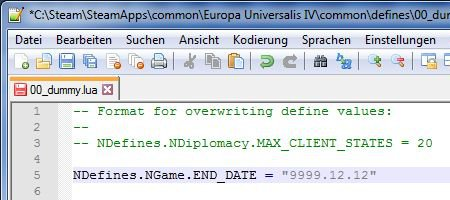

此页面正在翻译中
Defines 定义游戏使用的多个常量和切换键。 可以通过修改器对其进行编辑，以更改游戏的平衡，AI的某些操作，某些图形元素等等。
定义覆盖
此内容可能已落后版本，最后更新于1.34
当你想覆盖定义文件 /Europa Universalis IV/common/defines.lua，最好使用/Europa Universalis IV/common/defines/文件夹覆盖而不是直接编辑它们。

覆盖范例
一个简单的例子是把游戏结束时间改为9999年。为此你需要进行如下操作：
- 添加一个 common/defines 文件夹在你的模组文件里。
- 从原版游戏路径 common/defines 复制 /Europa Universalis IV/common/defines/00_dummy.lua 到你的模组文件夹。
- 为了增强兼容性，重命名00_dummy.lua 为 00_yourmodname.lua。任何文件名都是有效的。
- 结束时间的定义是‘END_DATE’。要添加这一条作为覆盖到你的00_yourmodname.lua，需要修改这条字符串。
- 每个替代定义都必须在定义组和NDefines之前，因此：NDefines.NGame.END_DATE =“ 9999.12.12”
- 请注意 , /Europa Universalis IV/common/defines.lua 定义末尾的逗号不存在。复制定义时，请记住将其删除。
- 您已经添加了覆盖定义。参见图片“替代示例”。
定义
NGame-游戏性
此内容可能已落后版本，最后更新于1.29
| 定义 | 默认值 | 允许范围 | 注释 |
|---|---|---|---|
| START_DATE | "1444.11.11" | "1.1.1" to "9999.12.12" | 设定游戏开始时间。 |
| END_DATE | "1821.1.2" | "1.1.1 to 9999.12.12" | 设定游戏结束时间，必须要比开始时间要晚一天以上。 |
| MAX_RANDOM_NEW_WORLD | "1492.1.1" | "1.1.1" to "9999.12.12" | 可以使用随机新世界的最大日期值。 |
| GREAT_POWER_FRENZY_START | "1700.1.1" | 列强狂热的开始时间。 | |
| GREAT_POWER_FRENZY_WARMUP_MONTHS | 600 | 列强狂热在开始后多少个月达到最大效能。 | |
| GREAT_POWER_FRENZY_QUICKSTART | 0 | 0 or 1 | 列强狂热是否可以因为一个联盟变得过于强大而提早开始？ |
| AGE_USHER_IN_TIME | 120 | 开启一个新时代所需要的时间。 | |
| MAX_COLONIAL_NATIONS | 75 | max is 100 | 最大殖民国家数量。 |
| MAX_CLIENT_STATES | 100 | max is 100 | 最大仆从国国数量。 |
| MAX_ESTATE_COUNTRIES | 50 | max is 100 | 最大通过阶层灾难出现的国家数量。 |
| MAX_TRADING_CITIES | 75 | max is 100 | 最大贸易城市数量。 |
| MAX_CUSTOM_COUNTRIES | 75 | max is 100 | 最大自定义国家数量。 |
| MAX_OBSERVERS | 10 | max is 100 | 最大旁观者数量。 |
| SIZE_LIMIT_FOR_ISLANDS | 25000 | 以像素为单位的阈值，用于定义什么是岛屿和什么是大陆。 | |
| DAYS_BEHIND_PAUSE | 25 | 用于 多人游戏, 如果最慢的玩家落后于此天数，则游戏将暂停。 | |
| DAYS_BEHIND_LOWER_SPEED | 10 | 在多人游戏中，如果最慢的玩家落后于此天数，则游戏将变慢。 |
NDiplomacy-外交
此内容可能已落后版本，最后更新于1.34
| 定义 | 默认 | 注释 |
|---|---|---|
| MIN_MONTHLY_COST_FOR_INFLUENCE_NATION | 5 | 每个月影响国家所需支付最低成本（实际支付成本要乘于12） |
| HEGEMONY_LOST_DAYS | 7300 | 失去霸权效果持续时间 |
| HEGEMONY_MONTHLY_PROGRESS | 0.5 | 每月霸权增长 |
| CHANGE_RIVAL_YEARS | 25 | 改变宿敌需要的年数。 |
| CONDOTTIERI_MIN_DURATION | 18 | 派遣雇佣兵需要预先支付多少个月份的费用。 |
| UNCONDITIONAL_SURRENDER_MONTHS | 2 | 开战2月后才能无条件投降。可以把数值改成负数来取消这个时间限制。 |
| SHAREMAP_PRESTIGE_TRANSFER_LOSE | -15 | 申请共享地图的威望花费。 |
| SHAREMAP_PRESTIGE_TRANSFER_GAIN | 10 | 请求共享地图得到的威望。 |
| TRADE_LEAGUE_MIN_PRESTIGE_OLD_LEADER | -50 | 担任贸易联盟领导者需要的最小威望值。 |
| TRADE_LEAGUE_MIN_PRESTIGE_NEW_LEADER | 20 | 当旧领导者辞职时成为贸易联盟新领导者所需要的最小威望。 |
| TRADE_LEAGUE_BREAK_OPINION | -50 | 如果关系低于这个值，AI将会离开贸易联盟。 |
| PRESS_SAILORS_FRACTION | 0.2 | 附庸国征收水手百分比 |
| DEMAND_UNLAWFUL_TERRITORY_BASE_DESIRE | 100 | 神罗皇帝要求非法领地基础评分。 |
| DEMAND_UNLAWFUL_TERRITORY_DEPENDENCY_DESIRE | -100 | |
| DEMAND_UNLAWFUL_TERRITORY_ALLIANCE_DESIRE | -80 | 如果是神罗皇帝的盟友，则要求非法领地会减少的评分。 |
| DEMAND_UNLAWFUL_TERRITORY_TARGET_AT_WAR_DESIRE | 0 | 如果是战争目标，则神罗皇帝要求非法领地评分。 |
| DEMAND_UNLAWFUL_TERRITORY_RIVALRY_DESIRE | 100 | 如果是神罗皇帝的宿敌，则要求非法领地会增加的评分。 |
| DEMAND_UNLAWFUL_TERRITORY_DESIRE_OPINION_MODIFIER | -1 | 与神罗皇帝关系修正对要求非法领地的评分影响。 |
| DEMAND_UNLAWFUL_TERRITORY_DESIRE_TRUST_MODIFIER | -1 | 与神罗皇帝信任修正对要求非法领地的评分影响。 |
| DEMAND_UNLAWFUL_TERRITORY_DESIRE_AE_MODIFIER | -1 | |
| TREASURE_FLEET_OPINION_HIT | -25 | 私掠造成的态度变化值（按私掠金钱/50） |
| DISHONORABLE_PEACE_MONTHS | 12 | 参见 DISHONORABLE_PEACE_WARSCORE（下一行）。设置为0可禁用该功能。 |
| DISHONORABLE_PEACE_WARSCORE | -10 | 如果你的战争分数大于这个值，并且在 DISHONORABLE_PEACE_MONTHS 所规定的时间内与敌人达成和平协议将导致 CALL_ALLY_DECLINE_PRESTIGE_PENALTY （威望损失） |
| DAYS_TO_DECLARE_WA | 30 | 在游戏开始多少天后你才能宣战。 |
| INCREASE_TRUST_COST | 10 | 增加信任花费的人情。 |
| INCREASE_TRUST_AMOUNT | 5 | 增加一次得到的信任数额。 |
| PREPARE_FOR_WAR_COST | 10 | 要求AI备战花费的人情数额。 |
| PREPARE_FOR_WAR_MONTHS | 12 | AI备战的月数。 |
| CALL_TO_ARMS_COST | 10 | 当你没有许诺土地时要求盟友参与进攻战争花费的人情数。 |
| FAVORS_LAND_DIVIDER | 2 | 和平条约中给予其他国家土地获得的人情数（取决于发展度）。 |
| DISHONOR_CALL_TRUST_CALLER | 20 | 不名誉地拒绝参战降低的信任数额（与召唤者）。 |
| DISHONOR_CALL_TRUST | 5 | 不名誉地拒绝参战降低的信任数额（与任何国家）。 |
| EXCOMMUNICATE_TRUST | 10 | 绝罚降低的信任数额（与绝罚者）。 |
| INSULT_TRUST | 5 | 侮辱造成信任降低的数额（与侮辱者）。 |
| CLAIM_THRONE_TRUST | 25 | 宣称王位降低的信任数额（与宣称者）。 |
| BROKE_LAND_PROMISE_YEARS | 30 | 违背许诺土地后多少年内不能再以许诺土地要求盟友加入战争。 |
| DEFENDER_OF_FAITH_TRUST_LOSS | -15 | 信仰守护者拒绝捍卫同种宗教国家所损失对应国家的信任值。 |
| DEFENDER_OF_FAITH_PENALTY_DAYS | 1800 | 前信仰守护者如果拒绝捍卫同种宗教国家后，想再次宣称信仰守护者的所需时间。 |
| FAVOR_GAIN_WARSCORE_FACTOR | 20 | 给予土地所获得的人情与战争分数是成比例的（因此，给予土地的条款实际战争分数越高，获得的人情越多。此时为实际战争分数去除百分号再除以2）。 |
| FAVOR_GAIN_FOR_LAND | 10 | 给予土地获得的人情（与战争参与度成比例）。 |
| FAVOR_GAIN_FOR_HELP | 20 | 帮助盟友的战争获得的人情（基于相对于其力量的战争贡献）。 |
| TRUST_PENALTY_FOR_NO_LAND | 20 | 因为未获得和平协议中预期的土地数量，而导致信任降低数额最大值（与实际获得的土地数量成正比）。 |
| TRUST_PENALTY_FOR_SEPARATE_PEACE | 10 | 单独媾和导致的信任降低数额。 |
| OFFENSIVE_WAR_COOLDOWN | 10 | 在发动进攻战争的几年之内你可以召唤盟友参战。 |
| MAX_CLIENT_STATES | 10 | 一个国家所能拥有的最大仆从国数量。 |
| ALLOW_LEADER_DEMAND_TOGGLE | 0 | 是否允许玩家设定战争领袖是否可以为其谈判。 |
| VASSALIZE_BASE_DEVELOPMENT_CAP | 100 | 当高于该数值时便不能通过外交附庸。 |
| MARCH_BASE_DEVELOPMENT_CAP | 200 | 当高于该数值时便不能转变为卫戍国。 |
| MARCH_DEVELOPMENT_FRACTION | 0.25 | 在卫戍国的发展度占宗主国发展度比例为多少之前，能够获得军事奖励。 |
| PEACE_IMPACT_ADM_SCORE | 0.25 | 平静对行政类别中的分数累积有多大影响。 |
| PEACE_IMPACT_DIP_SCORE | 0.25 | 和平对外交类别中的分数积累有多大影响。 |
| PEACE_IMPACT_MIL_SCORE | 0.25 | 和平状态对军事类别的分数积累有多大影响。 |
| AUTONOMY_WARSCORE_COST_MODIFIER | 0.33 | 自治度对省份战争分数的影响比例（此值为1时即无折扣，15%自治度等同15%省份战争分数减免；此值为0.33时，15%自治度等同5%省份战争分数减免）。 |
| GREAT_PROJECT_WARSCORE_COST_MODIFIER | 0.33 | 每个伟大工程使对应省份所需的战争分数花费增加多少（所以1个增加33%，2个增加66%等等） |
| NUM_POSSIBLE_RIVALS | 3 | 最大宿敌槽位 |
| RIVAL_PRESTIGE_BONUS | 0.25 | 从击败宿敌的战斗中获取的威望奖励。 |
| RIVAL_SPY_OFFENCE | 0.25 | 在宿敌国家构建间谍网的奖励。 |
| SPY_NETWORK_DISTANCE_EFFECT | 0.1 | 作为距离的乘数，计算首都距离对构建间谍网的惩罚。 |
| OVEREXTENSION_THRESHOLD | 1.0 | 过度扩张事件触发阈值，1代表100%。 |
| OVEREXTENSTION_POLL_BASE | 365 | 过度扩张事件爆发的基础频率（在100%时）。 |
| OVEREXTENSTION_POLL_CHANGE | 0.05 | 多于100%的过度扩张每有1%，增加的相应爆发概率。 |
| RIVAL_PEACE_COST_REDUCTION | -0.33 | 在与宿敌的合约中要求省份时，获得的外交点数减免。 |
| MAX_PEACE_TREATY_COST | 200 | 每份和平协议最大消耗的外交点数。 |
| DESIRED_NUM_OF_ELECTORS | 7 | 维持神圣罗马帝国帝国威望所需选帝侯最小值。 |
| MAX_FREE_CITIES | 12 | 神圣罗马帝国自由市最大值。 |
| MIN_NUM_ELECTORS_FOR_REMOVE_ELECTORATE | 2 | 选帝侯数量小于等于此数值时无法剥夺选帝侯身份。 |
| HRE_PRINCE_AUTHORITY_THRESHOLD | 25 | 帝国诸侯低于此数值将损失帝国威望，高于此数值将获得帝国威望。 |
| IMPERIAL_AUTHORITY_FROM_PRINCES | 0.075 | 每个诸侯带来的帝国威望。 |
| HRE_FOREIGN_CONTROL_PENALTY | -0.005 | 每个由非帝国诸侯控制（无论直接拥有或通过附庸占有）的省份对帝国威望造成的损失。 |
| HRE_HERETIC_PENALTY | -0.01 | 每个异端诸侯带来的帝国威望损失（威斯特伐利亚条约签署后减半）。 |
| LACK_OF_ELECTORS_HIT | -0.1 | 缺少选帝侯遭受的帝国威望损失（包括选帝侯被附庸的情况）。 |
| JOIN_HRE_DEVELOPMENT_CAP_VASSAL | 200 | 能够加入帝国的最大发展度。 |
| IMPERIAL_REFORM_COST | 50 | 推行一项帝国改革所需要的最小花费。 |
| IMPERIAL_REFORM_AUTHORITY_ACCEPTANCE | 1 | 帝国权威对帝国成员是否支持改革的影响 |
| CELESTIAL_EMPIRE_REFORM_COST | 70 | 推行一项天朝改革所需要消耗的天命值。 |
| CELESTIAL_EMPIRE_REFORM_STABILITY_COST | 1 | 推行一项天朝改革所需要消耗的稳定度。 |
| CELESTIAL_EMPIRE_REFORM_MIN_VALUE | 80 | 推行一项天朝改革至少需要的天命值。 |
| DEFENDER_OF_FAITH_COST | 500 | 宣称信仰守护者头衔的花费。 |
| DEFENDER_OF_FAITH_MONTHS | 24 | 因为威望不足而被其他国家取代信仰守护者头衔前的过渡时间。 |
| AMOUNT_OF_ACTIVE_CARDINALS | 7 | 至多可以控制的枢机主教数目。 |
| AMOUNT_OF_FUTURE_CARDINALS | 5 | 未来红衣主教的数量 |
| EXCOMMUNICATE_ACTION_MONTHS | 36 | 绝罚外交行动的冷却时间。 |
| CRUSADE_TIMEOUT_YEARS | 30 | 十字军号召有效时限，单位为年。 |
| WE_IMPACT_ON_ANNEX_INTEGRATE | -0.05 | 与现有的厌战度相乘，影响外交合并或吞并带来的厌战度。 |
| EMPEROR_VOTE_DAYS | 60 | 选帝侯改变投票的冷却时间。 |
| EMPEROR_REVOKE_AUTHORITY_COST | 50.0 | 移除帝国改革所需的帝国权威 |
| EMPEROR_REVOKE_MODIFIER_DAYS | 1800 | 移除帝国改革后修正持续时间 |
| TRUCE_YEARS | 5 | 停战协定时间。 |
| SCALED_TRUCE_YEARS | 10 | 停战协定年份，按照战争分数花费等比例地延长（100%战争分数时为全额停战时间）。 |
| REQUEST_HEIR_TRUCE | 5 | 强制停战所导致的停战时间。 |
| REQUEST_HEIR_AE | 20 | 强制停战所造成的侵略扩张。 |
| WARNING_YEARS | 20 | 发布警告有效时间。 |
| ANNUL_TREATIES_YEARS | 10 | 断绝同盟禁止再次结盟时限。 |
| COALITION_YEARS | 20 | 包围网消退时限。 |
| GUARANTEE_YEARS | 20 | 保证独立有效时间。 |
| REVANCHISM_MONTHLY_DECAY | 0.833 | 复仇主义消退速度修正，默认值为20年左右完全消退。 |
| MONARCH_GOV_CHANGE_LEGITIMACY_PENALTY | 0.0 | 改变政体为君主制时所受的正统性惩罚。 |
| EXTEND_REGENCY_LEGITIMACY_PENALTY | 10 | 延长摄政期对正统的惩罚 |
| EXTEND_REGENCY_IMPERIAL_AUTHORITY_PENALTY | 20 | 延长摄政期对帝国权威的惩罚 |
| DEFAULT_EXTEND_REGENCY_YEARS | 5 | 默认延长摄政年限 |
| EXTEND_REGENCY_ALERT_LEEWAY_DAYS | 365 | 离摄政结束还有多久才会提醒。 |
| BASE_SPY_DISCOVERY_CHANCE | 0.25 | 基础间谍暴露几率。 |
| JUSTIFY_TRADE_CONFLICT_LIMIT | 0.2 | 能被用以正当化贸易争端时，自身在贸易节点所需要的贸易力量。 |
| JUSTIFY_TRADE_CONFLICT_ACTOR_LIMIT | 0.1 | 能被用以正当化贸易争端时，对方在贸易节点所需要的贸易力量。 |
| PRESTIGE_PENALTY_ON_DISCOVER_JTC | -5 | 如果被发现在正当化贸易冲突，所蒙受的威望惩罚。 |
| MIN_ASKED_TRADE_POWER | 10 | 最低可以要求转移的贸易竞争力。 |
| MAX_ASKED_TRADE_POWER | 50 | 最高可以要求转移的贸易竞争力。 |
| MIN_PAPAL_INFLUENCE_TO_PREVENT_EXCOMMUNICATION | 50 | 教皇的影响力可以防止开除教籍（效果未知）。 |
| HRE_VOTE_ENEMY | -200 | 对处于敌对战争中的国家的投票修正。 |
| HRE_VOTE_LEGUE_ENEMY | -200 | 对处于宗教联盟敌对阵营的国家的投票修正。 |
| HRE_VOTE_LEAGUE_LEADER | 100 | 对宗教阵营领袖的投票修正。 |
| HRE_VOTE_LEAGUE_LEADER_FRIEND | 200 | 作为同一宗教联盟成员，对联盟领袖的投票修正。 |
| HRE_VOTE_HERETIC | -50 | 对异端国家投票修正。 |
| HRE_VOTE_OVERLORD | 50 | 附庸国对宗主国投票修正。 |
| HRE_VOTE_VASSAL_ELECTOR | -50 | 对附庸了选帝侯的国家的投票修正。 |
| HRE_VOTE_TOO_SMALL | -25 | 对发展度低于50的国家的投票修正（弹丸小国）。 |
| HRE_VOTE_BIG_COUNTRY | 25 | 基于发展度的投票修正（帝国大诸侯）。 |
| HRE_VOTE_VERY_BIG_COUNTRY | 50 | 基于发展度的投票修正（帝国大诸侯）。 |
| HRE_VOTE_NON_MEMBER | -50 | 对非神圣罗马帝国成员的投票修正。 |
| HRE_VOTE_SAME_CULTURE_GROUP | 5 | 对相同文化组国家的投票修正 |
| HRE_VOTE_ALLIANCE | 30 | 对同盟的投票修正。 |
| HRE_VOTE_ROYAL_MARRIAGE | 10 | 对王室联姻对象的投票修正。 |
| HRE_VOTE_CORE_CLAIM | -50 | 对占据了己方核心或拥有宣称的国家的投票修正。 |
| COUNTERESPIONAGE_DISCOVER_CHANCE | 0.33 | 间谍防御效率。 |
| COUNTERESPIONAGE_NETWORK_IMPACT | -0.50 | 减缓间谍网组建速度。 |
| BUILD_SPY_DISCOVERED_PENALTY | -10.0 | 间谍网被发现后构建速度惩罚。 |
| BUILD_SPY_NETWORK_SPEED | 1.5 | 间谍网组建速度。 |
| SPY_NETWORK_DECAY | 1 | 间谍网衰退速度。 |
| SPY_NETWORK_SIEGE_EFFECT | 0.2 | 间谍网对围城效率影响。 |
| SPY_NETWORK_AE_EFFECT | -0.3 | 间谍网对侵略扩张(AE)影响。 |
| SPY_NETWORK_TECH_EFFECT | -0.05 | 间谍网从每一级科技差获得的奖励。 |
| SPY_NETWORK_TECH_EFFECT_MAX | -0.3 | 间谍网从科技差最高获得的将领。 |
| DETECTED_SPY_NETWORK_DAMAGE_MIN | 10 | 发现间谍网后，最小摧毁规模。 |
| DETECTED_SPY_NETWORK_DAMAGE_MAX | 30 | 发现间谍网后，最大摧毁规模。 |
| SPY_NETWORK_DISCOVER_WAR | 50 | |
| SUPPORT_REBELS_EFFECT | 10 | 支持叛军效率。 |
| SUPPORT_REBELS_MONEY_FACTOR | 0.5 | 支持叛军花费金钱。 |
| FABRICATE_CLAIM_COST | 20 | 伪造宣称消耗。 |
| FABRICATE_CLAIM_COST_MODIFIER_PER_CLAIM | 0.25 | 每获取一个宣称，伪造宣称花费增加。 |
| CLAIM_STATE_MODIFIER | 0.5 | 伪造地区宣称花费修正。 |
| JUSTIFY_TRADE_CONFLICT_COST | 10 | 正当化贸易冲突花费。 |
| INFILTRATE_ADMINISTRATION_COST | 40 | 管理渗透花费。 |
| SABOTAGE_REPUTATION_COST | 60 | 破坏名誉花费。 |
| STEAL_MAPS_COST | 50 | 偷取地图信息花费。 |
| SUPPORT_REBELS_COST | 30 | 支持叛军花费。 |
| SOW_DISCONTENT_COST | 80 | 挑动不满情绪花费。 |
| AGITATE_FOR_LIBERTY_COST | 90 | 煽动独立花费。 |
| SABOTAGE_RECRUITMENT_COST | 80 | 破坏征兵花费。 |
| SLANDER_MERCHANTS_COST | 70 | 诽谤商人团花费。 |
| CORRUPT_OFFICIALS_COST | 25 | 腐化官员花费。 |
| INFILTRATE_ADMINISTRATION_DURATION | 60 | 管理渗透持续时间（月） |
| SABOTAGE_REPUTATION_DURATION | 1825 | 破坏征兵持续时间（天） |
| CORRUPT_OFFICIALS_DURATION | 1825 | 腐化官员持续时间（天） |
| SUPPORT_REBELS_DURATION | 5 | 支持叛军持续时间（年） |
| SOW_DISCONTENT_DURATION | 1825 | 挑动不满情绪持续时间（天） |
| AGITATE_FOR_LIBERTY_DURATION | 60 | 煽动独立持续时间（月） |
| SABOTAGE_RECRUITMENT_DURATION | 60 | 破坏征兵持续时间（月） |
| SLANDER_MERCHANTS_DURATION | 60 | 诽谤商人团花费（月） |
| AE_OTHER_CONTINENT | 10 | 对非同一大陆国家造成的侵略扩张影响修正（绝对值，减法）。 |
| AE_SAME_CULTURE | 0.5 | 所征服省份对同文化国家造成的侵略扩张影响修正。 |
| AE_SAME_CULTURE_GROUP | 0.25 | 所征服省份对（与该省份）同文化组国家造成的侵略扩张影响修正。 |
| AE_INFIDEL_CONQUEST | 0.25 | 从异教国家夺取同宗教省份造成的侵略扩张影响修正。 |
| AE_SAME_RELIGION | 0.5 | 所征服省份对同宗教国家造成的侵略扩张影响修正。 |
| AE_SAME_RELIGION_GROUP | 0.0 | 所征服省份对同宗教组国家造成的侵略扩张影响修正。 |
| AE_DIFFERENT_RELIGION | -0.5 | 所征服省份对异教国家造成的侵略扩张影响修正。 |
| AE_HRE_INTERNAL | 0.5 | 征服神罗省份造成的侵略扩张影响修正。 |
| AE_ATTACKER_DEVELOPMENT | 0.01 | 夺取省份对进攻战争中一同作战者造成的侵略扩张影响修正，随发展度成比例上升，在1000发展度时最高为+50%。 |
| AE_DEFENDER_DEVELOPMENT | 0.01 | 夺取省份对防御战争中一同作战者造成的侵略扩张影响修正，随发展度成比例上升，在1000发展度时最高为+50%。 |
| AE_DISTANCE_BASE | 0.75 | 侵略扩张影响距离乘数，每100边界距离增加一次幂，100距离以内为0次幂。 |
| AE_SAME_OVERLORD | 0.5 | 夺取省份对拥有同一宗主国的国家造成的侵略扩张影响修正。 |
| AE_PROVINCE_CAP | 30 | 该数值以上的发展度不会造成更多的侵略扩张影响（与战争分数相关设定一致）。 |
| AE_FABRICATE_CLAIM | 2.5 | 伪造宣称被发现后获得的侵略扩张影响（1.20版本后伪造宣称机制修改，此设定废除） |
| AE_THREATEN_WAR | 1.0 | 威胁开战造成的侵略扩张影响修正（乘法）。 |
| PO_DEMAND_PROVINCES_AE | 0.6 | 夺取省份时每点发展度带来的侵略扩张影响。 |
| PO_RETURN_CORES_AE | 0.4 | 归还省份时每点发展度造成的侵略扩张影响（仅当归还给胜利者的属国时生效） |
| PO_FORM_PU_AE | 0.20 | 建立联合统治时每点发展度造成的侵略扩张影响 |
| PO_CONCEDE_COLONIAL_AE | 0.2 | 夺取殖民地省份每点发展度带来的侵略扩张影响 |
| PO_BECOME_VASSAL_AE | 0.5 | 强制附庸每点发展度带来的侵略扩张影响 |
| PO_FORCE_JOIN_EMPIRE_AE | 0.2 | 强制加入神罗带来的侵略扩张影响 |
| PO_TRANSFER_VASSAL_AE | 0.33 | 转移属国每点发展度带来的侵略扩张影响 |
| PO_ANNEX_PRESTIGE | 0.25 | 完全吞并每点发展度带来的威望 |
| PO_DEMAND_PROVINCES_PRESTIGE | 0.25 | 战争中夺取省份每点发展度带来的威望 |
| PO_PILLAGE_CAPITAL_PRESTIGE | 0 | 劫掠首都发展度带来的威望 |
| PO_REVOKE_CORES_PRESTIGE | 0.1 | 放弃核心每点发展度带来的威望 |
| PO_RETURN_CORES_PRESTIGE | 0.25 | 归还核心每点发展度带来的威望 |
| PO_RELEASE_VASSAL_PRESTIGE | 0.25 | 释放附庸国每点发展度带来的威望 |
| PO_TRANSFER_VASSAL_PRESTIGE | 0.25 | 转移附庸国每点发展度带来的威望 |
| PO_RELEASE_ANNEXED_PRESTIGE | 0.25 | 释放国家每点发展度带来的威望 |
| PO_CHANGE_RELIGION_PRESTIGE | 5 | 转换宗教带来的威望 |
| PO_FORM_PU_PRESTIGE | 0.25 | 建立联合统治每点发展度带来的威望 |
| PO_BECOME_VASSAL_PRESTIGE | 0.25 | 强迫附庸每点发展度带来的威望 |
| PO_BECOME_VASSAL_PRESTIGE | 0.25 | 强迫附庸每点发展度带来的威望 |
| PO_JOIN_EMPIRE_PRESTIGE | 0.25 | 强迫加入神罗每点发展度带来的威望 |
| PO_CONCEDE_DEFEAT_PRESTIGE | 10 | 承认失败获得的威望 |
| PO_DISMANTLE_REVOLUTION_PRESTIGE | 25 | 扑灭革命获得的威望 |
| PO_CHANGE_HRE_RELIGION_PRESTIGE | 25 | 神圣罗马帝国改变官方信仰获得的威望 |
| PO_ANNUL_TREATY_PRESTIGE | 1 | |
| PO_REVOKE_ELECTOR_AE | 25 | 移除选帝侯造成的侵略扩张影响（在缺少 |
| PO_REVOKE_ELECTOR_PRESTIGE | 5 | 移除选帝侯获得的威望 |
| PO_TRADE_POWER_PRESTIGE | 2 | 转移贸易竞争力获得的威望 |
| PO_CONCEDE_COLONIAL_PRESTIGE | 2 | 移交殖民地获得的威望 |
| PO_GIVE_UP_CLAIM_PRESTIGE | 2 | 放弃宣称获得的威望 |
| PO_HUMILIATE_RIVAL_PRESTIGE | 5 | 羞辱宿敌获得的威望 |
| PO_FORCE_MIGRATION_PRESTIGE | 2 | 强制迁徙获得的威望 |
| PO_ENFORCE_REBEL_DEMANDS_PRESTIGE | 2 | 强迫同意叛军要求带来的威望 |
| PO_TAKE_MANDATE_PRESTIGE | 25 | 夺取天命带来的威望 |
| PO_TAKE_MANDATE_AE | 0 | 夺取天命带来的侵略扩张影响 |
| PO_SPREAD_REVOLUTION_PRESTIGE | 0.1 | 强制传播革命每点发展度带来的威望 |
| PO_ENFORCE_FLEET_BASING_PRESTIGE | 2 | 强迫提供船只停泊权带来的威望 |
| PO_ENFORCE_MIL_ACCESS_PRESTIGE | 2 | 强迫提供军事通行权带来的威望 |
| PO_WAR_REPARATIONS_PRESTIGE | 2 | 要求战争赔偿带来的威望 |
| PO_END_RIVALRY_PRESTIGE | 5 | 终止宿敌带来的威望 |
| PEACE_COST_PRIMITIVE_NERF | 0.75 | 对原始部落战争分数花费乘数 |
| PEACE_COST_DEMAND_PROVINCE | 0.8 | 索要省份战争分数花费乘数（分数为此数值乘以省份价值，默认设置时与完全吞花费设定一致） |
| PEACE_COST_CONCEDE_PROVINCE | 0.8 | 索要殖民地区域省份的战争分数花费乘数 |
| PEACE_COST_BECOME_VASSAL | 0.8 | 附庸国家的战争分数花费乘数（分数为此数值乘以省份价值） |
| PEACE_COST_PILLAGE_CAPITAL | 1 | 掠夺首都发展度战争花费乘数（分数为此数值乘以省份价值） |
| PEACE_COST_RETURN_CORE | 0.8 | 归还核心战争分数花费乘数（分数为此数值乘以省份价值） |
| PEACE_COST_REVOKE_CORE | 0.4 | 放弃核心战争分数花费乘数（分数为此数值乘以省份价值） |
| PEACE_COST_RELEASE_ANNEXED | 1 | 释放（被吞并的）国家战争分数花费乘数（分数为此数值乘以省份价值） |
| PEACE_COST_RELEASE_VASSAL | 0.4 | 释放附庸战争分数花费乘数（分数为此数值乘以省份价值） |
| PEACE_COST_REVOKE_ELECTOR | 60 | 取消选帝侯身份战争分数花费 |
| PEACE_COST_UNION | 60 | 组建联合统治分数花费 |
| PEACE_COST_SUBJUGATE | 90 | 使用附庸战争借口的战争分数花费 |
| PEACE_COST_JOIN_HRE | 90 | 强迫加入神罗的最大战争分数花费 |
| PEACE_COST_CONVERSION | 0.8 | 强制信仰战争分数花费乘数（分数为此数值乘以省份价值） |
| PEACE_COST_RELEASE | 2 | 释放国家战争花费乘数（随省份数目增加而上升） |
| PEACE_COST_CONCEDE | 10 | 承认失败战争分数花费 |
| PEACE_COST_GOLD_STEP | 5 | 每有一笔贷款规模的赔款所需的分数 |
| PEACE_COST_GOLD_MAX | 5 | 最多可以在战争合约中，索取此数额笔数贷款规模的赔款（即默认情况至多索取25战争分数的赔款） |
| PEACE_COST_ANNUL | 10 | 废除条约的战争分数花费 |
| PEACE_COST_CHANGE_GOVERNMENT | 50 | 强制转变政体的战争分数花费 |
| PEACE_COST_TRADE_POWER | 30 | 转移贸易竞争力的战争分数花费 |
| PEACE_COST_STEER_TRADE | 60 | 转移贸易的战争分数花费 |
| PEACE_COST_INDEPENDANCE | 30 | 断绝盟约的战争分数花费 |
| PEACE_COST_ENFORCED_FLEET_BASING_RIGHTS | 25 | 强制舰队停泊权的战争分数花费 |
| PEACE_COST_ENFORCED_MILITARY_ACCESS | 15 | 强制军队通行权的战争分数花费 |
| PEACE_COST_WAR_REPARATIONS | 10 | 战争赔款的战争分数花费 |
| PEACE_COST_GIVE_UP_CLAIM | 20 | 放弃对某国全部宣称的战争分数花费 |
| PEACE_COST_DISMANTLE_REVOLUTION | 100 | 粉碎革命战争分数花费 |
| PEACE_COST_CHANGE_HRE_RELIGION | 100 | 改变神圣罗马帝国官方信仰战争分数花费（宗教霸权享受50%战争分数花费修正，故实际仅需要50%战争分数） |
| PEACE_COST_HUMILIATE_RIVAL | 40 | 羞辱宿敌战争分数花费 |
| PEACE_COST_FORCE_MIGRATION | 50 | 强制迁徙战争分数花费 |
| PEACE_COST_FORCE_OUT_COLONIZERS | 20.0 | 放弃殖民地战争分数花费 |
| PEACE_COST_ENFORCE_REBEL_DEMANDS | 50 | 同意叛军要求战争分数花费 |
| PEACE_COST_END_RIVALRY | 30 | 终止宿敌战争分数花费 |
| PEACE_COST_TAKE_MANDATE | 50 | 夺取天命战争分数花费 |
| PEACE_COST_SPREAD_REVOLUTION | 60 | 传播革命战争分数花费 |
| MAX_PEACE_COST_TRIBUTARY_STATE | 80 | 强制建立朝贡关系最大战争分数花费 |
| MAX_PEACE_COST_CANCEL_SUBJECT | 100 | 强制解除附庸关系最大战争分数花费 |
| MAX_WARSCORE | 100 | 最大战争分数 |
| MAX_PEACE_TREATY_PRESTIGE | 100 | 合约最大可获得威望 |
| MAX_PEACE_TREATY_AE | 50 | 合约最大侵略扩张影响 |
| PEACE_COST_DEMAND_NON_OCCUPIED_PROVINCE_MULT | 1.1 | 索取未占领省份的战争分数花费 |
| PEACE_COST_DEMAND_CAPITAL_MULT | 1.2 | 索取首都的战争分数花费 |
| PO_TRADE_POWER_AMOUNT | 0.5 | 合约中转移贸易竞争力的数额 |
| PO_HUMILIATE_PRESTIGE_HIT | 20 | 羞辱条目的威望损失 |
| PO_HUMILIATE_POWER_GAIN | 100 | 羞辱条目所能获得的君主点数（宣战借口需为“羞辱宿敌”） |
| PO_SPREAD_REVOLUTION_POWER_GAIN | 1.0 | 传播革命所获得的点数（乘于发展度） |
| PO_SPREAD_REVOLUTION_MAX_POWER_GAIN | 999 | 传播革命所能获得的最大点数 |
| MAX_ANNEX_SIZE | 10000 | 至多能够吞并此数值省份的国家 |
| ALLY_PEACE_COST_MULT | 2 | 对非联合作战方战争分数花费 |
| ALLY_AE_MULT | 1.5 | 对非联合作战方的要求，所产生的侵略扩张乘数 |
| ANNEX_DIP_COST_PER_DEVELOPMENT | 8 | 外交吞并每点发展度所需外交点数 |
| DEFENDER_AE_MULT | 0.75 | 防守方侵略扩张乘数（除非宣战借口是互相的，例如无论进攻者是谁，输出革命与镇压革命是同一场战争双方各自的借口，胜利者总被认为是防守方） |
| PO_REVOKE_REFORM_PRESTIGE | 10 | 移除帝国改革获得威望 |
| PO_REVOKE_REFORM_PEACE_COST | 100 | 移除帝国改革所需分数 |
| DIP_PORT_FEES | 0.1 | 外交行动舰船停泊权花费（此数值乘以拥有港口的省份数，若符合要求的省份增加，收费同样增加） |
| IMPROVE_RELATION_MAX | 25 | 提升关系最大值 |
| IMPROVE_RELATION_SPEED | 1 | 提升关系速度 |
| STABHIT_FOR_BREAKING_ALLIANCE_IN_WAR | 2 | 拒绝战争呼唤外交威望损失 |
| WARGOAL_PEACE_FRACTION | 0.66 | 战争目标所需战争分数 |
| CLAIM_PEACE_COST_DIP_FRACTION | -0.1 | 索取拥有宣称的省份所需外交点数减成 |
| CORE_PEACE_COST_DIP_FRACTION | -0.2 | 索取核心省份所需外交点数减成 |
| CANCEL_TRADE_TRANSFER_PRESTIGE_HIT | -5 | 取消转移贸易竞争力条约损失威望 |
| DIPLOMAT_SPEED | 20.0 | 外交官移动速度 |
| DIPLOMAT_COOLDOWN_TIME | 1 | 再次执行外交命令冷却时间 |
| MIN_RELATIONS_TO_ALLY | -25 | （双方关系）低于此数值便不可能结盟 |
| MIN_RELATIONS_TO_SUPPORT_INDEPENDENCE | -25 | （双方关系）低于此数值便不可能支持独立 |
| ELECTIVE_VICTORY_PRESTIGE | 25 | 在选王制中胜选所获得的威望 |
| ELECTIVE_VICTORY_LEGITIMACY | 10 | 在选王制中胜选所获得的正统性 |
| INTEGRATE_UNION_MIN_YEARS | 50 | 建立关系低于此年份的被联统国无法被合并 |
| INTEGRATE_VASSAL_MIN_YEARS | 10 | 建立关系低于此年份的附庸国无法被吞并 |
| MONTHS_BEFORE_TOTAL_OCCUPATION | 60 | 在战争开始此数值月份前，仅控制战争领袖无法获得100%战争分数 |
| WAR_REPARATIONS_FACTOR | 0.1 | 战争赔偿占战败国收入 |
| WAR_REPARATIONS_YEARS | 10 | 战争赔偿年限 |
| MINIMUM_TRADE_POWER_TO_PREVENT_PRIVATEER | 0.2 | 战胜国至少需要在某一节点（本埠或派遣商人的节点）拥有此份额的贸易竞争力，才能禁止战败国的私掠行为 |
| MINIMUM_TRADE_POWER_SHARE_FOR_PRIVATEER_OPINION_HIT | 0.1 | 至少需要在某一节点（本埠或派遣商人的节点）拥有此份额的贸易竞争力，才允许使用贸易保护战争借口 |
| MAX_NUMBER_OF_CB_ITEMS | 15 | 战争借口页面最多能显示的盾徽的数目 |
| CB_ITEM_COUNTRY_SCORE_LIMIT | 20 | 任何低于分数限制的国家都与外交视图中的CB列表有关 |
| SPY_DISCOVERY_COOLDOWN_MONTHS | 12 | 在间谍网被发现后，间谍网规模至少要等待此数值的时间才能重新恢复增长。 |
| DIPLOANNEX_LIBERTY_THRESHOLD | 50 | 当附庸国独立倾向大于等于此数值时，便无法获得外交吞并进度 |
| CELESTIAL_EMPIRE_DEFAULT_INFLUENCE | 60 | 夺取天命后，天命初始值 |
| CELESTIAL_EMPIRE_MODIFIER_THRESHOLD | 50 | 高于此数值的天命值会带来正面修正，反之为负面修正 |
| CELESTIAL_EMPIRE_MANDATE_PER_STABILITY | 0.24 | 每点正稳定每年带来的天命增长 |
| CELESTIAL_EMPIRE_MANDATE_PER_STATE_WITH_PROSPERITY | 0.03 | 每个繁荣的直属州每年带来的天命增长 |
| CELESTIAL_EMPIRE_MANDATE_PER_HUNDRED_DEVASTATION | -10.0 | 此数值与存在荒废省份的发展度的乘积为年度天命减少（随着荒废度等比例变化） |
| CELESTIAL_EMPIRE_MANDATE_PER_HUNDRED_TRIBUTARY_DEV | 0.15 | 朝贡国每有100点发展度便可提供的年度天命增长 |
| CELESTIAL_EMPIRE_MANDATE_PER_HUNDRED_NONTRIBUTARY_DEV | 0.0 | 接壤的非朝贡国每100点发展度带来的年度天命减少 |
| CELESTIAL_EMPIRE_MANDATE_FROM_DEFENDING | 5 | 每次成功捍卫天子头衔所获得的天命值 |
| CELESTIAL_EMPIRE_MANDATE_PER_5_LOANS | -0.36 | 每5笔贷款带来的年度天命降低 |
| REMOVE_ELECTORATE_INFLUENCE_COST | 10 | 移除选帝侯身份花费帝国威望 |
| GRANT_ELECTORATE_INFLUENCE | 0 | 授予选帝侯身份获得的帝国威望 |
| GRANT_FREECITY_INFLUENCE | 0 | 授予自由市身份获得的帝国威望 |
| REMOVE_FREECITY_INFLUENCE_COST | 5 | 授予自由市身份花费的帝国威望 |
| IMPERIAL_CITY_IA | 0.005 | 自由市每月提供帝国威望增长 |
| AGITATE_FOR_LIBERTY_DESIRE | 25 | 处于煽动叛乱时间内，独立倾向增长值 |
| AGITATE_FOR_LIBERTY_RATE | 1 | 煽动叛乱期间，独立倾向月度增长值。（持续增长至最大值，或消退后逐渐降低至0） |
| STUDY_TECHNLOGY_CATEGORY_CAP | 1 | 通过窃取科技，每种科技可以获得的君主点数收益（1.16版本后取消） |
| STUDY_TECHNOLOGY_MIN_TECHS_AHEAD | 2 | 窃取科技所需的科技差 |
| THREATEN_WAR_PRESTIGE | 10 | 顺从威胁开战损失威望 |
| THREATEN_WAR_TRUCE_YEARS | 5 | 威胁开战导致的停战期 |
| THREATEN_WAR_ALLIANCE_OFFSET | 1.5 | 如果（对方对己方）同盟的力量对比高于这一阈值，则会出现“军事同盟间的相对力量”的倾向影响 |
| THREATEN_WAR_ALLIANCE_GRADIENT | 20 | 威胁开战外交行动中，盟友相对力量对比带来的倾向影响，最大为+100 |
| THREATEN_WAR_COALITION_GRADIENT | -50 | 计算包围网的力量对比带来的倾向影响，最大为-1000 |
| BREAK_ALLIANCE_STRENGTH_OFFSET | 2 | 如果如果（对方对己方）同盟的力量对比高于这一阈值，便可能倾向于断绝盟约 |
| BREAK_ALLIANCE_STRENGTH_GRADIENT | 25 | 战争号召时，盟友相对力量对比带来的倾向影响，最大为+100' |
| BREAK_ALLIANCE_DISTANCE_FACTOR | -0.15 | 距离对AI响应号召的倾向影响 |
| BREAK_ALLIANCE_WAREXHAUST_FACTOR | 2 | 厌战度对AI响应号召的倾向影响 |
| BREAK_ALLIANCE_DEBT_FACTOR | 0.5 | 债务与收入比值对AI响应号召的倾向影响 |
| BREAK_ALLIANCE_PENALTY_MONTHS | 120 | 打破盟约带来的观念修正持续时间 |
| BREAK_ALLIANCE_PENALTY_SCALER | -0.85 | 打破盟约带来的观念修正乘数，最大值为-100 |
| BREAK_ALLIANCE_DIPLOREP_FACTOR | 3 | 战争号召时，外交声誉带来的倾向影响 |
| AE_COALITION_THRESHOLD | -50 | 低于该侵略扩张才会组建包围网 |
| ABANDON_UNION_PRESTIGE | -25 | 放弃联合统治受到的威望惩罚 |
| PAY_SUBJECT_DEBT_LIBERTY_DESIRE_REDUCTION | 5 | 每代为偿付一笔贷款所降低的独立倾向 |
| NUM_OF_GREAT_POWERS | 8 | 列强数目 |
| LEAVING_GREAT_POWER_YEARS | 5 | 最末位列强可以保留的上榜时间 |
| GREAT_POWER_SUBJECT_CONTRIBUTION | 0.5 | 附庸国发展度对列强分数贡献 |
| FORCE_BREAK_ALLIANCE_TRUCE_YEARS | 10 | 断绝盟约停战时间 |
| FORCE_END_RIVALRY_YEARS | 15 | 因战争条约解除宿敌后，在此数值年限前无法再次将目标选为宿敌 |
| DECLINE_FAVOR_ACTION_STAB_HIT | 0 | 拒绝人情行动而失去稳定值 |
| TRIBUTE_BASE_CASH | 0.125 | 此倍数的年收入将成为朝贡贡金 |
| TRIBUTE_BASE_ADM | 0.03 | 此倍数的总发展度将成为朝贡的行政点数 |
| TRIBUTE_BASE_DIP | 0.03 | 此倍数的总发展度将成为朝贡的外交点数 |
| TRIBUTE_BASE_MIL | 0.03 | 此倍数的总发展度将成为朝贡的军事点数 |
| TRIBUTE_MAX_MONARCH_POWER | 12.0 | 朝贡最大可贡献点数 |
| TRIBUTE_BASE_MANPOWER | 0.25 | 此倍数的总人力将成为朝贡的人力 |
| TRIBUTE_SENT_TRUST | 1 | 朝贡国如约朝贡增长的信任度 |
| TRIBUTE_REFUSED_TRUST | -15 | 朝贡国拒绝朝贡增长的信任度 |
| DECLINED_TRIBUTARY_TRUST | -15 | 朝贡国未能建立朝贡关系或断绝朝贡关系损失的信任度 |
| TRIBUTARY_OVERLORD_LOW_TRUST | 30 | 低于此信任度将可能导致断绝朝贡关系 |
| REFUSED_CALL_FROM_TRIBUTARY_MANDATE_LOSS | 10 | 拒绝朝贡国战争召唤损失的天命 |
| AUTODIPLO_TARGET_NEIGHBOURS_HOPELESS_LIMIT | -150 | （对邻国）AI在好感度低于此值后便不会再改善关系 |
| AUTODIPLO_TARGET_NEIGHBOURS_IMPROVECAP | 80 | （对邻国） AI会优先选取此数值以下好感度的国家改善关系 |
| AUTODIPLO_TARGET_SUBJECTS_HOPELESS_LIMIT | -200 | （对属国）AI在好感度低于此值后便不会再改善关系 |
| AUTODIPLO_TARGET_SUBJECTS_IMPROVECAP | 160 | （对属国） AI会优先选取此数值以下好感度的国家改善关系 |
| AUTODIPLO_TARGET_COALITION_HOPELESS_LIMIT | -150 | （对包围网国家）AI在好感度低于此值后便不会再改善关系 |
| AUTODIPLO_TARGET_COALITION_IMPROVECAP | 10 | （对包围网国家） AI会优先选取此数值以下好感度的国家改善关系 |
| AUTODIPLO_TARGET_COALITION_START_TO_IGNORE_AE_ABOVE_THIS | -25 | （对包围网国家）AI会无视超过该AE的国家 |
| AUTODIPLO_TARGET_COALITION_START_TO_IGNORE_AE_ABOVE_THIS_SCORE_MULTIPLIER | 10 | （对包围网国家）AI会无视AE超过乘于该数值的国家 |
| AUTODIPLO_TARGET_COALITION_HIGHEST_PRIORITY_AE | 50 | （对包围网国家）AI会最优先选取此数值AE的国家改善关系 |
| AUTODIPLO_TARGET_COALITION_IMPROVE_ABOVE_0_SCORE_BONUS | 20 | （对包围网国家）AI在提高好感度直到超过0时得到的AI得分奖励 |
| AUTODIPLO_TARGET_COALITION_ALREADY_IN_COALITION_SCORE_BONUS | 50 | 加入了包围网的AI得到的AI得分奖励 |
| AUTODIPLO_TARGET_ALLIES_HOPELESS_LIMIT | -75 | （对同盟国家）AI在好感度低于此值后便不会再改善关系 |
| AUTODIPLO_TARGET_ALLIES_IMPROVECAP | 80 | （对同盟国家） AI会优先选取此数值以下好感度的国家改善关系 |
| AUTODIPLO_TARGET_THREATS_HOPELESS_LIMIT | -100 | （对受到威胁的国家）AI在好感度低于此值后便不会再改善关系 |
| AUTODIPLO_TARGET_THREATS_IMPROVECAP | 80 | （对受到威胁的国家） AI会优先选取此数值以下好感度的国家改善关系 |
| KNOWLEDGE_SHARING_INSTITUTION_GROWTH_MONTHLY | 1.0 | 思潮分享月度增长 |
| KNOWLEDGE_SHARING_DURATION_YEARS | 10 | 思潮分享年限 |
| KNOWLEDGE_SHARING_COST_PERCENT_MONTHLY | 10.0 | 思潮分享需支付的月度收入百分比 |
| SCORNFUL_INSULT_PRESTIGE_COST | 5.0 | 轻蔑地侮辱花费威望 |
| CHANGE_COLONIAL_TYPE_COST | 1000 | 改变殖民地类型的花费 |
| CHARTER_COMPANY_BASE_COST | 1000 | 特许贸易公司基础花费 |
| CHARTER_COMPANY_MINIMUM_COST | 100 | 特许贸易公司最低花费 |
| GOOD_RELATIONS | 100 | 关系良好阈值 |
| GREAT_RELATIONS | 150 | 关系亲密阈值 |
| FORCE_JOIN_HRE_AUTHORITY_PER_DEVELOPMENT | 0.1 | 强迫加入神圣罗马帝国每发展度可获得帝国威望 |
| FORCE_JOIN_HRE_YEARS_BOUND_BY_TREATY | 50 | 强迫加入神圣罗马帝国战争借口有效时间 |
| VOLUNTARY_JOIN_HRE_AUTHORITY_PER_DEVELOPMENT | 0.1 | 自愿加入神罗每点发展度带来的帝国威望 |
| LEAVE_HRE_AUTHORITY_PER_DEVELOPMENT | -0.2 | 脱离神罗每点发展度所损失的帝国威望 |
| IMPERIAL_REALM_WAR_IA_COST | 25.0 | 解放帝国领土获得的帝国威望 |
| IMPERIAL_REALM_WAR_MONTHS | 60 | 解放帝国领土战争借口持续时间 |
| SAME_TRIBUTARY_OVERLORD_SUPPORT_INDEPENDENCE_CHANCE | -50 | |
| UNCONDITIONAL_SURRENDER_MIN_MONTHS | 12 | 无条件投降最小月数 |
NCountry
此内容可能已落后版本，最后更新于1.29
| Define | Default | Notes |
|---|---|---|
| CLEAR_PROVINCE_VARIABLES_ON_CLEAR_OWNER | 1 | --设置为0，以避免在一个省的所有者被设置为无时清除省的变量（修改者要求）。 |
| CLEAR_PROVINCE_FLAGS_ON_CLEAR_OWNER | 1 | --设置为0，以避免在一个省的所有者被设置为无时清除省的标志（modder要求）。 |
| CLEAR_PROVINCE_SAVED_NAMES_ON_CLEAR_OWNER | 1 | --当一个省的所有者被设置为 "无 "时，设置为0以避免清除该省保存的名称（修改者要求）。 |
| CREATE_LEADER_FROM_CONSORT_PRESTIGE_COST | 10 | |
| EXPLOIT_ADM_INCOME | 60 | 剥削每点基础税收将提供此数值月份的金币收入 |
| EXPLOIT_DIP_SAILORS | 6 | 剥削每点基础生产将提供此数值月份的水手 |
| EXPLOIT_MIL_MANPOWER | 6 | 剥削每点基础人力将提供此数值月份的人力 |
| EXPLOIT_COOLDOWN_MONTHS | 240 | 剥削发展度冷却期 |
| SCORNFUL_INSULT_MULTIPLIER | 2 | |
| MONTHS_FOR_MAX_MP_ALERT | 3 | |
| CHANGE_COLONIAL_TYPE_COOLDOWN_DURATION | 10 | 更改殖民地类型的冷却时间 |
| CONCENTRATE_DEVELOPMENT_COOLDOWN_DURATION | 50 | 集中发展度冷却时间 |
| SIBERIAN_FRONTIER_DAILY_BASE | 5 | 西伯利亚前哨站月度基础增长（即使是键值写为DAILY_BASE） |
| SIBERIAN_FRONTIER_DAILY_RANGE | 11 | 西伯利亚前哨站月度额外增长范围 |
| CONTRIBUTE_TO_CAPITAL_MIN_DEV_RATIO | 0.5 | 宗主国的发展度乘以此值必须小于附庸国的发展度时，可以使用首都进贡功能 |
| FORCE_SEPPUKU_POWER_MULTIPLIER | 5 | 勒令切腹所能获得此数值乘以被害君主三项属性对应的点数 |
| SHOGUN_INTERACTIONS_DURATION | 10 | 幕府政体特殊功能持续时间 |
| SHOGUN_INTERACTIONS_LEGITIMACY | -20 | 幕府政体特殊功能花费正统性 |
| GOLDEN_ERA_YEARS | 50 | 黄金年代时间 |
| SPLENDOR_ABILITY_COST | 800 | 时代能力需要花费的辉煌点数 |
| PROSPERITY_MONTHLY_DECLINE | -2 | 存在荒废度时，繁荣度月度衰减 |
| PROSPERITY_INCREASE_SIZE | 1 | 繁荣度增长规模（投20面骰，如果点数小于君主点数之和则会产生一次增长） |
| CORRUPTION_FROM_BANNERS | 5 | 招募100%陆军规模的八旗军队带来的腐败 |
| MONARCH_MIN_SKILL | 0 | 最低君主基础属性（改低这一数值真不是啥好主意！！！） |
| MONARCH_MAX_SKILL | 6 | 最高君主基础属性 |
| ELECTIVE_LOCAL_MONARCH_MIN_BONUS | 0 | 选王制本地候选人票数增加最小值 |
| ELECTIVE_LOCAL_MONARCH_MAX_BONUS | 1 | 选王制本地候选人票数增加最大值 |
| ELECTIVE_FOREIGN_MONARCH_MIN_BONUS | 0 | 选王制外国候选人票数增加最小值 |
| ELECTIVE_FOREIGN_MONARCH_MAX_BONUS | 0 | 选王制外国候选人票数增加最大值 |
| ABDICATE_LEGITIMACY_THRESHOLD | 50 | 至少拥有此数值的正统性才能退位 |
| ABDICATE_AGE_THRESHOLD | 60 | 因年龄退位的最低值 |
| ABDICATE_RULING_LENGTH_THRESHOLD | 20 | 继承人至少此年龄后才可退位 |
| ABDICATE_LEGITIMACY_HIT | -20 | 退位对正统性的影响 |
| ABDICATE_PRESTIGE_HIT | -50 | 退位对威望的影响 |
| DISINHERIT_PRESTIGE_HIT | -50 | 废除继承人对威望的影响 |
| DISINHERIT_PRESTIGE_THRESHOLD | 0 | 废除继承人对威望的要求 |
| INSTITUTION_BONUS_FROM_IMP_DEVELOPMENT | 5 | 每提升一点发展度便可以获得的思潮增长基数（增加数值等于[math]\displaystyle{ \text{提升后的发展度}\cdot\frac{1}{基数+1} }[/math],即默认值为提升后的发展度的16.66%） |
| INSTITUTION_CAP_IMP_DEVELOPMENT | 10 | |
| INSTITUTION_BASE_IMP_DEVELOPMENT | 30 | |
| EMBRACE_INSTITUTION_COST | 2.5 | 接纳思潮的花费乘数（计算自治度） |
| MAXIMUM_CONDOTTIERI | 20 | 基础派遣雇佣军规模 |
| CORRUPTION_COST | 0.05 | 消除腐败度花费，计算时为此数值×（省份发展度×省份自治度） |
| STATE_MAINTENANCE_DEV_FACTOR | 0.007 | 直属州发展度维护费修正 |
| STATE_MAINTENANCE_DISTANCE_FACTOR | 0.001 | 直属州距离维护费修正 |
| STATE_MAINTENANCE_CONTINENT_FACTOR | 0.25 | 直属州非同大陆维护费修正 |
| STATE_MAINTENANCE_CULTURE_FACTOR | 0.25 | 直属州非可接受文化维护费修正 |
| ALLOW_ZERO_BASE_VALUES | 0 | 是否允许0基础税收、基础生产和基础人力（0代表禁止） |
| ALLOW_ESTATE_AND_PARLIAMENT_SEAT_IN_PROVINCE | 0 | 是否允许同一省份既存在阶层，又存在议会席位（0代表禁止） |
| ALLOW_ESTATE_IN_CAPITAL | 0 | 是否允许首都所在省份被分配予阶层（0代表禁止） |
| NOMAD_DEVELOPMENT_SCALE | 600 | 草原游牧政体因发展度而损失游牧团结的发展度上限 |
| OVERSEAS_CLIENT_STATES | 0 | 是否允许在海外省份建立仆从国（0代表禁止） |
| ESTATE_DROP_LOYALTY_IF_LOST_PRIVILEDGE | -20 | 移除阶层特权就会丧失忠诚度的值 |
| ESTATE_ANGRY_THRESHOLD | 30 | 低于此忠诚度，则阶层不忠 |
| ESTATE_HAPPY_THRESHOLD | 60 | 高于此忠诚度，则阶层忠诚 |
| ESTATE_LOYALTY_DECAY_BASE_MIN | 2.0 | 年度阶层忠诚度变化（中间水平） |
| ESTATE_LOYALTY_DECAY_BASE_MAX | 5.0 | 年度阶层忠诚度变化（极值水平） |
| ESTATE_INFLUENCE_LEVEL_1 | 20 | 阶层影响力等级阈值 |
| ESTATE_INFLUENCE_LEVEL_2 | 40 | 阶层影响力等级阈值 |
| ESTATE_INFLUENCE_LEVEL_3 | 60 | 阶层影响力等级阈值 |
| ESTATE_DANGER_THRESHOLD | 100 | 触发灾难的阶层影响力阈值 |
| ESTATE_DEFAULT_LOYALTY | 30 | 阶层基础忠诚度 |
| ESTATE_INFLUENCE_PER_DEV | 0.5 | 阶层领地占比所带来的影响力 |
| ESTATE_MAX_INFLUENCE_FROM_DEV | 100 | 阶层领地占比所带来的最大影响力 |
| ESTATE_MIN_DISTRIBUTED_CROWNLAND | 30 | 阶层游戏开始分享的领地 |
| ESTATE_CROWNLAND_INFLUENCE | 60.0 | |
| ESTATE_START_CROWNLAND_INFLUENCE | 10.0 | 阶层基础影响力 |
| ESTATE_CROWNLAND_FROM_DEV | 0.2 | 每提升一点发展度对阶层领地减少的量 |
| ESTATE_PRIVILEGE_ADMIN_COST | 0 | 每个阶层特权所消耗的行政点数 |
| ESTATE_PRIVILEGES_MAX_CONCURRENT | 6 | 最多拥有多少阶层特权 |
| ESTATE_AGENDA_DEFAULT_MAX_ACTIVE_DAYS | 7300 | 阶层议程结束默认最大天数 |
| ESTATE_AGENDA_ABOUT_TO_EXPIRE_WARNING | 1095 | 离阶层议程到期还有多少天才会提醒 |
| ESTATE_LOYALTY_INFLUENCE_ON_LIBERTY_DESIRE | -0.3 | 阶层忠诚对独立倾向的影响 |
| ESTATE_PROVINCE_HAPPINESS_INCREASE | 1.0 | 每分配相应百分比发展度的省份，带来的忠诚度 |
| ESTATE_PROVINCE_HAPPINESS_DECREASE | 5.0 | 每收回相应百分比发展度的省份，带来的忠诚度 |
| ESTATE_PROVINCE_HAPPINESS_CHANGE_MAX_POS | 20 | 阶层忠诚度因每次分配省份带来的增长，不会高于此值 |
| ESTATE_PROVINCE_HAPPINESS_CHANGE_MAX_NEG | 30 | 阶层忠诚度因每次分配省份带来的损失，不会高于此值' |
| ESTATE_PROVINCE_POWER | 1.5 | 阶层所掌握的相应百分比的（非海外）省份带来的影响力 |
| ESTATE_PROVINCE_POWER_MAX | 50 | 省份最高可以提供的影响力 |
| ESTATE_GRANT_PROVINCE_COOLDOWN | 1 | 在此时间内，不能将刚刚收回的省份再次分配给阶层 |
| ESTATE_LACK_OF_TERRITORY_EFFECT | -0.25 | 每月因领土太小而损失的阶层忠诚度 |
| CULTURAL_UNION_MIN_DEV | 1000 | 在没有 |
| CULTURAL_UNION_MIN_RANK | 3 | 在拥有 |
| PRIMARY_NATION_BLOCK_CONVERT_CULTURE | 0 | 文化母国的存在是否可以禁止转变文化（0为不启用此功能） |
| MIN_DEV_FOR_FREE_CITY | 10 | 首都必须高于此发展度才能成为自由市 |
| MAX_PROVINCES_FOR_FREE_CITY | 1 | 自由市的省份数量不能超过此数值 |
| HRE_RANK | 3 | 神圣罗马帝国皇帝的政府等级 |
| HRE_MAX_RANK | 1 | 神圣罗马帝国诸侯的政府等级 |
| HRE_MAX_RANK_ELECTOR | 2 | 神圣罗马帝国选帝侯最高政府等级 |
| HRE_INCIDENT_DAYS_ACTIVE | 365 | HRE事件将被激活的天数 |
| HRE_INCIDENT_ELECTOR_SUPPORT_IA | 1 | 选帝侯支持在一个事件中的价值有多大 |
| HRE_INCIDENT_MEMBER_SUPPORT_IA | 0.2 | 在一个事件中，帝国成员支持的价值有多大 |
| HRE_INCIDENT_AI_EMPEROR_OPINION | 0.05 | 对皇帝的观点有多大，AI就会支持他。 |
| HRE_INCIDENT_AI_RANDOM_FACTOR | 10 | 对AI来说，在决定选择何种成员时，会有一点随机的因素，将是-10到10。 |
| PRESTIGE_GAIN_FOR_GOV_RANK_2 | 10 | 将政府等级提升至王国所获得的威望 |
| PRESTIGE_GAIN_FOR_GOV_RANK_3 | 25 | 将政府等级提升至帝国所获得的威望 |
| MIN_PRESTIGE_FOR_GOV_RANK_2 | 50 | 将政府等级提升至王国所需要的威望 |
| MIN_PRESTIGE_FOR_GOV_RANK_3 | 75 | 将政府等级提升至帝国所需要的威望 |
| MIN_DEVELOPMENT_FOR_GOV_RANK_2 | 300 | 将政府等级提升至王国所需要的发展度 |
| MIN_DEVELOPMENT_FOR_GOV_RANK_3 | 1000 | 将政府等级提升至帝国所需要的发展度 |
| PRESTIGE_GAIN_FOR_GOV_RANK_X | 25 | 将政府等级提升至高于3级时所获得的威望 |
| MIN_PRESTIGE_FOR_GOV_RANK_X | 75 | 将政府等级提升至高于3级时所需要的威望 |
| ADDITIONAL_MIN_DEVELOPMENT_FOR_GOV_RANK_X | 500 | 将政府等级提高至3级以上时额外需要的发展度 |
| MAX_GOV_RANK | 3 | 最高政府等级，最大值可为10 |
| PARLIAMENT_BACKING_PERCENTAGE | 25 | 议会平均支持率 |
| PARLIAMENT_ISSUE_DURATION | 10 | 议题生效时间（年） |
| PARLIAMENT_DEBATE_DURATION | 5 | 议题辩论时间（年） |
| NUM_PARLIAMENT_ISSUES | 5 | 议题数目 |
| PARLIAMENT_PRESTIGE_HIT | -20 | 辩论失败损失的威望 |
| PARLIAMENT_CHANCE_OF_DECISION | 10 | 若在PARLIAMENT_DEBATE_DURATION年限之后仍未完成辩论，则每月终结辩论的几率 |
| ALLOW_FEMALE_GENERALS | 0 | 是否允许女性将领 |
| FEMALE_ADVISOR_CHANCE | 2 | 如果女性史DLC启用，则激活此设定。女性顾问概率 |
| MAX_IDEA_GROUPS_FROM_SAME_CATEGORY | 0.5 | 相同理念组类型占比 |
| RANDOM_LUCKY_BASE_WEIGHT | 100 | 随机幸运国基础权重 |
| RANDOM_LUCKY_DEVELOPMENT_WEIGHT | 0.4 | 发展度增加的随机幸运国权重 |
| RANDOM_LUCKY_INSTITUTION_FACTOR | 1.5 | 每种政府的权重乘以此数 |
| RANDOM_LUCKY_TECH_WEIGHT | 1.5 | 随机幸运国在落后科技组权重的惩罚乘数（数值越大惩罚越大） |
| RANDOM_LUCKY_SLOW_TECH_PENALTY | 0.33 | 随机幸运国在科研惩罚超过75%的科技组的惩罚乘数（数值越小惩罚越大） |
| PLAYER_CAN_MOVE_FIXED_CAPITAL | 1 | 是否允许玩家在拥有固定首都设定时迁都 |
| PDEVELOPMENT_ON_CONTINENT_FOR_NEW_CAPITAL | 0.0 | 非同大陆发展度占比达到此数值以上时，可以迁都到异大陆 |
| EXPLORE_COAST_EVENT_CHANCE | 2 | 探索海岸触发事件概率 |
| MIN_TECH_FOR_CIRCUMNAVIGATE | 9 | 解锁环球航行的外交科技等级 |
| CIRCUMNAVIGATION_PROVINCE_1 | 1468 | 环球航行锚点，冈比亚海岸 |
| CIRCUMNAVIGATION_PROVINCE_2 | 1539 | 环球航行锚点，麦哲伦海峡 |
| CIRCUMNAVIGATION_PROVINCE_3 | 1697 | 环球航行锚点，夏威夷海岸 |
| CIRCUMNAVIGATION_PROVINCE_4 | 1398 | 环球航行锚点，苏禄海 |
| CIRCUMNAVIGATION_PROVINCE_5 | 1446 | 环球航行锚点，非洲之角 |
| CIRCUMNAVIGATION_PROVINCE_6 | 1460 | 环球航行锚点，好望角 |
| MIN_DEV_FOR_OLD_GREAT_POWER | 100 | 低于此发展度的国家不能成为列强 |
| SUPPORT_OWN_HEIR_PRESTIGE_COST | 10 | 选王制支持己方候选人花费的威望 |
| SUPPORT_OWN_HEIR_SUPPORT_BONUS | 5 | 选王制每次支持己方候选人可以获得的票数 |
| ELECTIVE_HEIR_CLAIM_STRENGTH | 80 | 选王制所推举继承人的宣称强度 |
| MAX_ACTIVE_POLICIES | 5 | 最大政策槽位 |
| MINIMUM_POLICY_TIME | 10 | 政策最短持续时间 |
| POLICY_COST | 1 | 政策点数花费 |
| BASE_POSSIBLE_POLICIES | 3 | 基础的政策槽位 |
| BASE_FREE_POLICIES | 1 | 免费的政策槽位
|
| MIN_FEDERAL_AUTHORITY | -100 | 盟内权威不会低于此值 |
| MAX_WAR_EXHAUSTION | 20 | 厌战度最大值 |
| VICTORY_CARD_DECAY_MONTHS | 120 | 胜利卡失去所有分数所需时间 |
| VICTORY_CARD_INCREASE_MONTHS | 120 | 胜利卡分数增长到最大所需时间 |
| VICTORY_CARD_START_YEAR | 1450 | 第一张胜利卡出现时间 |
| VICTORY_CARD_START_OFFSET | 100 | 胜利卡出现间隔 |
| VICTORY_CARD_BONUS_SCORE | 1000 | 每一等级胜利卡提供的额外分数 |
| COUNTRIES_GETTING_SCORE | 10 | 排名此数值之内的玩家可以获得分数 |
| GREAT_PROJECT_MANPOWER_REQUIRED_FOR_CONSTRUCTION_BOOST | 10000 | 使用多少人力来推动伟大工程的建造进展。 |
| GREAT_PROJECT_MANPOWER_CONSTRUCTION_BOOST_AMOUNT_IN_DAYS | 730 | 人力推动建设的时间 |
| GREAT_PROJECT_MONEY_REQUIRED_FOR_CONSTRUCTION_BOOST | 250 | 使用多少金钱来推动伟大工程的建造进展。 |
| GREAT_PROJECT_MONEY_CONSTRUCTION_BOOST_AMOUNT_IN_DAYS | 730 | 金钱推动建设的时间 |
| GREAT_PROJECT_MOVE_COST_PER_DAY | 3 | 伟大工程每天移动距离 |
| COUNTRIES_GETTING_SCORE | 10.0 | 国家的得分 |
| LAND_FORCELIMIT_EXTRA_COST_FACTOR | 2 | 超出陆军上限的部队的维护费乘数 |
| NAVAL_FORCELIMIT_EXTRA_COST_FACTOR | 2 | 超出海军上限的部队的维护费乘数 |
| REPUBLICAN_TRADITION_YEARLY_INCREASE | 1 | 基础共和传统年度增长 |
| PIETY_PERCENTAGE_AT_NEW_RULER | 0.25 | 新任统治者从上任统治者继承的虔诚度 |
| PIETY_INCREASE_AT_GOOD_WAR | 0.25 | 对异端异教国家发起战争获得的虔诚度 |
| PIETY_DECREASE_AT_BAD_WAR | -0.33 | 对同宗国家发起战争获得的虔诚度（默认为无战争借口，有战争借口下此数值减半） |
| ADVISOR_COST_INCREASE_PER_YEAR | 0.005 | 年度顾问花费增长 |
| SCRIPTED_ADVISOR_DISCOUNT | 0.5 | 历史顾问花费折扣，与其他修正为乘法关系 |
| MINIMUM_ADVISOR_DURATION | 10 | 顾问绝对健康时间 |
| MINIMUM_ADVISOR_DURATION_CHANCE_VALUE | 15 | 年龄超过ADVISOR_CUT_OFF_AGE与MINIMUM_ADVISOR_DURATION之和的顾问有几率死亡，此数值越高每日死亡概率越低 |
| ADVISOR_CUT_OFF_AGE | 30 | 顾问最低年龄 |
| MAXIMUM_ADVISOR_SKILL | 5 | 顾问通过提升，最高可以达到的等级 |
| PROMOTE_COST_MONTHS_ADVISOR_SALARY | 60.0 | 提升顾问等级的月薪倍数 |
| CULTURE_LOSS_THRESHOLD | 0.10 | CDEF_CULTURE_LOSS_THRESHOLD = 10 |
| CULTURE_GAIN_THRESHOLD | 0.20 | CDEF_CULTURE_GAIN_THRESHOLD = 10 |
| CULTURE_COST_DIFF_ORIGINAL | -50 | 将文化转变为此省份初始文化花费修正 |
| CULTURE_COST_DIFF_ADJACENT | -25 | 将文化转变为相邻省份文化花费修正 |
| CULTURE_COST_DIFF_PRIMARY | 0 | 将文化转变为主流文化花费修正 |
| CULTURE_MIN_DEVELOPMENT_TO_PROMOTE | 20 | 将未接纳文化提升为接纳文化至少需要的发展度 |
| MONARCH_DEATH_STABILITY_PENALTY | 1 | 君主死亡的稳定度冲击 |
| MONARCH_DEATH_LEADER_STABILITY_PENALTY | 1 | 君主作为将领时死亡的稳定度冲击 |
| MONARCH_DEATH | 4 | 君主死亡概率参数，函数不明 |
| MONARCH_DEATH_MIN_CHANCE_MODIFIER | 0.1 | 最小死亡机会修正 |
| HEIR_DEATH | 1 | 继承人死亡概率参数，函数不明（仅在继承人20岁以后生效，并随年龄增长而增长） |
| LEGITIMACY_DYNASTY_CHANGE | 20 | 新王朝正统性 |
| MIN_REGENCY_LEGITIMACY | 80 | 摄政的正统性 |
| BASE_POWER_INCREASE | 3 | 基础点数增长 |
| NAT_FOCUS_DECREASE | -1 | 国家焦点每月耗费点数 |
| NAT_FOCUS_INCREASE | 2 | 国家焦点每月增长点数 |
| NAT_FOCUS_YEARS | 25 | 国家焦点冷却年限 |
| NAT_FOCUS_YEARS_RANK | 5 | 每级政府等级能够移除的国家焦点冷却年限，从1级开始计算 |
| POWER_MAX | 999 | 点数存储上限 |
| DISMANTLE_HRE_PRESTIGE | 100 | 解散神圣罗马帝国获得的威望 |
| CROWN_LANDS_ALERT_THRESHOLD | 30 | 皇冠领地警报阈值 |
| FREE_IDEA_GROUP_COST | 3 | 解锁国家理念需要的理念组数目 |
| MAX_TOLERANCE_HERETIC | 3 | 最大异端容忍 |
| MAX_TOLERANCE_HEATHEN | 3 | 最大异教容忍 |
| CONVERSION_COOLDOWN | 120 | 转教冷却期 |
| CONVERSION_COOLDOWN_SECONDARY | 120 | 兼容宗教冷却期 |
| MERCHANT_REPUBLIC_SIZE_LIMIT | 20 | 商业共和国最大无惩罚拥有省份（1.30版本后取消此设定） |
| IDEA_TO_TECH | -0.02 | 每个已点亮理念对对应科技花费减免 |
| TECH_TIME_COST | 0.3 | 随时间增长的科技花费，在游戏结束时达到这一数值 |
| TECH_AHEAD_OF_TIME | 0.1 | 科技超前于年份的点数花费惩罚 |
| PS_BUY_IDEA | 400 | 理念点数花费 |
| PS_BUY_NATIVE_ADVANCEMENT | 500 | 土著理念花费 |
| PS_BUY_RELIGIOUS_REFORM | 0 | |
| PS_ADVANCE_TECH | 600 | 提升科技点数花费 |
| PS_BOOST_STABILITY | 100 | 提升稳定度花费 |
| PS_BUY_GENERAL | 50 | 提拔将军点数花费 |
| PS_BUY_ADMIRAL | 50 | 提拔提督点数花费 |
| PS_BUY_CONQUISTADOR | 50 | 提拔征服者点数花费 |
| PS_BUY_EXPLORER | 50 | 提拔探险家点数花费 |
| PS_ASSAULT | 5 | 发动强攻点数花费 |
| PS_ARTILLERY_BARRAGE | 50 | 炮兵轰击城墙点数花费 |
| PS_NAVAL_BARRAGE | 50 | 海军轰击城墙点数花费 |
| PS_ADD_TRIBAL_LAND | 100 | 添加部落土地 |
| PS_ADD_TRIBAL_LAND_EXTRA_COST_PER_PROVINCE | 10 | 增加部落的土地，每个省的额外费用 |
| PS_FORCE_MARCH | 2 | 强行军点数花费 |
| PS_DEMAND_NON_WARGOAL_PROVINCE | 50 | 索取省份为不正当要求时的点数花费 |
| PS_DEMAND_NON_WARGOAL_PEACE | 2.5 | 添加不正当条目条目 |
| PS_DEMAND_NON_WARGOAL_PEACE_PRIMITIVES | 0 | 对原住民国家的不正当要求点数花费 |
| PS_MAKE_PROVINCE_CORE | 10 | 建造核心点数花费 |
| PS_REDUCE_INFLATION | 75 | 降低通货膨胀点数花费 |
| PS_PROMOTE_MERCANTILISM | 100 | 提升重商主义点数花费 |
| PS_MOVE_CAPITAL | 200 | 迁都点数花费 |
| PS_MOVE_CAPITAL_EXTRA | 20 | 每有100点发展度差距，增加的迁都点数花费 |
| PS_MOVE_CAPITAL_DISTANCE | 10 | 每多少点距离消耗一点行政点 |
| PS_MOVE_CAPITAL_DISTANCE_CAP | 300 | 移动首都的距离惩罚最多惩罚多少 |
| PS_MOVE_TRADE_PORT | 200 | 迁移贸易本埠点数花费 |
| PS_REPLACE_RIVAL | 100 | 变更宿敌点数花费 |
| PS_SEIZE_COLONY | 25 | 夺取殖民地区域点数花费 |
| PS_BURN_COLONY | 5 | 烧毁殖民地点数花费 |
| PS_ATTACK_NATIVES | 5 | 攻击土著点数花费 |
| PS_SCORCH_EARTH | 5 | 焦土战术点数花费 |
| PS_CHANGE_GOVERNMENT | 100 | 强迫变更政体点数花费 |
| PS_CHANGE_CULTURE | 10 | （每发展度）转变文化点数花费 |
| PS_CHANGE_CULTURE_OVERSEAS_RELIGION_MOD | -0.8 | 海外同宗教省份转变文化点数花费修正 |
| PS_HARSH_TREATMENT_COST | 200 | 残酷镇压点数花费（与叛乱规模相关） |
| PS_HARSH_TREATMENT_REDUCE | 30 | 残酷镇压消除进程 |
| PS_GARRISON_SORTIES | 10 | 突围点数花费 |
| PS_REDUCE_WAREXHAUSTION | 75 | 降低厌战度点数花费 |
| PS_FACTION_BOOST | 10 | 提升派系影响力点数花费 |
| PS_RAISE_TARIFFS | 50 | 提升关税点数花费 |
| PS_LOWER_TARIFFS | 25 | 降低关税点数花费 |
| PS_RAISE_WAR_TAXES | 2 | 征收战争税月度点数花费 |
| PS_WAR_TAXES_LIMIT_MIN | 0 | 征收战争税最低点数花费 |
| PS_CREATE_TRADE_POST | 50 | 建立贸易站点数花费 |
| PS_IMPROVE_PROVINCE_BASE | 50 | 提升发展度基础点数花费 |
| PS_IMPROVE_PROVINCE_MUL | 0 | |
| PS_IMPROVE_PROVINCE_CAPITAL_DISCOUNT | 0.05 | 首都提升发展度点数花费修正 |
| PS_SET_PRIMARY_CULTURE | 100 | 转变主流文化点数花费 |
| PS_ADD_ACCEPTED_CULTURE | 100 | 添加可接受文化点数花费 |
| PS_REMOVE_ACCEPTED_CULTURE | 10 | 移除可接受文化点数花费 |
| PS_REMOVE_ACCEPTED_CULTURE_UNREST_DURATION | 5 | 移除可接受文化后叛乱持续时间 |
| PS_STRENGTHEN_GOVERNMENT | 100 | 强化政府点数花费 |
| PS_BOOST_MILITARIZATION | 50 | 提升军事化程度点数花费 |
| PS_ESTABLISH_SIBERIAN_FRONTIER | 20 | 建立西伯利亚前哨站点数花费 |
| STRENGTHEN_GOVERNMENT_LEGITIMACY | 10 | 强化政府行动带来的正统性收益 |
| STRENGTHEN_GOVERNMENT_REPUBLICAN_TRADITION | 3 | 强化政府行动带来的共和传统收益 |
| STRENGTHEN_GOVERNMENT_HORDE_UNITY | 10 | 强化政府行动带来的部落团结收益 |
| STRENGTHEN_GOVERNMENT_DEVOTION | 10 | 强化政府行动带来的奉献度收益 |
| STRENGTHEN_GOVERNMENT_MERITOCRACY | 10 | 强化政府行动带来的贤能度收益 |
| MIL_SOCIETY_BOOST_SIZE | 10 | 提升军事化程度带来的军事化程度收益 |
| CORE_COLONY | 0.5 | 核心化同一殖民区域省份花费修正 |
| CORE_OVERSEAS | 0.5 | 核心化海外省份花费修正 |
| CORE_SAME_REGION | 0.25 | 核心化殖民地区省份花费修正 |
| CORE_SAME_CONTINENT | 0.75 | 核心化殖民大陆省份花费修正 |
| CORE_HAD_CLAIM | 0.1 | 核心化拥有宣称的省份花费修正 |
| CORE_HAD_PERMANENT_CLAIM | 0.25 | 核心化拥有永久宣称的省份花费修正 |
| FACTION_BOOST_SIZE | 10 | 支持派系增长的派系影响力 |
| WAREXHAUSTION_REDUCTION | 2 | 每次降低厌战度行动降低的数值 |
| HARSH_TREATMENT_IN_MONTHS | 180 | 残酷镇压持续时间（月） |
| RECENT_UPRISING_IN_MONTHS | 120 | 最近的起义持续时间（月） |
| UNREST_REVOLT_FACTOR | 0.5 | 每点叛乱度可换算为多少（基础）叛乱进度增长几率 |
| UPRISING_INCREASE | 10 | 每次叛乱进度增长的数值 |
| PROVOKE_REVOLT_SIZE_FACTOR | 0.5 | 激发叛乱时提升的叛军规模 |
| PROVOKE_REVOLT_MIN_PROGRESS | 50.0 | 激发叛乱要求的最低叛乱规模 |
| UNREST_DECAY | 1.0 | |
| PROMOTE_MERCANTILISM_INCREASE | 1 | 每次提升重商主义行动提升的数值 |
| DISHONOURED_ALLIANCE_DURATION | 1800 | 拒绝响应战争召唤影响时间 |
| CALL_ALLY_DECLINE_PRESTIGE_PENALTY | -25.0 | 拒绝响应战争召唤损失威望 |
| CLAIM_THRONE_PRESTIGE_PENALTY | -20.0 | 宣称王位损失威望 |
| BREAK_VASSAL_PRESTIGE_PENALTY | -25.0 | 抛弃附庸国损失威望 |
| BREAK_MARRIAGE_PRESTIGE_PENALTY | -10 | 终止王室联姻损失威望 |
| BREAK_MARRIAGE_STABILITY_PENALTY | -1 | 终止王室联姻稳定度冲击 |
| FORM_MARRIAGE_HIGHER_PRESTIGE | -2 | 与威望低于我们的国家联姻损失的正统性 |
| FORM_MARRIAGE_HIGHER_LEGITIMACY | -3 | 与正统性低于我们的国家联姻损失的正统性 |
| ANNEX_OR_INTEGRATE_PRESTIGE | 5.0 | 外交合并或吞并的威望奖励 |
| PROVINCE_DISCOVERY_PRESTIGE | 0.1 | 首次探索发现新省份增长的威望 |
| PROVINCE_DISCOVERY_YEARS_TECHNOLOGY | 50 | 已经探明的省份将在此数值年份内传播至所有同科技组国家 |
| PROVINCE_DISCOVERY_YEARS_RELIGION | 100 | 已经探明的省份将在此数值年份内传播至所有同宗教国家 |
| START_YEARLY_INFLATION | 0.0 | 年度通货膨胀变化量 |
| CLAIM_LOSE | 25 | 宣称持续时间 |
| CORE_LOSE | 50 | 核心持续时间 |
| CORE_LOSE_CULTURE_GROUP | 150 | 核心对应文化与省份文化在同一文化组时的持续时间 |
| CORE_LOSE_PRIMARY_CULTURE_TAG | -1 | 对应文化的主要国家核心持续时间（-1为永不失去） |
| CORE_LOSE_PRESTIGE | -10.0 | 核心消退损失威望 |
| ABANDON_CORE_PRESTIGE | -10.0 | 放弃未争夺核心损失威望 |
| ABANDON_IDEAGROUP_REFUND | 0.10 | 放弃理念组返还的点数 |
| NEIGHBOURBONUS | -0.05 | 每一级邻国科技领先科技花费减免 |
| NEIGHBOURBONUS_CAP | -0.75 | 邻国科技领先科技花费减免最大值 |
| NEIGHBOURBONUS_CORRUPTION | 0.0 | 邻国科技领先造成的腐败度 |
| LAGGINGTECH_CORRUPTION | 0.1 | 科技不平衡造成的年度腐败度增长（此数值乘以最高最低科技等级之差） |
| LAGGINGTECH_CORRUPTION_MAX | 0.5 | 科技不平衡造成的年度腐败度增长最大值 |
| POPULATION_GROWTH | 0.03 | 基础人口增长速度 |
| COLONIAL_GROWTH_PENALTY | 100 | 每达到此人口规模，殖民地增加一层增长几率惩罚 |
| BANKRUPTCY_COLONIAL_GROWTH_PENALTY | -200 | 破产对殖民人口增长的惩罚 |
| MAX_NATIONALISM | 10 | 分离主义最大可增加值 |
| MIN_NATIONALISM | -30 | 分离主义最大可减少值 |
| YEARS_OF_NATIONALISM | 30 | 分离主义持续时间 |
| YEARS_UNTIL_BROKEN | 2 | 叛军毁国所需时间 |
| BASE_HEIR_BIRTH | 120 | 基础获得继承人概率，函数不明 |
| AGE_OF_ADULTHOOD | 15 | 成年年龄 |
| MAX_QUEEN_AGE | 35 | 配偶不会老于此数值 |
| MAX_EXTRA_PERSONALITIES | 2 | 除成年时获得的特质，还可以获得的特质数目 |
| FIRST_EXTRA_PERSONALITY | 10 | 即位此数值年份后可以获得第一个额外特质 |
| YEARS_PER_EXTRA_PERSONALITY | 15 | 继获得第一个额外特质后，获得后续特质所需时间 |
| ANCESTOR_PERSONALITY_LEVEL_1 | 6 | |
| ANCESTOR_PERSONALITY_LEVEL_2 | 12 | |
| ANCESTOR_COST | 400 | 添加祖灵所需要的外交点数 |
| INITIAL_REGULAR_COLONY | 10 | 初始殖民地规模 |
| REGULAR_COLONY_GROWTH | 25 | 殖民地基础人口增长 |
| COLONIAL_CLAIM_BONUS | 10 | 宣称对殖民地人口增长加成 |
| COLONIAL_CLAIM_VIOLATION | -20 | 违反托尔德西里亚斯条约人口增长减成 |
| COLONY_VIOLAION_PAPAL_INFLUENCE_COST | -10 | 违反托尔德西里亚斯条约对教廷影响力减成 |
| COLONIAL_NATION_GROWTH_IMPACT | 1 | 如果愿意的话，殖民国家的殖民地增长速度较慢。 |
| OVEREXTENSION_FACTOR | 1.0 | 过度扩张系数 |
| OVEREXTENSION_OVERSEAS_FACTOR | 0.5 | 海外省份过度扩张系数 |
| MISSIONARY_PROGRESS_ON_CHANCE | 1 | 因幸运骰而增长的传教进度 |
| MISSION_CANCEL_CHOOSE_NEXT_DELAY | 1 | 重新选择任务所需时间（1.25版本后，任务树机制取代了旧有的任务机制） |
| MONTHS_TO_CORE_MAXIMUM | 240 | 即使计算上各种修正，造核时间不会长于此数值（月） |
| MONTHS_TO_CORE_MINIMUM | 6 | 即使计算上各种修正，造核时间不会短于此数值（月） |
| MONTHS_TO_CORE | 36 | 核心化省份花费时间 |
| MONTHS_TO_CHANGE_CULTURE | 10 | 在转变文化时，每点发展度对转变文化所需时间的影响 |
| RELEASED_NATION_ARMY_SIZE | 0.5 | 释放国家初始部队规模 |
| STARTING_ARMY_SIZE | 0.75 | 初始国家部队规模 |
| STARTING_ARMY_SIZE_AT_WAR | 1.0 | （在战争中）初始国家部队规模 |
| STARTING_ARMY_SIZE_REBEL_THREAT | 0.05 | 叛乱规模（基于陆军上限）Percentage of rebel threat added to percentage of force limit |
| STARTING_FLEET_SIZE | 0.9 | 初始舰队规模 |
| GALLEY_INLAND_SEA_COAST_RATIO | 0.75 | 内海港口省份占总港口达到此百分比，桨帆战舰将被认为很重要 |
| REBEL_BREAK_STABILITY_SET | 0 | 叛军毁国后稳定度将变为此值 |
| REBEL_BREAK_EXHAUSTION_SET | 0 | 叛军毁国后厌战度将变为此值 |
| REVOLT_SIZE_DEVELOPMENT_MULTIPLIER | 0.1 | 叛乱规模发展度乘数 |
| REVOLT_SIZE_BASE | 5 | 基础叛乱规模 |
| REVOLT_TECH_IMPACT | 0.03 | 每一级军事科技，叛军规模增长此百分比 |
| REVOLT_TECH_MORALE | 0.01 | 每一级军事科技，叛军士气增长此百分比 |
| REBEL_ARTILLERY_INCREASE_LEVEL_1_TECH | 11 | 此等级的军事科技后，叛军会出现炮兵 |
| REBEL_ARTILLERY_INCREASE_LEVEL_1_SIZE | 0.1 | 叛军炮兵占比 |
| REBEL_ARTILLERY_INCREASE_LEVEL_2_TECH | 16 | 此等级的军事科技后，叛军炮兵规模增大 |
| REBEL_ARTILLERY_INCREASE_LEVEL_2_SIZE | 0.15 | 叛军炮兵占比，与REBEL_ARTILLERY_INCREASE_LEVEL_1_SIZE不叠加 |
| MIGRATION_BOOST | 50 | 迁徙获得的点数 |
| MIGRATION_COOLDOWN | 60 | 迁徙冷却时间 |
| MIGRATION_DEPLETION_TIME | 7200 | 迁徙造成的影响消退时间 |
| BASE_TARIFF | 0.10 | 基础关税 |
| TARIFF_INCREASE_STEP | 0.05 | 每次提升关税等级的数值 |
| TARIFF_LIBERTY_INCREASE | 1.0 | 每百分比关税造成的独立倾向乘数 |
| TARIFF_DECREASE_STEP | -0.05 | 每次降低关税等级的数值 |
| HIGH_LIBERTY_DESIRE | 50 | 触发高独立倾向警告的阈值 |
| MONTHLY_LIBERTY_DECREASE | 0.1 | 临时独立倾向月度消退值 |
| LIBERTY_DESIRE_ENFORCE_PEACE | 0.1 | 强制和平造成的独立倾向 |
| LIBERTY_DESIRE_WAR_EXHAUSTION | 1 | 宗主国厌战度造成的独立倾向 |
| LIBERTY_DESIRE_MERCANTILISM | 0.25 | 宗主国每点重商主义造成的独立倾向 |
| LIBERTY_DESIRE_RELATIVE_POWER | 75 | 属国军事力量对宗主国占比独立欲望，在占比100%时为此值 |
| LIBERTY_DESIRE_ADM_EFFICIENCY | 0.2 | 行政效率减少的独立倾向（仅限殖民领） |
| LIBERTY_DESIRE_DIPLO_TECH | 5 | 外交科技每领先宗主国一级造成的独立倾向 |
| LIBERTY_DESIRE_HISTORICAL_FRIEND | -50 | 历史友邦独立倾向 |
| LIBERTY_DESIRE_HISTORICAL_RIVAL | 50 | 历史宿敌独立倾向 |
| LIBERTY_DESIRE_TRUST | -0.4 | 信任度对独立倾向的影响 |
| LIBERTY_DESIRE_POSITIVE_OPINION | -0.1 | 正观念对独立倾向的影响 |
| LIBERTY_DESIRE_NEGATIVE_OPINION | 0.2 | 负观念对独立倾向的影响 |
| LIBERTY_DESIRE_ANNEXATION | 0 | 吞并行为对独立倾向的影响 |
| LIBERTY_DESIRE_DIPLOMATIC_REPUTATION | -3 | 外交声誉对独立倾向的影响 |
| LIBERTY_DESIRE_GREAT_POWER_VASSAL | 50 | 超过300发展度对独立倾向的影响 |
| LIBERTY_DESIRE_HORDE | 10 | 游牧独立倾向 |
| LIBERTY_DESIRE_ROYAL_MARRIAGE | -5 | 王室联姻对独立倾向的影响 |
| LIBERTY_DESIRE_SCUTAGE_OFF | 25 | 撤销免服兵役对独立倾向的影响 |
| LIBERTY_DESIRE_DEVELOPED_IN_SUBJECT | -5 | 宗主国对属国提升发展度造成的独立倾向 |
| LOST_INDEPENDANCE_WAR_LIBERTY_DESIRE | -50 | 最近失败的独立起义对独立倾向的影响 |
| MIN_LIBERTY_DESIRE | 0 | 独立倾向最低值 |
| MAX_LIBERTY_DESIRE | 100 | 独立倾向最高值 |
| MIN_LIBERTY_DESIRE_INFLUENCE | -100 | 单项独立倾向影响最低值 |
| MAX_LIBERTY_DESIRE_INFLUENCE | 100000 | 单项独立倾向影响最高值 |
| MAX_CROWN_COLONIES | 4 | 成立殖民领前最多拥有的同殖民区域省份 |
| RIVAL_TECH_THRESHOLD | 0.5 | 科技差距符合此值才可以被选为宿敌 |
| OVERSEAS_DISTANCE | 150 | 距离首都超过此距离被视为远方海外省份 |
| TRADE_LEAGUE_TECH_LIMIT | 2 | 外交科技差异超过此值不能加入贸易联盟 |
| NORMAL_ELECTION_CYCLE | 4 | 共和国基础选举周期（任期除以此值每有1点，连任损失的共和传统增加10点） |
| DICTATORSHIP_TRADITION_FOR_MONARCHY | 50 | 如果共和传统低于此值，独裁者死后转变为君主制 |
| DICTATORSHIP_TRADITION_FOR_REPUBLIC | 50 | 如果共和传统不低于此值，独裁者死后转变为共和 |
| REVOLUTION_TARGET_SCORE_BOOST | 0.5 | 革命目标额外游戏分数 |
| MIN_SHIPS_TO_EXPLORE | 3 | 探索所需舰队规模最小值 |
| BESTOW_GIFTS_FRACTION | 0.5 | 赠送礼物获得好感系数，与目标国家年收入相关 |
| SEND_ADDITIONAL_TROOPS_FRACTION | 2 | 派遣援军系数（此倍数于目标国家年度人力增长） |
| DEMAND_ARTIFACTS_PRESTIGE | 5 | 要求进贡工艺品获得威望 |
| DEMAND_ADDITIONAL_TRIBUTE_FRACTION | 0.25 | 要求额外进贡系数（此倍数于目标国家年收入） |
| PLACATE_RULERS_PRESTIGE | -20 | 安抚统治者威望花费 |
| PLACATE_RULERS_LIBERTY | -10 | 安抚统治者对独立倾向影响 |
| RELATIVE_ON_THRONE_LIBERTY | 10 | 在附属国处于摄政期时，扶持本朝宗亲上位对独立倾向影响 |
| RELATIVE_ON_THRONE_NOT_REGENCY_LIBERTY | 25 | 在附属国未处于摄政期时，扶持本朝宗亲上位对独立倾向影响 |
| ENFORCE_RELIGION_LIBERTY_THRESHOLD | 50 | 强制转换宗教对独立倾向影响 |
| ENFORCE_CULTURE_LIBERTY | 25 | 强制转换主流文化对独立倾向影响 |
| ENFORCE_CULTURE_LIBERTY_THRESHOLD | 50 | 强制转换主流文化在独立倾向高于此值时不可用 |
| ENFORCE_CULTURE_TAX_MULTIPLIER | 2 | 强制转换主流文化点数花费倍数 |
| SIPHON_INCOME_FRACTION | 0.5 | 榨取收入倍数（此数值乘以年收入） |
| SIPHON_INCOME_LIBERTY | 10 | 榨取收入对独立倾向影响 |
| DIVERT_TRADE_FRACTION | 1 | 转移贸易竞争力系数 |
| PERCENTAGE_OF_YEARLY_INCOME_FOR_FAVOURS | 0.15 | 用人情换取金钱可获得该数值的年收入 |
| MONTHS_OF_RESOURCES_FOR_FAVOURS | 6 | 用人情换取金钱可获得该数值的人力 |
| RETURN_LAND_LIBERTY_MULTIPLIER | 2.5 | 归还省份对独立倾向影响系数 |
| COT_DOWNGRADE_LIBERTY_DESIRE | 10 | 降级贸易中心对独立倾向影响系数 |
| CONCENTRATED_DEV_LIBERTY_DESIRE_PER_DEV | 3 | 每集中一点发展度对独立倾向的影响系数 |
| SEIZE_TERRITORY_LIBERTY_MULTIPLIER | 5 | 夺取省份对独立倾向影响系数 |
| SEIZE_TERRITORY_LIBERTY_THRESHOLD | 50 | 夺取省份在独立倾向高于此值时不可用 |
| GRANT_PROVINCE_LIBERTY_MULTIPLIER | 0.5 | 授予核心对独立倾向影响系数 |
| RETURN_PROVINCE_LIBERTY_MULTIPLIER | 1.0 | 授予省份对独立倾向的影响系数 |
| REPLACE_GOVERNOR_LIBERTY | 10 | 替换总督对独立倾向影响系数 |
| REPLACE_GOVERNOR_LIBERTY_THRESHOLD | 50 | 替换总督在独立倾向高于此值时不可用 |
| REPLACE_GOVERNOR_DELAY | 12 | 替换总督延迟时间 |
| SEND_SUBSIDIES_MANPOWER_FRACTION | 0.1 | 资助军队人力系数（宗主国人力乘以此数值） |
| SUPPORT_LOYALISTS_EXPENSE_MULTIPLIER | 0.1 | 支持效忠派所需花费修正 |
| SEND_OFFICERS_MAINTENANCE_MULTIPLIER | 0.33 | 派遣军官团对陆军花费减免修正 |
| EMBARGO_RIVALS_LIBERTY | 5 | 禁运宿敌对独立倾向的影响 |
| SUPPORT_LOYALISTS_LIBERTY | -20 | 支持效忠派对独立倾向的影响 |
| SEND_OFFICERS_LIBERTY | -10 | 派遣军官团对独立倾向的影响 |
| DIVERT_TRADE_LIBERTY | 30 | 转移贸易竞争力对独立倾向的影响 |
| PROMOTE_INVESTMENTS_TRADEPOWER | 0.5 | 增加投资贸易竞争力修正 |
| PROMOTE_INVESTMENTS_INFLATION | 0.03 | 增加投资带来的通货膨胀 |
| SCUTAGE_TAX_FRACTION | 0.5 | 免服兵役额外进贡 |
| PERCENTAGE_OF_DEV_FOR_CONVERT_TRIBUTARY_TO_VASSAL | 0.4 | 将朝贡国转为附庸国所需要的天命值（将发展度乘于该数值） |
| MAX_LIBERTY_DESIRE_FOR_CONVERT_TRIBUTARY_TO_VASSAL | 50 | 将朝贡国转为附庸国最低独立倾向 |
| CONCENTRATE_DEVELOPMENT_DEVELOPMENT_DECREASE | 0.2 | 集中发展度损失的发展度系数 |
| PILLAGE_CAPITAL_DEVELOPMENT_DECREASE | 0.2 | 掠夺发展度损失的发展度系数 |
| RAZE_UNREST_DURATION | 10 | 焚掠叛乱持续时间（焚掠带来的负面观念修正持续同样时间） |
| RAZE_PROVINCE_DEVELOPMENT_DECREASE | 0.33 | 焚掠降低的发展度（不能使单项发展度低于1，单项发展度在5以下时只会焚掠1点） |
| RAZE_PROVINCE_POWER_PER_DEVELOPMENT | 25.0 | 每焚掠1点发展度可获得对应君主点数 |
| RAZE_TECH_BASE_LEVEL | 3 | 解锁焚掠功能的科技等级 |
| RAZE_TECH_POWER_DECREASE | 0.04 | 焚掠获得军事点数衰减，（高于RAZE_TECH_BASE_LEVEL的）每等级军科对焚掠所获得的军事点数修正 |
| RAZE_TECH_POWER_DECREASE_MAX | 0.8 | 焚掠获得军事点数衰减最大值 |
| RAZE_PROVINCE_COOLDOWN_YRS | 20 | 焚掠冷却期，此年份内不可对一省份进行第二次焚掠 |
| RAZE_PROVINCE_CONQUERED_TIME_LIMIT_MONTHS | 6 | 省份在被征服此月份后不再可被劫掠 |
| HORDE_UNITY_PER_LOOT | 0.25 | 每从劫掠中获得1金币得到此数值的游牧团结 |
| HORDE_UNITY_PER_RAZE | 0.5 | 每从焚掠中摧毁1发展度得到此数值的游牧团结 |
| DEVOTION_PER_RAZE | 0.33 | 每从焚掠中摧毁1发展度得到此数值的奉献度 |
| PILLAGE_CAPITAL_MAX_DEV_PILLAGED | 2 | 掠夺首都发展度单个最大值 |
| NATIVE_UPRISING_COOLDOWN_MONTHS | 12 | 土著暴动冷却时间 |
| NATIVE_UPRISING_CHANCE_PER_AGGRESSIVENESS | 1.0 | 每点攻击性等于此数值倍数的土著暴动几率 |
| MIN_POPULATION_FOR_TRADEGOOD_ASSIGNMENT | 400 | 揭晓产物所需殖民地规模 |
| DEBT_LIMIT_ADM | -100 | 行政点数最低值 |
| DEBT_LIMIT_DIP | -999 | 外交点数最低值 |
| DEBT_LIMIT_MIL | -100 | 军事点数最低值 |
| MAX_FERVOR | 100.0 | 人情最大值 |
| BREAK_ALLIANCE_PRESTIGE_LOSS | 10.0 | 因外力断绝盟约损失的威望 |
| BREAK_ALLIANCE_TRUST_COST | 5 | 对于目标国家，要求断绝盟约的国家会损失此数值的信任 |
| BREAK_ALLIANCE_NON_GREAT_POWER_FAVOR_COST | 50 | 断绝非列强盟友的盟约所需要消耗的人情 |
| BREAK_ALLIANCE_REQUIRED_OPINION | 50 | 断绝盟约所需要最低好感度 |
| BREAK_ALLIANCE_OPINION_TO_NOT_WANT_TO | 75 | |
| RETURN_CORE_FAVOR_COST_PER_DEV | 3 | 归还核心每点发展度所需要的人情 |
| RETURN_CORE_REQUIRED_OPINION | 50 | 归还核心最低好感度 |
| REDUCE_OPINION_FAVOR_COST | 10 | 降低关系所需要人情 |
| REDUCE_OPINION_REQUIRED_OPINION | 50 | 降低关系最低好感度 |
| REDUCE_OPINION_OPINION_TO_NOT_WANT_TO | 75 | |
| REDUCE_OPINION_POWER_BALANCE_SCORE | 100 | |
| REDUCE_OPINION_RIVALS_OF_SCORE | 50 | |
| REDUCE_OPINION_RIVALS_SCORE | 100 | |
| REDUCE_OPINION_ANTAGONIZE_SCORE | 150 | |
| TRADE_FAVORS_FOR_GOLD_FAVOR_COST | 10 | 换取金币所需要的人情 |
| TRADE_FAVORS_FOR_GOLD_REQUIRED_OPINION | 50 | 换取金币最低好感度 |
| TRADE_FAVORS_FOR_MEN_FAVOR_COST | 10 | 换取人力所需要的人情 |
| TRADE_FAVORS_FOR_MEN_REQUIRED_OPINION | 50 | 换取人力最低好感度 |
| TRADE_FAVORS_FOR_SAILORS_FAVOR_COST | 10 | 换取水手所需要的人情 |
| TRADE_FAVORS_FOR_SAILORS_REQUIRED_OPINION | 50 | 换取水手最低好感度 |
| TRADE_FAVORS_FOR_HEIR_FAVOR_COST | 90 | 让亲属成为继承人所需要人情 |
| TRADE_FAVORS_FOR_HEIR_REQUIRED_OPINION | 50 | 让亲属成为继承人所需要的最低好感度 |
| TRADE_FAVORS_FOR_TRUST_REQUIRED_OPINION | 50 | 让亲属成为继承人所需要的最低信任度 |
| TRADE_FAVORS_FOR_WAR_PREP_REQUIRED_OPINION | 50 | 要求备战的最低好感度 |
| USING_FAVORS_AI_BOOST | 50 | |
| NEW_FAVOR_HEIR_AGE_RANDOM_FACTOR | 12 | 让亲属成为继承人这项行动得到的继承人的年龄随机值 |
| NEW_FAVOR_HEIR_AGE_MIN_FACTOR | 18 | 让亲属成为继承人这项行动得到的继承人的年龄最低值 |
| NEW_HEIR_QUEEN_CHANCE | 100 | 如果创建了继承人，则得到配偶的概率为此数值 |
| ROYAL_MARRIAGE_QUEEN_CHANCE | 50 | 建立王室联姻获得配偶概率 |
| CONSORT_TAKEOVER_LEGITIMACY_HIT | -25 | 配偶摄政夺取政权造成的正统性冲击 |
| NAVAL_ATTRITION_ALERT_ATTRITION | 5 | 海军损耗高于此值时出现警告提示 |
| NAVAL_ATTRITION_ALERT_HULL | 50 | 舰船耐久值低于此值时出现警告提示 |
| BREAK_TRIBUTARY_STABILITY_PENALTY | -1 | 断绝朝贡关系稳定度冲击 |
| MAX_ARMY_PROFESSIONALISM | 1.0 | 陆军职业度最大值 |
| LOW_ARMY_PROFESSIONALISM_MIN_RANGE | 0.0 | 低陆军职业度下限节点 |
| LOW_ARMY_PROFESSIONALISM_MAX_RANGE | 0.5 | 低陆军职业度上限节点 |
| HIGH_ARMY_PROFESSIONALISM_MIN_RANGE | 0.0 | 高陆军职业度下限节点 |
| HIGH_ARMY_PROFESSIONALISM_MAX_RANGE | 1.0 | 高陆军职业度上限节点 |
| ARMY_PROFESSIONALISM_PER_AGE | 0.2 | 陆军职业度解锁能力节点 |
| TRADING_POLICY_COOLDOWN_MONTHS | 12 | 选择贸易策略冷却期 |
| INNOVATIVENESS_FIRST_REACHED_TECH_LEVEL | 4.0 | 率先达到某科技等级的国家获得的创新度 |
| INNOVATIVENESS_FIRST_PICKED_IDEA | 2.0 | 率先点亮理念的国家获得的创新度 |
| INNOVATIVENESS_BEHIND_IN_TECH_PENALTY | -0.03 | 邻国科技领先损失创新度 |
| INNOVATIVENESS_ENABLE_ANY_BEHIND_IN_TECH_PENALTY | 0 | 开启时，创新度惩罚会在任意科技落后时生效。不启用则只要某项科技领先，便可免受惩罚。 |
| INNOVATIVENESS_ENABLE_PER_TECH_BEHIND_IN_TECH_PENALTY | 0 | 开启后，若所有科技均落后则创新度惩罚生效。 |
| INNOVATIVENESS_AHEAD_OF_TIME_BONUS | 0.01 | 科技领先创新度增长 |
| INNOVATIVENESS_DAYS_AFTER_FIRST_PICK_VIABLE | 365 | 继首个国家解锁科技后，后续国家在此天数内解锁科技依旧能获得创新度 |
| INNOVATIVENESS_MAX | 100.0 | 创新度最大值 |
| MIN_HARSH_TREATMENT_COST | 5 | 残酷镇压最低点数花费 |
| CAN_CONVERT_TERRITORY_CULTURE | 1 | 是否允许转变自治领地核心省份的文化 |
| CAN_CONVERT_TERRITORY_RELIGION | 1 | 是否允许转变自治领地核心省份的宗教 |
| ALLOWED_TERRITORY_VS_MAX_STATES | 1.0 | 自治领地与直属州占比不产生惩罚阈值（1.30版本后失效） |
| TERRITORY_PENALTY_CAP | 40 | 自治领地达到惩罚最大值的数目（1.30版本后失效） |
| SETTLEMENT_GROWTH_DEVELOPMENT_INCREASE | 1 | 促进垦殖单次提升发展度 |
| SETTLMENT_GROWTH_CHANCE_MULTIPLIER | 2.5 | 促进垦殖额外提升发展度几率基础值 |
| SETTLMENT_GROWTH_CHANCE_MIN | 0.05 | 促进垦殖额外提升发展度几率最小值 |
| SETTLEMENT_GROWTH_CHECK_INTERVAL | 365 | 促进垦殖触发检测间隔 |
| FREE_POLICIES_PER_CATEGORY | 1 | 免费政策数量 |
| TREASURE_SHIP_PASSAGE_FLAG_DECAY_DAYS | 365 | has_recent_tradeship_passage触发器再次为真时限 |
| LEADER_PIPS_MONARCH_SKILL_INFLUENCE | 1.0 | 将领点数对君主点数的影响 |
| REVOLUTION_SPREAD_COUNTE | 3 | 同时传播革命省份数目最大值 |
| REVOLUTION_DAILY_SPREADE | 1.0 | 每日传播革命进度 |
| REVOLUTION_EMBRACE_MIN_SPREADE | 1.0 | 接受革命需要至少此百分比的省份拥有革命理念 |
| REVOLUTION_EMBRACE_MIN_DEVE | 0 | 接受革命所需最低国家发展度 |
| REVOLUTIONARY_ZEAL_GAIN_SPREADE | 0.1 | 从革命理念传播到省份中获得的革命热情乘数（乘以发展度） |
| REVOLUTIONARY_ZEAL_GAIN_STRENGTHEN_GOVERNMENTE | 5.0 | 强化政府获得的革命热情 |
| REVOLUTIONARY_ZEAL_LOST_WARE | -20.0 | 输掉战争损失革命热情 |
| REVOLUTIONARY_ZEAL_SUPPORT_REBELS_WARE | 0.05 | 通过战争支持他国革命叛军获得的革命热情乘数（乘以发展度） |
| REVOLUTIONARY_ZEAL_SUPPORT_REBELSE | 0.01 | 支持他国革命叛军获得的革命热情乘数（乘以发展度） |
| REVOLUTION_CLAIM_MIN_ZEAL | 20.0 | 宣称革命目标最低所需革命热情 |
| REVOLUTION_CLAIM_COOLDOWNE | 12 | 再次夺取革命目标冷却期 |
| TRIBE_STARTING_DEV | 3 | 部落发展度初始值 |
| MIGRATORY_TRIBE_DEVASTATION_BURN | 0.8 | |
| MIGRATORY_TRIBE_DEVASTATION_ALERT_THRESHOLD | 80 | 迁徙部落首都荒废度过高的警报阀值 |
| MIGRATORY_TRIBE_DEVELOPMENT_PROGRESS | 0.02 | 部落发展度每月增长值 |
| MIGRATORY_TRIBE_DEVELOPMENT_OTHER_BONUS | 0.08 | |
| TRIBE_MIGRATION_ADM_COST | 0 | 迁徙部落迁徙所需要消耗的行政点 |
| TRIBE_MIGRATION_DIP_COST | 0 | 迁徙部落迁徙所需要消耗的外交点 |
| TRIBE_MIGRATION_MIL_COST | 50 | 迁徙部落迁徙所需要消耗的军事点 |
| SIBERIAN_TRIBE_MIGRATION_BONUS | 50 | 西伯利亚部落迁徙所获得的点数奖励 |
| SIBERIAN_TRIBE_MIGRATION_COOLDOWN_YEARS | 5 | 西伯利亚部落迁徙冷却期 |
| TRIBE_MIGRATION_NON_TRIBAL_LAND_COOLDOWN_YEARS | 2 | 迁徙部落迁徙冷却期 |
| TRIBE_SETTLE_ADM_COST | 50 | 迁徙部落定居所需消耗的行政点 |
| TRIBE_SETTLE_DIP_COST | 50 | 迁徙部落定居所需消耗的外交点 |
| TRIBE_SETTLE_MIL_COST | 50 | 迁徙部落定居所需消耗的军事点 |
| COHESION_FEDERATION_MEMBER_WRONG_CULTURE | 0.05 | 同一文化组不同文化的部落成员所提供的部落凝聚力 |
| COHESION_FEDERATION_MEMBER_CORRECT_CULTURE | 0.10 | 相同文化的部落成员所提供的部落凝聚力 |
| COHESION_FEDERATION_MEMBER_STRONGER | -0.20 | 实力强过部落首领的部落成员所提供的部落凝聚力 |
| COHESION_FEDERATION_MEMBER_STRONGER_WRONG_CULTURE | -0.40 | 实力强过部落首领且不同文化组的部落成员所提供的部落凝聚力 |
| COHESION_FEDERATION_SAME_CULTURE_MEMBERS_BONUS_NUMBER | 3 | 需要多少同一文化组成员才会提供部落凝聚力修正 |
| COHESION_FEDERATION_SAME_CULTURE_MEMBERS_BONUS_MODIFIER | 1.0 | 在满足COHESION_FEDERATION_SAME_CULTURE_MEMBERS_BONUS_NUMBER后额外提供的部落修正 |
| COHESION_NEIGHBOURING_COLONIZER | 0.5 | 在与殖民者接壤后提供的部落凝聚力 |
| COHESION_FEDERATION_ADVANCEMENT | -0.05 | 每一个部落革新所提供的部落凝聚力 |
| FEDERATION_DESIRABILITY_WRONG_CULTURE_GROUP | -100 | 不同文化组想要加入部落联盟的票数改变 |
| FEDERATION_DESIRABILITY_SAME_CULTURE | 100 | 相同文化想要加入部落联盟的票数 |
| FEDERATION_DESIRABILITY_SAME_CULTURE_GROUP | -20 | 相同文化组但不同文化想要加入部落联盟的票数改变 |
| FEDERATION_DESIRABILITY_LAND_BALANCE_MULTIPLIER | 20.0 | 陆军实力对想要加入部落联盟的修正 |
| FEDERATION_DESIRABILITY_STRONGER_THAN_LEADER_MALUS | -100 | 被邀请国家如果比邀请人陆军实力更强大则所获得的票数改变 |
| FEDERATION_DESIRABILITY_WANTS_ALLY | 20 | |
| FEDERATION_DESIRABILITY_WANTS_BEFRIEND | 20.0 | |
| FEDERATION_DESIRABILITY_WANTS_ANTAGONIZE | -40 | |
| FEDERATION_DESIRABILITY_WANTS_WEAKEN | -10 | |
| FEDERATION_DESIRABILITY_DONT_WANT_TO_CHANGE | -10 | |
| FEDERATION_ACTION_COOLDOWN | 5 | 加入部落联盟后需要经过该数值的年数才能再次加入部落联盟 |
| BREAK_ALLIANCE_ACTION_COOLDOWN | 10 | |
| TRADE_FAVORS_ACTION_COOLDOWN | 5 | |
| REDUCE_RELATION_ACTION_COOLDOWN | 15 | |
| FEDERATION_ADVANCEMENT_COHESION_REQUIREMENT | 100 | 部落革新所需要的部落凝聚力 |
| FEDERATION_ADVANCEMENT_COHESION_COST | 80 | 部落革新所需要消耗的部落凝聚力 |
| EXPAND_INFRASTRUCTURE_DEV_LIMIT | 15 | 扩大基础设施所需要的最低发展度 |
NEconomy
此内容可能已落后版本，最后更新于1.34
| Define | Default | Notes |
|---|---|---|
| EDICTS_COST_INCREASE | 2.0 | 开启法令后，直属州维护费增加倍数 |
| EDICTS_DURATION_MONTHS | 12 | 法令最短持续时间 |
| TRADING_CITY_TRADING_RANGE_BOOST | 0.2 | 贸易城市贸易范围提升 |
| MIN_DIPLO_LOAN_INTEREST | 0.5 | 外交贷款最小利息 |
| MAX_DIPLO_LOAN_INTEREST | 100 | 外交贷款最大利息 |
| DIPLO_LOAN_INTEREST_STEP | 0.05 | 外交贷款每点击一次提升的利息 |
| MIN_DIPLO_LOAN_DURATION | 1 | 外交贷款最低贷款数 |
| MAX_DIPLO_LOAN_DURATION | 3600 | 外交贷款最高贷款数 |
| DEBASE_MAX_STORED_MONTHS | 60 | 最高累计贬值货币时间计数（DEBASE_MAX_STORED_MONTHS除以DEBASE_MONTHS_PER_CHARGE即为总贷款次数上限） |
| DEBASE_MONTHS_PER_CHARGE | 12 | 每次贬值货币时间计数 |
| DEBASE_MAX_CORRUPTION | 90 | 高于此腐败度，将不能贬值货币 |
| DEBASE_ADDED_CORRUPTION | 2 | 每次贬值货币获得的腐败度 |
| GOLD_MINE_SIZE | 40 | 每单位金矿带来的年度基础收入 |
| GOLD_MINE_DEPLETION_THRESHOLD | 1 | 高于此发展度的金矿有几率塌陷 |
| GOLD_MINE_DEPLETION_CHANCE | 0.1 | （每高于塌陷阈值1点）年度金矿塌陷概率 |
| GOLD_MINE_SIZE_PRIMITIVES | 4 | 未开化国家金矿转化倍数 |
| TRADE_POWER_HOME_BONUS | 0.1 | 贸易本埠贸易力量修正 |
| TRADE_POWER_HOME_BONUS_MAX | 1 | 贸易本埠竞争力修正最大值 |
| AUTONOMY_AT_DIPLO_ANNEX | 60 | 外交吞并省份自治度 |
| AUTONOMY_AT_CONQUEST | 50 | 征服吞并省份自治度 |
| AUTONOMY_AT_CONQUEST_CLAIM | 40 | 征服吞并省份自治度（拥有宣称） |
| AUTONOMY_AT_CONQUEST_CORE | 0 | 征服吞并省份自治度（拥有核心） |
| OVERSEAS_MIN_AUTONOMY | 75 | 海外省份最低自治度（1.16版本后，直属州与自治领地机制取代海外省份机制） |
| COLONY_MIN_AUTONOMY | 50 | 殖民地核心最低自治度 |
| CAPITAL_MAX_AUTONOMY | 0 | 首都最高自治度 |
| DECREASE_AUTONOMY_STEP | -25 | 每次降低自治度数值 |
| DECREASE_AUTONOMY_MIN | 10 | 低于此数值，将不可以再降低自治度 |
| INCREASE_AUTONOMY_STEP | 25 | 提升自治度数值 |
| INCREASE_AUTONOMY_MAX | 91 | 高于此数值，将不再可以提高自治度 |
| AUTONOMY_CHANGE_DURATION | 10950 | 改变自治度冷却时间（30年） |
| LAND_TECH_MAINTENANCE_IMPACT | 0.02 | 每级科技带来的陆军维护费修正 |
| NAVAL_TECH_MAINTENANCE_IMPACT | 0.02 | 每级科技带来的海军维护费修正 |
| LAND_TECH_MAINTENANCE_IMPACT | 0.08 | 每级科技带来的雇佣军维护费修正 |
| ADVISOR_COST | 1.0 | 顾问花费修正 |
| GOLD_INFLATION_THRESHOLD | 0.0 | 金矿产生通货膨胀的 |
| GOLD_INFLATION | 0.5 | 金矿占比收入折算通货膨胀倍数 |
| TREASURE_FLEET_INFLATION | 0.5 | 珍宝舰队占比收入折算通货膨胀 |
| BASE_YEARLY_INFLATION | 0 | 年度通货膨胀变化量 |
| INFLATION_FROM_LOAN | 0.1 | 每笔贷款增加的通货膨胀 |
| INFLATION_FROM_PEACE_GOLD | 0.02 | 合约中索要金币占比收入折算通货膨胀、 |
| INFLATION_ACTION_REDUCTION | 2 | 降低通货膨胀减少量 |
| BANKRUPTCY_DURATION | 5 | 破产持续时间 |
| BANKRUPTCY_BUILDING_DESTRUCTION_THRESHOLD | 5 | 破产前此年份内建造的建筑将被摧毁，此值设置为0将禁用此功能 |
| BANKRUPTCY_PROVINCE_DEVASTATION_GAIN | 10 | 宣布破产后，全国所有省份获得的荒废度 |
| WARTAXES_DURATION | 2 | 战争税持续时间 |
| MINIMUM_INTERESTS | 1.0 | 最低利率 |
| BASE_INTERESTS | 4.0 | 基础利率 |
| LAND_MAINTENANCE_FACTOR | 0.25 | 陆军维护费系数 |
| HEAVY_SHIP_MAINT_FACTOR | 0.10 | 重型船只维护费系数 |
| LIGHT_SHIP_MAINT_FACTOR | 0.03 | 轻型船只维护费系数 |
| GALLEY_MAINT_FACTOR | 0.04 | 桨帆船维护费系数 |
| TRANSPORT_MAINT_FACTOR | 0.04 | 运输船维护费系数 |
| COLONIAL_MAINTENANCE_FACTOR | 8.0 | 殖民地省份维护费系数 |
| MISSIONARY_MAINTENANCE_FACTOR | 0.0 | 基础传教花费（1.24版本后，取消了传教固定数值花费的设定；1.28版本后，传教花费公式变更为非线性函数。） |
| MISSIONARY_MAINTENANCE_DEVELOPMENT_FACTOR | 0.5 | 传教花费发展度乘数 |
| MISSIONARY_MAINTENANCE_AUTONOMY_FACTOR | 0.75 | 传教花费自治度乘数 |
| MISSIONARY_MAINTENANCE_AUTONOMY_BASE | 1.0 | 传教花费自治度加数 |
| MISSIONARY_MAINTENANCE_DEVELOPMENT_CAP | 30 | 发展度达到此值后，对传教维护费的影响达到最大值 |
| MERCHANT_TIME_DISTANCE | 0.25 | |
| MERCHANT_CHANCE | 0.35 | |
| MERCHANT_COMPETE | 0.5 | |
| MAX_PROVINCE_SELL_PRICE | 100 | |
| COLONIST_DISTANCE_DIVISOR | 1000 | |
| COLONIST_TIME | 0.3 | |
| COLONIST_CHANCE | 0.05 | |
| MISSIONARY_TIME_BASE | 1000 | 传教士移动速度，EDEF_MISSIONARY_TIME_BASE = 10 |
| MISSIONARY_TIME_DISTANCE | 0.2 | 传教士移动距离，EDEF_MISSIONARY_TIME_DISTANCE = 10，故传教士行动永远瞬间完成 |
| TRADE_WIND_STRENGTH | 0.5 | 信风对贸易范围和殖民距离修正 |
| MERCHANT_COMPETE_PERCENT_OWNED_BASE | 0.25 | |
| TRADED_FRACTION_FOR_BONUS | 0.20 | |
| OPEN_SEA_MODIFIER | 1.7 | |
| COASTAL_MODIFIER | 1.0 | |
| TRADE_CAPITAL_POWER | 5.0 | |
| MERCHANT_SPEED | 20.0 | 商人团移动速度 |
| MERCHANT_MAX_POWER_BONUS | 2.0 | 商人团提供贸易竞争力最大值 |
| TRADE_SHIP_MAX_DAYS_IN_PORT | 5.0 | 轻型船只港口停留时间 |
| TRADE_SHIP_ORG_LIMIT | 0.5 | |
| TRADE_NON_CAPITAL_OFFICE | -0.50 | 在非本埠节点派遣商人团，获取贸易收入将遭受的贸易竞争力惩罚 |
| TRADE_MERCHANT_PRESENT | 0.1 | 派遣商人对贸易力量的提升 |
| EMBARGO_BASE_EFFICIENCY | 0.5 | 基础禁运效率 |
| EMBARGO_MERCANTILISM_EFFICIENCY | 50 | 重商主义对禁运效率转化百分比 |
| TRADE_ADDED_VALUE_MODIFER | 0.05 | |
| TRADE_PROPAGATE_DIVIDER | 5 | |
| TRADE_PROPAGATE_THRESHOLD | 2 | |
| REGAIN_COST_BEFORE_PROGRESS | 0.1 | 在多少百分比之前会恢复全部成本 |
| ALLOW_DESTROY_MANUFACTORY | 0 | 是否允许玩家摧毁工厂 |
| PIRATES_TRADE_POWER_FACTOR | 1.5 | |
| PIRATES_MONOPOLY_BONUS | 1 | 垄断节点的系数加到私掠者的权力效率上。 |
| TRADE_COMPANY_CONTROL_LIMIT | 0.6 | |
| TRADE_COMPANY_DAYS_TO_SWAP_LEADER | 30 | |
| TRADE_COMPANY_STRONG_LIMIT | 0.51 | |
| TRADE_COMPANY_COOLDOWN | 60 | |
| LARGE_COLONIAL_NATION_LIMIT | 10 | |
| PRIVATEER_INCOME_COLLECTION_EFF | 0.5 | |
| MIN_ARMY_MAINTENANCE | 0.1 | |
| MIN_NAVY_MAINTENANCE | 0.1 | |
| CARAVAN_FACTOR | 3.0 | 发展除以这个系数不要设为零！ |
| CARAVAN_POWER_MAX | 50 | |
| CARAVAN_POWER_MIN | 2 | |
| MAX_BUILDING_SLOTS | 12 | 建筑栏的上限。譬如：最多允许的建筑数量。 |
| COT_BUILDING_SLOTS | 2 | 贸易中心占用建筑栏的数量。 |
| COT_DOWNGRADE_PRESTIGE_COST | -10 | 降级贸易中心的威望花费。 |
| MAX_LD_FOR_CONSTRUCT_IN_SUBJECT | 50 | 宗主能从属国友善省份征募的陆军和海军单位的最大独立倾向值。 |
| CONSTRUCT_IN_SUBJECT_TIME_MULTIPLIER | 1.25 | |
| BANK_LOAN_DURATION | 60 | 默认贷款持续时间以月计算。 |
| MIN_NEW_CACHED_STARTING_INCOME | 1.0 | 建立/释放出来的国家最低收入。 |
| EXPELLED_MINORITY_DEV_BONUS_FACTOR | 0.2 | 少数民族驱逐出境完成后的奖励，乘以原本省份的发展度。 |
| EXPELLING_MINORITY_COLONIST_COST_FACTOR | 0.5 | 当选定“驱逐少数民族”时殖民地维护费修正 |
| EXPELLING_MINORITY_SETTLER_CHANCE_FACTOR | 0.001 | 定居几率增长当少数族群被驱逐后，以来源省份发展度的成倍增长。 |
| USE_COLONIZER_RELIGION_ON_COLONY_COMPLETION_WITH_COLONIST | 1 | 殖民完成后，殖民地宗教是否是主流信仰 |
| USE_COLONIZER_CULTURE_ON_COLONY_COMPLETION_WITH_COLONIST | 0 | 殖民完成后，殖民地宗教是否是主流文化 |
NMilitary
此内容可能已落后版本，最后更新于1.29
| Define | Default | Notes |
|---|---|---|
| SLACKEN_AP_DROP | 0.05 | 陆军传统衰退 |
| SLACKEN_MANPOWER_INCREASE | 1.0 | 人力增加修正 |
| DEVELOPMENT_FOR_BLOCKADE_COST | 0.5 | |
| ARMY_DRILL_YEARLY_DECAY | -1.0 | 年度陆军操练衰减（停止操练时） |
| ARMY_DRILL_YEARLY_GAIN | 10.0 | 年度陆军操练获取 |
| ARMY_DRILL_MAX | 100.0 | 操练度最大值 |
| ARMY_DRILL_MAX_MORALE | 0.5 | 操练时士气最大值 |
| ARMY_DRILL_SKILL_MONTHS | 120 | 训练部队占陆军上限的100%时，获得技能增强的概率平均值（此值为0时禁用此功能） |
| COSSACKS_SHOCK_DAMAGE_BONUS | 0.1 | 哥萨克冲击修正 |
| STRELTSY_FIRE_DAMAGE_BONUS | 0.1 | 射击军火力修正 |
| MAX_SAILOR_LACK_ATTRITION | 1 | 缺少水手遭受损耗 |
| SAILOR_MAINTAINANCE | 0.02 | （基于对应船只建造时消耗的水手）水手维护 |
| BANNER_DISCIPLINE_BONUS | 0.05 | 八旗训练度修正 |
| BANNER_MANPOWER_USAGE | 0.25 | 八旗所需人力修正 |
| BANNER_REINFORCE_SPEE | -0.5 | 八旗补员速度修正 |
| BANNER_MAINTENANCE_COST | 0.5 | 八旗维护费修正 |
| BANNER_AGE_MULTIPLIER | 0.50 | 八旗数目时代能力修正 |
| BANNER_STARTING_STRENGTH | 0.1 | 八旗初始兵力 |
| CAWA_STARTING_STRENGTH | 0.1 | 恰瓦初始兵力 |
| CAWA_STARTING_MORALE | 0.5 | 恰瓦初始士气 |
| CAROLEAN_STARTING_STRENGTH | 1.0 | 卡尔军初始兵力 |
| CAROLEAN_STARTING_MORALE | 0.1 | 卡尔军初始士气 |
| FORT_DEVASTATION_IMPACT | -10 | （相邻省份最高等级）要塞年度荒废消退 |
| REVANCHISM_DEVASTATION_IMPACT | -0.02 | 复仇主义年度消退 |
| SURRENDER_DEVASTATION_IMPACT | -3.4 | |
| CONTROL_DEVASTATION_IMPACT | -1 | 控制领土荒废度衰退 |
| PASSIVE_DEVASTATION_IMPACT | -10 | |
| DEVASTATION_DEVELOPMENT_SCALE | 5 | 提升发展度消除非荒废度 |
| PARTICIPATION_SCORE_BLOCKADE | 0.001 | 战争参与度乘数：封锁（基数为发展度和舰队数目的乘积，每月累计） |
| PARTICIPATION_SCORE_BATTLE | 0.03 | 战争参与度乘数：参战的每支部队与每艘舰船 |
| PARTICIPATION_SCORE_SIEGE | 0.01 | 战争参与度乘数：可以推动围城进度的每支围城部队 |
| PARTICIPATION_SCORE_OVERSEAS_MULT | 0.25 | 战争参与度乘数：与海外国家作战 |
| PARTICIPATION_SCORE_MERC_MULT | 0.5 | 战争参与度乘数：佣兵（相较于常备军） |
| PARTICIPATION_SCORE_UNFORTIFIED_MULT | 0.1 | 战争参与度乘数：围攻无堡垒省份 |
| FORT_PER_DEV_RATIO | 50 | 每个未过时的，处于开启状态的要塞带来2点陆军传统。围攻过时的要塞获取的陆军传统则根据其等级与最高要塞等级之比折算。 |
| MOVE_LOCK_PERCENTAGE | 0.5 | 移动进程超过此值，军队的移动将被锁定 |
| REGULAR_LEADER_POWER | 1 | 陆军将领和提督有效传统乘数 |
| EXPLORER_LEADER_POWER | 0.8 | 征服者和探险家有效传统乘数 |
| BASE_MP_TO_MANPOWER | 0.25 | 每点基础人力对应人力增加 |
| SIEGE_ATTRITION | 1 | 围攻损耗 |
| SIEGE_DISEASE_IMPACT | 0.05 | 疾病爆发损失围城士兵 |
| ARMY_ATTRITION_AT_COAST | 1 | 在沿海地区装船时的损耗率 |
| ARMY_ATTRITION_AT_SEA | 10 | 单位在装载到公海上行驶的船上时的损耗率 |
| NATIVE_FEROCITY_IMPACT | 0.05 | 每点狂暴度带来的伤害增加 |
| GALLEY_BONUS_INLAND_SEA | 1.0 | 桨帆船内海战斗力提升 |
| GALLEY_DICE_MALLUS_HIGH_SEA | 0 | 桨帆船非内海作战骰子点数惩罚（此设定已取消） |
| INSUFFICIENT_SUPPORT | -1 | 守军不足对围攻速度的影响 |
| SIEGE_MEMORY | 11 | 获胜所需围攻进度基数（即1级要塞至少需要+12围攻进度才可以获得围城胜利） |
| SIEGE_MEMORY_SCALED | 0.5 | 每级要塞提升获胜围攻进度乘数（即每提升2级要塞，获得围城胜利需要的围攻进度+1） |
| SIEGE_WIN | 20 | 骰子掷出此点数，即刻获得围攻胜利 |
| UNLOAD_COST_FRIENDLY | 12 | 登陆非敌对领土所需时间 |
| UNLOAD_COST_ENEMY | 36 | 登陆敌对领土所需时间 |
| LEADER_MAINTENANCE_COST | 1 | 将领维护费 |
| GARRISON_SIZE | 1000 | 每等级守军规模 |
| SIEGE_FORCE_NEEDED_MULTIPLIER | 3 | 围攻进度增长，需要超过守军规模此倍数 |
| MAX_BREACH | 3 | 围墙破裂修正最大值 |
| SIEGE_GARRISON_SURRENDER | 100 | 守军低于此数值后，即刻围城胜利 |
| ASSAULT_WIDTH_LIMIT | 5 | 守军规模此倍数的围攻部队可以在围攻中造成伤害（其余部队将会遭受守城部队的伤害，但并不能造成伤害） |
| ASSAULT_ATTACKER_LOSS | 1.0 | 强攻中进攻方每日损失 |
| ASSAULT_DEFENDER_LOSS | 0.05 | 强攻中防守方每日损失 |
| ASSAULT_DICE_MODIFIER | 5 | 强攻骰子修正 |
| INF_REGIMENT_MANPOWER_COST | 1.0 | 步兵招募人力花费（1单位为1K人力） |
| CAV_REGIMENT_MANPOWER_COST | 1.0 | 骑兵招募人力花费 |
| ART_REGIMENT_MANPOWER_COST | 1.0 | 炮兵招募人力花费 |
| HEAVY_SHIP_SAILORS_COST | 200 | 重型船只水手花费（1单位为1水手） |
| LIGHT_SHIP_SAILORS_COST | 50 | 轻型船只水手花费 |
| GALLEY_SHIP_SAILORS_COST | 50 | 桨帆船水手花费 |
| TRANSPORT_SHIP_SAILORS_COST | 50 | 运输船水手花费 |
| MAX_MANPOWER | 10 | 恢复至最大人力所需时间 |
| MIN_MONTHLY_MANPOWER | 0.1 | 人力恢复速度不能低于每月100人 |
| MAX_SAILORS | 10 | 恢复至最大水手人力所需时间 |
| MIN_MONTHLY_SAILORS | 5 | 水手人力恢复速度不能低于每月5人 |
| SLAVE_RAIDS_SAILOR_FACTOR | 0.25 | 劫掠海岸掠夺水手乘数 |
| SLAVE_RAIDS_DURATION | 3650 | 劫掠海岸效果持续时间 |
| INFANTRY_BREAKTHROUGH | 0 | 一个实验性的功能，当你击败一个后面有炮兵的敌军团时有可能把他们的炮兵拉到前排。 |
| CAVALRY_BREAKTHROUGH | 0 | 一个实验性的功能，当你击败一个后面有炮兵的敌军团时有可能把他们的炮兵拉到前排。 |
| INFANTRY_SPEED | 0.7 | 步兵移动速度 |
| CAVALRY_SPEED | 0.7 | 骑兵移动速度 |
| ARTILLERY_SPEED | 0.7 | 炮兵移动速度 |
| HEAVY_SHIP_SPEED | 6.0 | 重型船只移动速度 |
| LIGHT_SHIP_SPEED | 10.0 | 轻型船只移动速度 |
| GALLEY_SPEED | 4.0 | 桨帆船移动速度 |
| TRANSPORT_SPEED | 6.0 | 运输船移动速度 |
| INFANTRY_COST | 10.0 | 步兵花费 |
| CAVALRY_COST | 25.0 | 骑兵花费 |
| ARTILLERY_COST | 30.0 | 炮兵花费 |
| FORTRESS_COST | 0.5 | 每级堡垒维护费 |
| HEAVY_SHIP_COST | 50 | 重型船只花费 |
| LIGHT_SHIP_COST | 20 | 轻型船只花费 |
| GALLEY_COST | 10 | 桨帆船花费 |
| TRANSPORT_COST | 12 | 运输船花费 |
| INFANTRY_TIME | 60 | 步兵组建时间 |
| CAVALRY_TIME | 90 | 骑兵组建时间 |
| ARTILLERY_TIME | 120 | 炮兵组建时间 |
| HEAVY_SHIP_TIME | 730 | 重型船只组建时间 |
| LIGHT_SHIP_TIME | 365 | 轻型船只组建时间 |
| GALLEY_TIME | 365 | 桨帆船组建时间 |
| TRANSPORT_TIME | 365 | 运输船组建时间 |
| MONTHLY_REINFORCE | 0.1 | 补员速度 |
| MONTHLY_REPAIR | 0.1 | 船只维修速度 |
| EXTRA_LAND_REINFORCE_COST | 2.00 | 补员额外花费乘数（基于维护费） |
| MERCENARY_REINFORCE_COST_MULTIPLIER | -1.0 | 雇佣兵增援花费（过时设定，1.30版本后雇佣兵补员不再产生花费） |
| MERCENARY_BASE_COST | 10.0 | 雇佣兵基础花费 |
| TRADITION_GAIN_LAND | 20 | 陆战陆军传统获取基础值 |
| TRADITION_GAIN_NAVAL | 40 | 海战海军传统获取基础值 |
| CONDOTTIERI_TRADITION_BONUS | 0.5 | 谴外雇佣军团额外陆军传统获取 |
| MERCENARY_SUPPORT_LIMIT_BASE | 20 | 雇佣兵基础补给上限（过时设定，1.30版本后此修正取消） |
| MERCENARY_SUPPORT_LIMIT_FRACTION | 0.3 | 雇佣兵超过补给上限损耗（过时设定，1.30版本后此修正取消） |
| CONDOTTIERI_TRADITION_BONUS | 0.5 | |
| FRONT_LINE_MODIFIER | 1.0 | 第一排作战能力发挥 |
| BACK_LINE_MODIFIER | 0.5 | 第二排作战能力发挥 |
| BACK_LINE_REINFORCE_SPEED | 2 | 每天可以增援多少个团 |
| BASE_COMBAT_WIDTH | 15.0 | 基础战场宽度 |
| MAX_COMBAT_WIDTH | 40 | 最大战场宽度 |
| FORCE_MARCH_FACTOR | 0.5 | 强行军移速加成 |
| LOOT_DEVASTATION_IMPACT | 10 | 彻底劫掠一省份带来的荒废度 |
| SCORCHED_DEVASTATION_IMPACT | 10 | 焦土政策带来的荒废度 |
| SCORCHED_DURATION | 60 | 焦土政策持续时间（月） |
| LOOTED_DAYS | 730 | 从劫掠中恢复时间 |
| LOOTED_SCALE | 1 | 劫掠规模 |
| LOOTED_MAX | 5 | 省份单次劫掠最大值 |
| LOOTED_RECOVERY | 0.1 | 劫掠恢复速度 |
| NAVAL_SUPPLY_RANGE | 150 | 海军补给距离 |
| REBEL_TRADITION_GAIN | 0.5 | 与叛军或海盗作战获取的陆军/海军传统修正 |
| NOMAD_LOOT_TRADITION | 0.01 | 从劫掠中获得的陆军传统 |
| NOMAD_PLAINS_SHOCK_BONUS | 0.25 | 游牧平稳地形冲击修正 |
| NOMAD_NON_PLAINS_SHOCK_PENALTY | -0.25 | 游牧非平稳地形冲击修正 |
| SUPPLYLIMIT_BASE_MULTIPLIER | 6.0 | 补给上限基础乘数 |
| WAR_LENGTH_DAMAGE_MODIFIER | 0.01 | 每日伤亡增长（按百分比计算） |
| BACK_LINE_MORALE_DAMAGE_TAKEN_MODIFIER | 0.4 | 后方士气所受的伤害修正 |
| BACK_LINE_STRENGTH_DAMAGE_TAKEN_MODIFIER | 0 | 后方兵力所受的伤害修正 |
| MORALE_RECOVERY_SPEED | 0.15 | 士气恢复速度（按百分比计算） |
| MORALE_RECOVERY_SPEED_OWN_TERRITORY | 0.05 | 在己方控制地区额外士气恢复速度 |
| HOSTILE_TERRITORY_SPEED_MODIFIER | 0 | 进入敌对省份移动速度修正 |
| SHATTERED_RETREAT_SPEED_MODIFIER | 0.5 | 完全溃败撤退时额外移动速度修正（百分比） |
| DELIBERATE_RETREAT_MORALE_PENALTY | 1 | 主动撤退士气惩罚（作用对象为仍在战斗的部队，数值为此值*士气最大值*撤退部队占比） |
| LOW_MORALE_THRESHOLD | 0.50 | 低士气阈值，低于此士气的部队的撤退行动为完全溃败 |
| UNIT_TYPE_CHANGE_MAX_MORALE | 0.51 | 更换部队兵种士气 |
| DEFAULT_WARGOAL_TICKINGWARSCORE_BONUS | 0.4 | 进攻方/防守方达成战争目标后，战争分数每月增长默认值 |
| WARGOAL_MAX_BONUS | 25 | 从完成战争目标获得的战争分数最大值 |
| DEFAULT_WARGOAL_WARSCORE_BONUS | 5 | 完成战争目标奖励战争分数默认值 |
| DEFAULT_WARGOAL_BATTLESCORE_BONUS | 3 | 赢得战争战争分数奖励默认值 |
| SUPERIORITY_WARGOAL_WARSCORE_THRESHOLD | 10 | 从战争中获得的战争分数超过此值后，将会达成霸权战争的战争目标 |
| WARSCORE_MAX_FROM_BATTLES | 40 | 从战争中获得的战争分数最大值 |
| WAR_ENTHUSIASM_HIGH_THRESHOLD | -20 | 高厌战度阈值 |
| WAR_ENTHUSIASM_LOW_THRESHOLD | 0 | 低厌战度阈值 |
| EXPLORATION_TRAVEL_TIME | 3 | 探索未知之地行程花费时间乘数 |
| OVERRUN_FACTOR | 10 | 无条件秒杀所需部队倍数 |
| OVERRUN_FACTOR_CANNOT_LEAVE | 2 | 士气清空秒杀所需部队倍数 |
| CANNOT_RETREAT_DAYS | 12 | 最早撤退时间 |
| DAYS_PER_PHASE | 3 | 各阶段时间 |
| DAYS_PER_SIEGE_PHASE | 30 | 围城阶段持续时间 |
| COMBAT_DICE_SIDE | 10 | 战斗骰范围（包含0） |
| BLOCKADE_FACTOR | 3 | 封锁系数（舰队总速度/封锁系数）*封锁效率/省份发展度 |
| REBEL_RELOCATION_TIME | 2.0 | 叛军再部署时间乘数 |
| REBEL_RELOCATION_DISTANCE_MAX | 200 | 叛军再部署最大距离 |
| LEADER_MAX_PIPS | 6 | 将领单项能力最大点数 |
| LEADER_MIN_PIPS | 1 | 将领总能力最小点数 |
| REBEL_LEADER_POWER | 20 | 叛军将领平均军事传统 |
| REBEL_GARRISON_GROWTH | 2 | 叛军要塞守军增长倍数修正 |
| RIVER_CROSSING_PENALTY | 1 | 跨河惩罚 |
| STRAIT_CROSSING_PENALTY | 2 | 跨越海峡惩罚 |
| SEA_LANDING_PENALTY | 2 | 登陆惩罚 |
| MOTHBALLING_MONTHLY_DECREASE | 0.05 | 封存舰队后舰队耐久度 |
| MOTHBALLING_MINIMUM_STRENGTH | 0.25 | 低于此耐久度不可封存舰队 |
| MIN_RECRUIT_TIME_MODIFIER | 0.2 | 招募时间不可低于原招募时间*此值 |
| PRESTIGE_FROM_LAND | 10 | 陆战威望获取基数 |
| PRESTIGE_FROM_NAVAL | 10 | 海战威望获取基数 |
| CONDOTTIERI_PRESTIGE_BONUS | 0.5 | 谴外雇佣军团额外威望获取修正 |
| PRESTIGE_TO_TRIBAL_ALLEGIANCE_FACTOR | 3 | 部落联盟制国家赢得战争获得的部落团结度等于此值乘以威望 |
| SEA_EXPLORE_SPEED | 5 | 通过定义船只在探索海域滞留的时间，控制探索速度 |
| INF_LOOT | 0.1 | 一支整编步兵每月劫掠的金币 |
| CAV_LOOT | 0.3 | 一支整编骑兵每月劫掠的金币 |
| ART_LOOT | 0.05 | 一支整编炮兵每月劫掠的金币 |
| MAX_REBEL_SUPPRESSION | 5.0 | 通过驻扎军队降低叛乱度最大值 |
| INF_SUPPRESSION | 0.25 | 友方步兵镇压能力 |
| CAV_SUPPRESSION | 0.25 | 友方骑兵镇压能力 |
| ART_SUPPRESSION | 0.25 | 友方炮兵镇压能力 |
| FORT_FLIPPING_TIME | 30 | 邻近堡垒省份自动取回控制权时间 |
| STACKWIPE_MANPOWER_RETURN_FRACTION | 0.5 | 解散部队返还人力倍数 |
| SELECT_BUILD_PROVINCE_WEIGHT_GOLD | 50.0 | |
| SELECT_BUILD_PROVINCE_WEIGHT_DISTANCE | 0.7 | |
| SELECT_BUILD_PROVINCE_WEIGHT_TIME | 50.0 | |
| ADMIRAL_BLOCKADE_BONUS_PER_SIEGE_PIP | 0.1 | 提督每一点围城能力对封锁效率提升 |
| NAVAL_TARGET_SELECT_ITERATIONS | 12 | 海战重新选择目标时间 |
| NAVAL_BASE_ENGAGEMENT_WIDTH | 5 | 每轮次可开火船只数目 |
| HEAVY_SHIP_COMBAT_WIDTH | 3 | 重型船只宽度 |
| LIGHT_SHIP_COMBAT_WIDTH | 1 | 轻型船只宽度 |
| GALLEY_COMBAT_WIDTH | 1 | 桨帆船宽度 |
| TRANSPORT_COMBAT_WIDTH | 1 | 运输船宽度 |
| NAVAL_CASUALTY_MIN_MORALE_DAMAGE | 0.2 | 海军伤亡造成的士气打击倍数 |
| CAPTURED_SHIP_STRENGTH | 0.3 | 捕获船只耐久度 |
| CAPTURED_SHIP_MORALE | 0.3 | 捕获船只士气 |
| NAVAL_MISSION_REGION_MIN_PROVINCES_IN_RANGE | 5 | 海军任务最近范围 |
| LEADER_GAIN_PERSONALITY_BASE_CHANCE | 20.0 | 将领战后获得特性概率（受陆军传统获取修正影响） |
| SUPPLY_DEPOT_DURATION_MONTHS | 60 | 补给站持续时间 |
| SUPPLY_DEPOT_MIL_COST | 20 | 建造补给站花费 |
| RESERVE_TICK_DAMAGE | 0.03 | 每日基础士气打击 |
| BATTLE_DAILY_MORALE_DAMAGE | 0.01 | |
| RESERVE_DAILY_MORALE_DAMAGE | 0.02 | |
| CREATE_JANISSARIES_MIL_COST | 10 | 创建耶尼切里部队军事点数花费 |
| CREATE_CAWA_MIL_COST | 5 | 创建恰瓦军事点数花费 |
| CREATE_HUSSARS_MIL_COST | 0 | 创建翼骑兵军事点数花费 |
| JANISSARIES_HEATHEN_DEVELOPMENT_DIVISOR | 10 | 每此发展度的异教省份可用招募一支耶尼切里军团（此条目已经不存在于defines.lua文件中） |
| JANISSARIES_COOLDOWN_DAYS | 1825 | 创建耶尼切里冷却时间（此条目已经不存在于defines.lua文件中） |
| COSSACKS_MAXIMUM_RATIO | 1.0 | 哥萨克占陆军上限最大值 |
| REVOLUTIONARY_GUARD_MAXIMUM_RATIO | 1.0 | 革命卫队占陆军上限最大值 |
| RAJPUT_MAXIMUM_RATIO | 1.0 | 拉杰普特军团占陆军上限最大值 |
| MARINE_DISEMBARK_SPEED_BONUS | 2.0 | 海军陆战队登陆速度奖励 |
| BASE_COST_MODIFIER | 2.0 | 革命卫队花费修正 |
| RAJPUT_BASE_COST_MODIFIER | 1.5 | 拉杰普特军团花费修正 |
| COSSACK_BASE_COST_MODIFIER | 1.5 | 哥萨克花费修正 |
| REVOLUTIONARY_GUARD_BASE_COST_MODIFIER | 2.0 | 革命卫队花费修正 |
| CAROLEAN_BASE_COST_MODIFIER | 1.0 | 卡尔军花费修正 |
| HUSSARS_BASE_COST_MODIFIER | 1.0 | 翼骑兵花费修正 |
| HUSSARS_MANPOWER_COST_MODIFIER | 1.0 | 翼骑兵人力花费修正 |
| HUSSARS_STARTING_STRENGTH | 1.0 | 翼骑兵初始兵力 |
| HUSSARS_STARTING_MORALE | 0.1 | 翼骑兵初始士气 |
| SPECIAL_REGIMENT_ESTATE_LOYALTY_COST | 0 | 招募特殊部队花费阶层影响力 |
| NAVAL_DOCTRINE_SAILORS_COST | 0.1 | 切换海军学说水手花费乘数 |
| NAVAL_DOCTRINE_MIN_FORCE_LIMIT | 20 | 海军上限高于此值才能选择海军学说 |
| LEAGUE_LEADER_CHANGE_SCORE_THRESHOLD | 1.5 | 更换宗教联盟领袖所需分数阈值（此值乘以当前领袖分数） |
| MAX_DRILL_DECAY | 0.9 | 操练度衰减不能大于此值 |
| AREA_REBEL_SUPPRESSION_MULTIPLIER | 5.0 | 区域镇压叛乱任务乘数，最终镇压能力为所选部队镇压能力加上此值与任务省份数量的商 |
| BANNER_USES_CONSTRUCTION | 0 | 八旗是否免除组建时间（0为免除） |
| STRELTSY_USES_CONSTRUCTION | 1 | 射击军是否免除组建时间 |
| COSSACKS_USES_CONSTRUCTION | 1 | 哥萨克是否免除组建时间 |
| JANISSARIES_USES_CONSTRUCTION | 0 | 耶尼切里是否免除组建时间 |
| RAJPUT_USES_CONSTRUCTION | 1 | 拉杰普特军团是否免除组建时间 |
| MARINES_USES_CONSTRUCTION | 1 | 海军陆战队是否免除组建时间 |
| REVOLUTIONARY_GUARD_USES_CONSTRUCTION | 1 | 革命卫队是否免除组建时间 |
| FLAGSHIP_REQUIRED_NAVY_SIZE_IN_SAILORS | 1500 | 解锁旗舰需要的服役水手数目 |
| FLAGSHIP_COST_DUCATS | 100 | 旗舰花费 |
| FLAGSHIP_COST_SAILORS | 300 | 旗舰水手花费 |
| FLAGSHIP_BUILDTIME | 730 | 旗舰建造花费 |
| FLAGSHIP_MAX_MODIFICATION | 3 | 旗舰修正倍数 |
| FLAGSHIP_MORALE_HIT_ON_DESTRUCTION | 1.0 | 旗舰被摧毁后造成的士气打击 |
| MAX_DRAFT_SIZE_FORCE_LIMIT_RATIO | 0.8 | 我们最多可以征召多少个单位的兵力限制 |
| MAX_DRAFT_SIZE_TO_YEARLY_INCOME_COST_RATIO | 0.8 | 征召上述比例的单位所需的年收入的多少 |
| DRAFTED_TRANSPORT_MEN_RATIO | 0.8 | 相对于普通单位，被征召的单位的水手成本 |
| MERCENARY_COMPANY_HIRING_COST_MONTHS | 48 | 雇佣军雇佣花费为此倍数的月维护费 |
| MERCENARY_COMPANY_STARTING_MORALE | 0.5 | 雇佣军初始士气 |
| MERCENARY_COMPANY_MIN_REGIMENTS | 4 | 雇佣军最小规模 |
| MERCENARY_COMPANY_MAX_REGIMENTS | 60 | 雇佣军最大规模 |
| MERCENARY_COMPANY_MANPOWER_PER_REGIMENT | 2.0 | 雇佣军人力为部队数乘以此倍数的一千倍 |
| MERCENARY_COMPANY_MANPOWER_RECOVERY | 120 | 雇佣军人力从零恢复至最大值所需时间 |
| MERCENARY_COMPANY_HIRED_MANPOWER_RECOVERY_MOD | 2.0 | （雇佣时）雇佣兵人力恢复时间延长倍数 |
| MERCENARY_COMPANY_LOW_MANPOWER_THRESHOLD | 0.1 | 雇佣兵低人力警告阈值 |
| MERCENARY_TRADE_RANGE_MODIFIER | 1.0 | 雇佣兵可招募范围（贸易距离的一半） |
| MERCENARY_COMPANY_BUILDING_TIME | 0.25 | 雇佣兵组建速度（乘以省份距离） |
| MERCENARY_COMPANY_LOCAL_VIRTUAL_DISTANCE | 40 | 雇佣兵本地判定（单位：像素） |
| NAVAL_BASE_DISENGAGEMENT_CHANCE | 0.1 | 士气归零时，舰船基础脱战几率（每日判定，范围0-1） |
| NAVAL_MORALE_DISENGAGEMENT_CHANCE | 0.5 | 士气损失低于此值前，舰船无法脱战 |
| LEADER_MINIMUM_AGE | 16 | 将领最小年龄 |
| LEADER_MAX_RANDOM_YEARS | 25 | 将领年龄浮动年数 |
| LEADER_MAX_RANDOM_DAYS | 730 | 将领年龄浮动天数 |
| LEADER_WORK_YEARS_DEATH_FACTOR | 2 | 将领服役死亡参数，服役时间除以此值 |
| LEADER_AGE_DEATH_FACTOR | 3 | 将领年龄死亡参数，年龄除以此值 |
| MERCENARY_COMPANY_ARMY_TRADITION | 50.0 | 雇佣军将领陆军传统水平 |
| WARDEC_COBELLI_FOR_ALLIES | 1 | 结盟国家受到攻击，盟友会加入这场战斗 |
| WARDEC_COBELLI_FOR_COALITION | 1 | 部落联盟成员受到攻击，部落联盟会加入这场战斗 |
| WARDEC_COBELLI_FOR_DEFENDER_OF_THE_FAITH | 1 | 同宗教国家受到异教徒攻击，信仰守护者会加入这场战斗 |
| WARDEC_COBELLI_FOR_GUARANTEES | 1 | 被保证独立的国家受到攻击，保证独立的国家会加入这场战斗 |
| WARDEC_COBELLI_FOR_HOLY_ROMAN_EMPEROR | 1 | 神罗受到攻击，神罗皇帝会加入这场战斗 |
| WARDEC_COBELLI_FOR_OVERLORD | 1 | 宗主国受到攻击，附庸国会加入这场战斗 |
| WARDEC_COBELLI_FOR_TRADE_LEAGUES | 1 | 贸易联盟受到攻击，贸易联盟领袖会加入这场战斗 |
| WARDEC_COBELLI_FOR_TRIBAL_FEDERATION | 1 | 朝贡国受到攻击，中国皇帝会加入这场战斗 |
| WARDEC_COBELLI_FOR_WARNINGS | 1 | 被警告的国家受到攻击，警告方会加入这场战斗 |
| SIEGE_BONUS_SUPPLIES_SHORTAGE | 1 | 补给短缺对围城的影响 |
| SIEGE_BONUS_FOOD_SHORTAGE | 2 | 食物短缺对围城的影响 |
| SIEGE_BONUS_WATER_SHORTAGE | 3 | 饮水短缺对围城的影响 |
| SIEGE_BONUS_DEFENDERS_DESERT | 2 | 守军潜逃对围城的影响 |
NAI
此内容可能已落后版本，最后更新于1.29
| Define | Default | Notes |
|---|---|---|
| ABANDON_COLONY_SIZE_THRESHOLD | 0.7 | 废弃的殖民地大小阈值 |
| OVERLORD_VITAL_PROVINCE_CLAIM_BIAS | 500 | 重大意义省份对AI的重要性 |
| OVERLORD_INTERESTING_PROVINCE_BIAS | 250 | 战略意义省份对AI的重要性 |
| ACCEPTABLE_FRACTION_OF_INTEREST_PAYMENTS | 0.3 | 可接受的利息支付比例 |
| ACCEPTABLE_FRACTION_OF_INTEREST_PAYMENTS_VASSAL | 0.5 | 对于附庸可接受的利息支付比例 |
| GREAT_PROJECT_DESIRE_MOVE_FROM_SUBJECT_MODIFIER | 2 | AI想要将伟大工程从附庸国家带走的倾向 |
| GREAT_PROJECT_DESIRE_LEAVE_IN_SUBJECT_MODIFIER | 0.5 | AI想要将伟大工程留在附庸国家的倾向 |
| GREAT_PROJECT_DESIRE_UPGRADE_IN_SUBJECT_MODIFIER | 0.5 | 附庸国AI升级伟大工程的倾向 |
| GREAT_PROJECT_DESIRE_UPGRADE_MODIFIER | 1 | AI升级伟大工程的倾向 |
| GREAT_PROJECT_DESIRE_BUILD_NEW_MODIFIER | 2 | AI建造伟大工程的倾向 |
| GREAT_PROJECT_DESIRE_CAPITAL_MODIFIER | 3 | AI希望伟大工程在首都倾向修正 |
| GREAT_PROJECT_DESIRE_CAPITAL_BASE | 10 | AI希望伟大工程在首都倾向的基础值 |
| GREAT_PROJECT_DESIRE_CAPITAL_AREA_MODIFIER | 3 | AI希望伟大工程在首都区域倾向修正 |
| ACCEPTABLE_BALANCE_DEFAULT | 1.2 | AI倾向于进入战斗时所需的优势程度（1.2意味着它们在战斗力1.2倍于敌方部队时会试图主动攻击） |
| ACCEPTABLE_BALANCE_FRIEND_IN_COMBAT | 0.8 | AI在有友方军队时倾向于进入战斗所需的优势程度 |
| ACCEPTABLE_BALANCE_MULT_OFFENSIVE | 0.85 | 除非战斗中的盟友已经补充 |
| ACCEPTABLE_BALANCE_THREAT_WEIGHT | 1 | 威胁开战的接受权重 |
| MINIMUM_STRENGTH_TO_AVOID_UNCONDITIONAL_SURRENDER | 15 | 避免无条件投降的最低因素 |
| UNCONDITIONAL_SURRENDER_HOPELESS_STRENGTH_COMPARISON | 20 | 无条件投降需要力量对比 |
| UNCONDITIONAL_SURRENDER_WARSCORE_LIMIT | -90 | 无条件投降的战争分数限制 |
| EDICT_VALUE_THRESHOLD | 120 | 值越高，AI开启法令的倾向越低 |
| EDICT_VALUE_THRESHOLD_MULTIPLY_DEFICIT | 10 | 当AI财政有亏损时改变上述阈值为多少倍 |
| EDICT_VALUE_THRESHOLD_MULTIPLY_LOW_INCOME | 3 | 当AI财政收入较低时改变上述阈值为多少倍 |
| PRESS_THEM_FURTHER | 0 | 这使得已经承诺土地的AI需要进一步压制敌人，如果他们认为有可能的话。设置为1即可激活。 |
| CALL_ACCEPTANCE_COALITION_VS_SUBJECT | -60 | 当AI的朝贡国（或者当下未存在的相似机制属国类型）召唤至反包围网战争，而影响到的接受因素惩罚。 |
| WANT_TRIBUTARY_LOST_MANDATE | 10 | 影响天朝与非接壤成立朝贡国的重要性。 |
| NOMINAL_ARMY_SIZE_MULTIPLIER | 1.1 | 这将与AI所希望的每个单位的军团数量相乘。不影响所有军队的总规模 |
| MIN_CAV_PERCENTAGE | 5 | AI总是会试图保持骑兵占总兵力比例（百分数）在此数以上，不论游戏进行到何时 |
| MAX_CAV_PERCENTAGE | 50 | 模组改动时实际比例会是动态地被计算，但不会比这个数值更高。 |
| FOG_OF_WAR_FORGET_CHANCE | 1 | AI遗忘本国部队处于战争迷雾的百分比可能性以每日计算。 |
| DIPLOMATIC_ACTION_ABANDON_UNION_BASE_FACTOR | 60 | AI（在被联统国独立倾向及发展度较高时）放弃被联统国的倾向 |
| DIPLOMATIC_ACTION_ABANDON_UNION_STRENGTH_THRESHOLD | 2.5 | AI放弃联统国所需要达到的相对实力阈值 |
| DEVELOP_IN_SUBJECTS_PREFERENCE | 0.5 | AI提升本国和属国省份发展度一视同仁的行为倾向（多少被属国的独立倾向影响）。 |
| POWERBALANCE_DISABLE_VERSUS_AI | 0 | 设定1数值为AI从不选取其他AI国家为实力均衡威胁。 |
| POWERBALANCE_DISABLE_VERSUS_PLAYER | 0 | 设定1数值为AI从不（直接地）选取其他玩家国家为实力均衡威胁。 |
| GREAT_POWER_ACTIONS_DISABLE_VERSUS_PLAYER | 0 | 设定1数值为AI从不（直接地）选取列强行动来对付玩家。 |
| DIPLOMATIC_ACTION_ALLIANCE_POWERBALANCE_FACTOR | 50 | AI对因实力均衡的威胁收到阻挡而添加结盟行为的评分。 |
| DIPLOMATIC_ACTION_GUARANTEE_POWERBALANCE_FACTOR | 80 | AI对因实力均衡的威胁收到阻挡而添加独立保证行为的评分。 |
| DIPLOMATIC_ACTION_GIFT_POWERBALANCE_FACTOR_AI | 100 | AI因实力均衡的威胁而向AI国家赠送礼物的意向 |
| DIPLOMATIC_ACTION_GIFT_POWERBALANCE_FACTOR_PLAYER | 75 | AI因实力均衡的威胁而向玩家国家赠送礼物的意向 |
| DIPLOMATIC_ACTION_SUBSIDIES_POWERBALANCE_FACTOR | 40 | AI为对抗列强将向相关国家提供补贴的倾向 |
| DIPLOMATIC_ACTION_CRUSADE_POWERBALANCE_FACTOR | 40 | 用来平衡十字军威胁的AI评分。 |
| DIPLOMATIC_ACTION_EXCOMMUNICATE_POWERBALANCE_FACTOR | 40 | 用于消除列强威胁的 AI 评分。 |
| DIPLOMATIC_ACTION_OFFER_CONDOTTIERI_ONLY_MILITARY_RULERS | 1 | 如果设置为1,AI只有在统治者是军国主义者时才会派遣雇佣军 |
| DIPLOMATIC_ACTION_OFFER_CONDOTTIERI_ONLY_NEIGHBORS | 1 | 如果设置为1,AI只有向领国派遣雇佣军,同时忽略军事通行权 |
| DIPLOMATIC_ACTION_OFFER_CONDOTTIERI_DISABLE_VERSUS_PLAYER_ENEMIES | 0 | 如果设置为1,AI不会向与玩家作战的国家派遣雇佣军 |
| DIPLOMATIC_ACTION_BREAK_ALLIANCE_BASE_FACTOR | 1000 | AI移除其宣战目标盟友的意愿将按与他们相比的相对实力来划分。 |
| DIPLOMATIC_ACTION_TAKE_ON_DEBT_BASE_FACTOR | 0 | AI替外国偿还贷款的倾向(需要是盟友或敌人的敌人才会生效). |
| DIPLOMATIC_ACTION_TAKE_ON_DEBT_ALLY_FACTOR | 30 | AI对与我们结盟的国家的外债进行额外的打分。 |
| DIPLOMATIC_ACTION_TAKE_ON_DEBT_POWERBALANCE_FACTOR | 20 | 对于阻挡列强威胁的目标，人工智能为承担外债提供额外得分。 |
| DIPLOMATIC_ACTION_TAKE_ON_DEBT_ANTI_RIVAL_FACTOR | 30 | 对于至少阻挡一个竞争对手的目标，AI为承担外债额外打分。 |
| DIPLOMATIC_ACTION_TAKE_ON_DEBT_MONTHLY_INCOME | 12 | 在一次承担外债行动上AI最多想花的月收入。 |
| DIPLOMATIC_ACTION_INFLUENCE_NATION_BASE_FACTOR | 20 | 影响国家的AI基础得分（需要是盟友或阻止对手/列强的威胁，甚至适用） |
| DIPLOMATIC_ACTION_INFLUENCE_NATION_ALLY_FACTOR | 30 | 对与我们结盟的国家进行影响国家外交行动的AI额外得分。 |
| DIPLOMATIC_ACTION_INFLUENCE_NATION_POWERBALANCE_FACTOR | 20 | 对于阻挡4列强威胁的目标，AI为影响国家这一外交行动提供额外的得分。 |
| DIPLOMATIC_ACTION_INFLUENCE_NATION_ANTI_RIVAL_FACTOR | 30 | 对于阻挡了至少一个对手的目标，AI为影响国家这一外交行动提供额外的得分。 |
| DIPLOMATIC_ACTION_INFLUENCE_NATION_MONTHLY_INCOME | 6 | AI在影响国家这一外交行动上所花的最大的月收入。 |
| DIPLOMATIC_ACTION_INFLUENCE_NATION_MAX_COST_PER_MP | 0.4 | 每个君主点数（根据影响力国度的最长持续时间）AI愿意支付的最大杜卡特数量（根据初始成本）。 |
| HRE_FORCE_JOIN_DESIRE_PER_MISSING_PRINCE | 3 | AI神罗皇帝通过武力强迫脱离神罗诸侯重新加入帝国的修正因素 |
| HRE_FORCE_JOIN_BASE_DESIRE | 5 | AI强迫加入神罗的基础因素 |
| HRE_DESIRE_DISMANTLED | -1000 | 神罗皇帝解散神罗的倾向 |
| HRE_DESIRE_ALREADY_MEMBER | -1000 | 神罗皇帝主动放弃皇位的倾向 |
| HRE_DESIRE_GOVERNMENT_RANK_LOSS | -50 | 神罗成员希望政府等级下降的倾向 |
| HRE_DESIRE_IN_LINE_TO_SUCCEED | 100 | 神罗皇帝渴望改革的倾向 |
| HRE_DESIRE_TOO_HOLY | -150 | |
| HRE_DESIRE_DOESNT_WANT_TO_SUBMIT | -300 | 神罗成员不愿意臣服皇帝的倾向 |
| HRE_DESIRE_OVERLORD_IS_EMPEROR | 100 | 如果拥有选帝侯附庸，则附庸支持宗主国成为神罗皇帝的倾向 |
| HRE_DESIRE_WANTS_TO_ANTAGONISE_EMPEROR | -30 | 神罗成员希望与神罗皇帝对立的倾向 |
| HRE_DESIRE_WANTS_TO_WEAKEN_EMPEROR | -50 | 神罗成员想要削弱神罗皇帝实力的倾向 |
| HRE_DESIRE_WANTS_TO_SUBJUGATE_EMPEROR | -80 | 神罗成员想要附庸神罗皇帝的倾向 |
| HRE_DESIRE_WANTS_TO_ALLY_EMPEROR | 50 | 神罗成员想要与神罗皇帝联盟的倾向 |
| HRE_DESIRE_WANTS_TO_BEFRIEND_EMPEROR | 30 | 神罗成员希望与神罗皇帝关系保持友好的倾向 |
| HRE_DESIRE_WANTS_TO_PROTECT_EMPEROR | 30 | 神罗成员想要保卫神罗皇帝的倾向 |
| HRE_DESIRE_WANTS_TO_IGNORE_EMPEROR | 0 | 神罗成员想要忽视神罗皇帝的倾向 |
| HRE_DESIRE_WANTS_TO_COALITION_EMPEROR | -1000 | 神罗成员想要与神罗皇帝组建部落联盟的倾向 |
| HRE_DESIRE_WANTS_TO_WARN_EMPEROR | -100 | 神罗成员想要警告神罗皇帝的倾向 |
| HRE_DESIRE_THREATENED_BY_EMPEROR | 30 | |
| HRE_DESIRE_DIFFERENT_RELIGION | -80 | 神罗成员想要与神罗主流信仰不同的倾向 |
| HRE_DESIRE_GENERAL_INERTIA | -100 | |
| HRE_DESIRE_MIN_THREAT_LEVEL | 100 | |
| HRE_DESIRE_THREATENED_BY_MULTIPLIER | 1.0 | |
| ONLY_INFANTRY_MERCS | 1 | 当此值设定为0时，AI将会雇佣骑兵和炮兵 |
| AI_FORT_PER_DEV_RATIO | 75 | AI大约会在每拥有该数值发展度后会修建一个要塞 |
| FORT_ON_BORDER_MULT | 0.75 | AI在边境上修要塞的倾向 |
| FORT_NEXT_TO_FORT_MULT | 0.75 | AI拥有要塞后继续修建要塞的倾向 |
| FORT_MAINTENANCE_CHEAT | 0 | 设置为1，以启用AI堡垒维护作弊 |
| FORT_MOTHBALL_SAFETY_DISTANCE | 5 | 离边境多远的地方AI将关闭要塞 |
| FORT_CAPITAL_DESIRE | 0.5 | 在首都修要塞的倾向 |
| AI_USES_HISTORICAL_IDEA_GROUPS | 0 | 如果设置为0，ai将在挑选理念组时使用ai_will_do而不是历史理念组（ai在自定义/随机设置中从不使用历史理念组） |
| AI_CONVERT_CULTURES | 1 | 当此值设定为0时，AI将不会转变文化 |
| VASSAL_FABRICATE_CLAIMS | 1 | 当此值设定为1时，AI将对外国伪造宣称 |
| VASSAL_BUY_ANY_PROVINCE | 1 | 如果设置为1，附庸国将同意从他们的宗主国那里购买一个省，即使他们对它缺乏兴趣。 |
| AI_BUY_PROVINCE_MAX_OE | 50 | OE的百分比（包括售出省份的OE），超过这个百分比，非主体的AI就不会购买非核心省份（如果OE为0，则不使用）。 |
| AI_BUY_PROVINCE_SUBJECT_MAX_OE | 100 | OE（包括售出省份的OE）的百分比，超过这个百分比，作为主体的AI就不会购买非核心省份（如果OE为0则不使用）。 |
| SUBSIDY_YEARS | 20 | AI每次给予战争援助的年数 |
| MIN_INCOME_FOR_SUBSIDIES | 20 | 当AI月收入高于该数时才会考虑给予战争援助 |
| PS_SHORT_TERM_POOL | 100 | AI最多储存该数值的君主点数在短期支出池 |
| AGGRESSIVENESS | 200 | 在每个外交行动中，AI愿意发动战争的基本概率（10000分）（每月~1.5次）。 |
| AGGRESSIVENESS_BONUS_EASY_WAR | 300 | 如果战争的对象是弱小的或特别讨厌的敌人，就会增加侵略性。 |
| MISSION_PICK_CHANCE | 33 | 如果AI缺乏一个任务（100个），则每月有机会选取一个任务。 |
| TRADE_INTEREST_THRESHOLD | 3 | 成为有贸易利益的国家所需的商人数量。 |
| DEFICIT_SPENDING_MIN_MONTHS | 6 | AI至少要有这么多的月度储蓄才愿意进行赤字支出 |
| DEFICIT_SPENDING_MIN_MONTHS_PEACETIME | 48 | 与DEFICIT_SPENDING_MIN_MONTHS相同，但在和平时期，没有叛军，也没有厌战度 |
| BIGSHIP_FRACTION | 0.4 | 大型舰艇在轻型舰艇和重型舰艇的AI海军中的比例（对于沿海国家来说，这个比例主要是重型舰艇）。 |
| ARTILLERY_FRACTION | 0.35 | AI征召的炮兵相对步兵的比例 |
| FORCE_COMPOSITION_CHANGE_TECH_LEVEL | 11 | 在达到此科技等级时，AI将会使其炮兵的比例翻一番 |
| TRANSPORT_FRACTION | 0.5 | 海军力量的最大比例限制应该是运输船。 |
| INCOME_SAVINGS_FRACTION | 0.25 | AI将保留这笔盈余用于长期储蓄。 |
| OVER_FORCELIMIT_AVOIDANCE_FACTOR | 10 | 这个数字越高，人工智能就越不愿意超过军队上限。 |
| MILITARISE_FORT_BUDGET_FACTOR | 1.5 | 如果国家应该军事化，那么财富预算的优先级就会乘以这个数字 |
| DESIRED_SURPLUS | 0.1 | AI的目标是，当他们没有大量储蓄时，至少要有这部分收入作为盈余。 |
| DESIRED_DEFICIT | 0.01 | AI将尝试把这部分钱花在他们的目标之上，以实现长期储蓄。 |
| EXTRA_SURPLUS_WHEN_NEEDING_BUILDINGS | 0.15 | AI的目标是在他们需要建筑物时，至少有这部分收入作为额外的盈余 |
| MAX_SAVINGS | 60 | AI将在长期储蓄中保留最多这*他们的月收入。 |
| BUDGET_STEAL_THRESHOLD | 10 | AI将把预算从一个领域转移到另一个领域，如果其优先级是这么高的话。 |
| ADVISOR_BUDGET_FRACTION_MAX | 0.35 | AI最多会将月收入的这一部分花在顾问的维护上 |
| ADVISOR_BUDGET_FRACTION_MIN | 0.15 | AI最少会将月收入的这一部分花在顾问的维护上 |
| ADVISOR_BUDGET_FRACTION_MERITOCRACY_MAX | 0.5 | 如果AI启用了择优录取制度，AI最多会将月收入的这一部分花在顾问的维护上 |
| ADVISOR_BUDGET_FRACTION_MERITOCRACY_MIN | 0.25 | 如果AI启用了择优录取制度，AI最少会将月收入的这一部分花在顾问的维护上 |
| ADVISOR_BUDGET_THRESHOLD | 1.25 | AI只有在能够负担得起这么多维护费用的情况下才会雇佣顾问（+25%）。 |
| STATE_MAINTENANCE_BUDGET_FRACTION | 0.15 | AI将最多花费月收入的这一部分来支付直属州维护费。 |
| CORRUPTION_BUDGET_FRACTION | 0.25 | AI将最多花费月收入的这一部分用于根除腐败。 |
| COLONY_BUDGET_FRACTION | 0.4 | AI最多会花这个数额的月度金币购买殖民地。 |
| ARMY_BUDGET_FRACTION | 0.6 | AI将把月收入的最多这一部分用于军队的维护（基于战时费用） |
| NAVY_BUDGET_FRACTION | 0.3 | AI将把月收入的最多这一部分用于海军的维护（根据战时费用）。 |
| FORT_BUDGET_FRACTION | 0.3 | AI将在堡垒上最多花费月收入的这一部分。 |
| REGIMENTS_PER_GENERAL | 15 | AI将为每一个超过这个数量的团分配一个将军（不会超过免费的将领上限） |
| MIN_SHIPS_FOR_ADMIRAL | 10 | AI分配海军上将的最小海军规模 |
| MIN_SHIPS_FOR_TEST_MONARCH_MILITARY_SKILL | 25 | AI将会把君主分配到超过这个数量的军队上 |
| MIN_AI_ADMIRALS_WANTED | 1 | AI最少会雇佣该数量的将领 |
| MAX_AI_ADMIRALS_WANTED_WARTIME | 4 | 在战争时期，AI最多会再雇佣该数量的将领 |
| MAX_AI_ADMIRALS_WANTED_PEACETIME | 2 | 在和平时期，AI最多会再雇佣该数量的将领 |
| BONUS_ADMIRAL_SCORE_SHIP_COUNT_START | 50 | |
| REGIMENTS_FOR_CONQUISTADOR | 5 | AI将为一个探索的征服者使用的最大的军队规模。 |
| CANCEL_CONSTRUCTION_SIEGE_PROGRESS | 0 | 如果堡垒被拆掉的机会至少是这个AI将取消该省的建设。 |
| DIPLOMATIC_INTEREST_DISTANCE | 150 | 如果边界距离大于这个外交AI对该国的兴趣就会降低。 |
| CONQUEST_INTEREST_DISTANCE | 100 | 超出这个范围，AI对征服省份的兴趣就不大了。 |
| FORCE_MARCH_MIN_SIZE | 5 | AI不会强迫比这数量少的部队行军 |
| FORCE_MARCH_ALWAYS_SIZE | 10000 | AI 将始终尝试强制至少此大小的行军单位（禁用）。 |
| MAX_BUILDING_COST_INCOME_MONTHS | 100 | 如果有更便宜的替代品，AI将不会为一个花费超过(月收入*该值)的建筑存钱。 |
| PURSUE_DISTANCE | 100 | AI不会追击撤退到比该值更远省份的军队。 |
| CALL_IN_ALLIES_POWER_RATIO | 4.0 | AI只会在进攻性战争中召唤盟友，如果他们与敌人的军事力量比小于此值。 |
| POWERFUL_ALLY_PENALTY | 50 | 联盟的惩罚，因为他们已经有一个强大的盟友，如果更强大的话。 |
| RIVAL_ALLIANCE_PENALTY | 50 | 与宿敌结盟，对联盟因素的惩罚。 |
| ENEMY_ALLIANCE_PENALTY | 25 | 与敌人结盟，对联盟因素的惩罚。 |
| REVOLUTION_EMBRACE_MAX_ABSOLUTISM | 49 | 如果他们的专制度超过了这个数，AI就不会考虑接受革命（除非发生灾难）。 |
| BASE_CAN_MAKE_CORE_DESIRE_TO_RETURN_PROVINCE | 10 | 如果你能直接将它作为核心，就会有保留该省的愿望，而不是将它归还给别人或建立一个贸易城市。 |
| BASE_CAN_MAKE_CORE_IN_AREA_DESIRE_TO_RETURN_PROVINCE | 8 | 如果你能直接将它作为核心，就会有保留该省的愿望，而不是将它归还给别人或建立一个贸易城市。 |
| GOVERNING_CAPACITY_OVER_PERCENTAGE_TOLERATED | 0.5 | AI最多会超过行政容量百分之多少 |
| GOVERNING_CAPACITY_REFORM_PROGRESS_GAP_TOLERANCE | 50 | |
| GOVERNING_CAPACITY_REFORM_BIAS_IF_NEEDED | 100 | 如果需要的话，AI会扩大政府机构 |
| DANGEROUS_OVEREXTENSION_PERCENTAGE | 0.1 | |
| DEBASE_THRESHOLD | 1000 | |
| DEVELOPMENT_CAP_BASE | 10 | AI不会开发那些发展度超过这个或DEVELOPMENT_CAP_MULT*原始发展程度（以大者为准）的省份。 |
| DEVELOPMENT_CAP_MULT | 2 | |
| PEACE_BASE_RELUCTANCE | 0 | AI基础的顽固性拒绝和平（一直在应用） |
| PEACE_BATTLE_RELUCTANCE | 60 | 反对票数乘以目前在这场战争中正在进行的战斗中的支持限制的分数（以鼓励在战斗解决之前解决）。 |
| PEACE_EXCESSIVE_DEMANDS_FACTOR | 0.005 | AI不愿意和平，基于要求比你拥有的战争分数更多的东西。 |
| PEACE_EXCESSIVE_DEMANDS_THRESHOLD | 20 | 如果你的战争分数比这个过度的要求要高。 |
| PEACE_TIME_MONTHS | 60 | AI在一场战争中顽固的时间 |
| PEACE_TIME_MAX_MONTHS | 600 | 在战争中应用于时间因素的最大月份 |
| PEACE_TIME_EARLY_FACTOR | 0.75 | 在几个月的固执中，时间流逝的影响会成倍增加。 |
| PEACE_TIME_LATE_FACTOR | 1.0 | 经过几个月的固执，时间流逝的效果要乘以这个（只适用于积极的战争热情）。 |
| PEACE_STALLED_WAR_TIME_FACTOR | 0.34 | 应用于战争停滞的年数，以确定积极的战争热情减少多少 |
| PEACE_STALLED_WAR_THRESHOLD | 3 | 如果战争分数在去年发生了这个数量或更少的变化，战争就会停滞不前。 |
| PEACE_WAR_EXHAUSTION_FACTOR | 1.0 | 厌战对AI和平意愿的影响 |
| PEACE_HIGH_WAR_EXHAUSTION_THRESHOLD | 10 | 应用PEACE_HIGH_WAR_EXHAUSTION_FACTOR时的阈值。 |
| PEACE_HIGH_WAR_EXHAUSTION_FACTOR | 2.0 | AI 的额外和平意愿基于高厌战阈值 |
| PEACE_WAR_DIRECTION_FACTOR | 0.5 | 人工智能对和平的意愿基于谁在战争中获利。 |
| PEACE_WAR_DIRECTION_WINNING_MULT | 5.0 | 如果AI是获得收益的一方，则乘以对战争方向的强调。 |
| PEACE_FORCE_BALANCE_FACTOR | 0.2 | 基于双方实力估计的AI和平意愿。 |
| PEACE_INDEPENDENCE_FACTOR | 50 | 反叛的AI不愿意和平，而在独立战争中的-5和独立战争的代价之间。 |
| PEACE_WARGOAL_FACTOR | 0 | AI不愿以守住战争目标为基的和平。 |
| PEACE_CAPITAL_FACTOR | 5 | AI不愿意基于保护自己的首都而和平。 |
| PEACE_MILITARY_STRENGTH_FACTOR | 10 | AI不愿意基于人力和力量限制的和平。 |
| PEACE_ALLY_BASE_RELUCTANCE_MULT | 2.0 | 在战争中为盟友增加PEACE_BASE_RELUCTANCE。 |
| PEACE_ALLY_WARSCORE_MULT | 0.5 | 在一场战争中，整体战友们会得到多少额外的战争热情。 |
| PEACE_ALLY_TIME_MULT | 1.0 | 在战争中为盟友增加PEACE_TIME_FACTOR。 |
| PEACE_ALLY_EXCESSIVE_DEMANDS_MULT | 2.0 | 在战争中为盟友增加PEACE_EXCESSIVE_DEMANDS_FACTOR。 |
| PEACE_ALLY_WAR_EXHAUSTION_MULT | 1.0 | 在战争中为盟友增加PEACE_WAR_EXHAUSTION_FACTOR |
| PEACE_ALLY_WAR_DIRECTION_MULT | 0 | 在战争中为盟友增加PEACE_WAR_DIRECTION_FACTOR。 |
| PEACE_ALLY_FORCE_BALANCE_MULT | 0 | 在战争中为盟友增加PEACE_FORCE_BALANCE_FACTOR。 |
| PEACE_ALLY_WARGOAL_MULT | 0 | 在战争中为盟友增加PEACE_WARGOAL_FACTOR。 |
| PEACE_ALLY_CAPITAL_MULT | 1.0 | 在战争中为盟友增加PEACE_CAPITAL_FACTOR。 |
| PEACE_ALLY_MILITARY_STRENGTH_MULT | 2.0 | 在战争中为盟友增加PEACE_MILITARY_STRENGTH_FACTOR。 |
| PEACE_OTHER_WAR_FORCE_BALANCE_MULT | 0.5 | 成倍增加与任何一方卷入不同战争的其他国家的力量平衡。 |
| PEACE_INCONCLUSIVE_THRESHOLD | 10 | 如果在这种战争分数低于这种情况下，AI将不接受任何要求。 |
| PEACE_ACCEPTANCE_NON_BELLIGERENT | 10 | AI与非联合作战方和平的意愿 |
| PEACE_DESPERATION_FACTOR | 40 | AI愿意基于被占领家园的绝望而实现和平。' |
| PEACE_ALLY_DESPERATION_MULT | 1.0 | 在战争中为盟友增加PEACE_DESPERATION_FACTOR。 |
| PEACE_REBELS_FACTOR | 20 | AI对和平的意愿基于他们所在省份的叛乱数量。 |
| PEACE_COALITION_FACTOR | 30 | AI不愿意和平的基础是因为处于联军战争中。 |
| PEACE_ALLY_REBELS_MULT | 1.0 | 为战争中的盟友倍增PEACE_REBELS_FACTOR。 |
| PEACE_DESIRE_AI_PREFS_QUICK_PEACE | 100 | 当玩家启用AI设置 "寻求快速和平 "时，AI想要和平解决的程度如何 |
| PEACE_CALL_FOR_PEACE_FACTOR | 3 | 基于对和平的呼吁，AI对和平的渴望有多大 |
| PEACE_MANDATE_THREAT_FACTOR | 0.5 | 根据对天朝皇帝天命的威胁，修改AI对和平的渴望程度。 |
| PEACE_TERMS_BASE_SCORE | 10 | 任何和平需求的基础AI得分。 |
| PEACE_RANDOM_FACTOR | 0.75 | 对AI加权的随机性有多大（作为目标分数的一部分）。 |
| PEACE_TERMS_CB_MULT | 2.0 | AI对战果的渴望，因拥有正确的CB而倍增。 |
| PEACE_TERMS_STRATEGY_MULT | 0.5 | AI对战争目标的渴望，如果不符合他们的总体战略，就会成倍地增加。 |
| PEACE_TERMS_MIN_SCORE | 1 | 'AI "不想要 "得到比这更低分数的和平条约（由AI个性修改）。 |
| PEACE_TERMS_REVOKE_ELECTOR_BASE_MULT | 1000.0 | 选择撤销选帝侯这条和平条约时的修正，只有当CB对其有效时才适用。 |
| PEACE_TERMS_INDEPENDENCE_BASE_MULT | 1000.0 | 选择独立这条和平条约时的修正，只有当CB对其有效时才适用。 |
| PEACE_TERMS_UNION_BASE_MULT | 1000.0 | 选择强制强制建立联合统治这条和平条约时的修正，只有当CB对其有效时才适用。 |
| PEACE_TERMS_VASSAL_BASE_MULT | 500.0 | 选择强制附庸这条和平条约时的修正，只有在AI有附庸化优先权时才适用。 |
| PEACE_TERMS_TAKE_MANDATE_BASE_MULT | 1000.0 | 选择夺取天命这条和平条约时的修正，只有当CB对其有效时才适用。 |
| PEACE_TERMS_CHANGE_GOVERNMENT_BASE_MULT | 0.75 | 选择改变政体这条和平条约时的修正，只有当CB对其有效时才适用。 |
| PEACE_TERMS_CHANGE_RELIGION_BASE_MULT | 100.0 | 选择改变信仰这条和平条约时的修正，只有当CB对其有效时才适用。 |
| PEACE_TERMS_ANNEX_BASE_MULT | 100.0 | AI在和平条约中吞并国家的权重修正 |
| PEACE_TERMS_PROVINCE_BASE_MULT | 1.0 | AI在和平条约中割地的权重修正 |
| PEACE_TERMS_TRADE_POWER_BASE_MULT | 1.0 | AI在和平条约中转移贸易力量的权重修正 |
| PEACE_TERMS_HUMILIATE_BASE_MULT | 1.0 | AI在和平条约中侮辱敌人的权重修正 |
| PEACE_TERMS_REVOKE_CORES_BASE_MULT | 1.0 | AI在和平条约中放弃核心的权重修正 |
| PEACE_TERMS_REVOKE_REFORM_BASE_MULT | 1.0 | AI在和平条约中归还省份的权重修正 |
| PEACE_TERMS_RETURN_CORES_BASE_MULT | 1.0 | AI在和平条约中归还核心的权重修正 |
| PEACE_TERMS_RELEASE_VASSALS_BASE_MULT | 0.75 | AI在和平条约中附庸国家的权重修正 |
| PEACE_TERMS_TRANSFER_VASSALS_BASE_MULT | 0.75 | AI在和平条约中转移附庸的权重修正 |
| PEACE_TERMS_RELEASE_ANNEXED_BASE_MULT | 0.75 | AI在和平条约中释放国家的权重修正 |
| PEACE_TERMS_ANNUL_TREATIES_BASE_MULT | 0.75 | AI在和平条约中废除条约的权重修正 |
| PEACE_TERMS_GOLD_BASE_MULT | 0.1 | AI在和平条约中索取金币的权重修正 |
| PEACE_TERMS_GIVE_UP_CLAIM | 0.0 | AI在和平条约中放弃宣称的权重修正 |
| PEACE_TERMS_GIVE_UP_CLAIM_PERMANENT | 0.75 | 如果敌人拥有永久宣称，AI在和平条约中放弃宣称的权重修正 |
| PEACE_TERMS_CONCEDE_DEFEAT_BASE_MULT | 0.1 | AI在和平条约中承认失败的权重修正 |
| PEACE_TERMS_DISMANTLE_REVOLUTION_BASE_MULT | 1000.0 | 选择废除革命这条和平条约时的修正，只有当CB对其有效时才适用。 |
| PEACE_TERMS_CHANGE_HRE_RELIGION_BASE_MULT | 1000.0 | 选择改变帝国主流信仰这条和平条约时的修正，只有当CB对其有效时才适用。 |
| PEACE_TERMS_HUMILIATE_RIVAL_BASE_MULT | 1.0 | AI在和平条约中侮辱宿敌的权重修正 |
| PEACE_TERMS_ENFORCE_REBEL_DEMANDS_BASE_MULT | 1000.0 | 选择改变同意叛军请求这条和平条约时的修正，只有当CB对其有效时才适用。 |
| PEACE_TERMS_TRIBUTARY_BASE_MULT | 5.0 | 以使他们成为我们的附庸的战略利益而倍增。 |
| PEACE_TERMS_PROVINCE_IMPERIAL_LIBERATION_MULT | 0.25 | 如果这是一场帝国解放的CB战争，那么AI皇帝对一个省的渴望就会成倍增加。 |
| PEACE_TERMS_PROVINCE_NO_CB_MULT | 0.5 | 如果一个省没有有效的cb，那么AI对它的欲望就会乘以这个值（只在吞并时使用，不适用于核心）。 |
| PEACE_TERMS_PROVINCE_CORE_MULT | 3.0 | AI对一个省的渴望，如果它上面有一个核心，就会乘以这个。 |
| PEACE_TERMS_PROVINCE_WARGOAL_MULT | 2.0 | AI对一个省的渴望，如果是战争的目标，就会乘以这个。 |
| PEACE_TERMS_PROVINCE_CLAIM_MULT | 2.0 | AI对一个省的欲望，如果对它有要求，就会乘以这个。 |
| PEACE_TERMS_PROVINCE_NOT_CULTURE_MULT | 0.75 | AI对一个省的渴望，如果不是同一种文化，就会乘以这个。 |
| PEACE_TERMS_PROVINCE_VASSAL_MULT | 0.75 | AI对一个省的渴望，如果会给他们的附庸而不是他们自己，就会乘以这个。 |
| PEACE_TERMS_PROVINCE_REAL_ADJACENT_MULT | 0.5 | AI对一个省的欲望，每拥有一个相邻的省就会乘以这个 |
| PEACE_TERMS_PROVINCE_NOT_ADJACENT_MULT | 0.5 | 如果一个省根本不相邻，那么AI对这个省的渴望就会乘以这个（包括附庸和其他省在和平中被夺取）。 |
| PEACE_TERMS_PROVINCE_NO_INTEREST_MULT | 0 | 如果一个省不在他们的征服名单上，AI对这个省的渴望就会乘以这个 |
| PEACE_TERMS_PROVINCE_OVEREXTENSION_MIN_MULT | 0.75 | 如果一个省有99%的过度扩张，AI的欲望就会乘以这个数字（不适用于核心）。 |
| PEACE_TERMS_PROVINCE_OVEREXTENSION_MAX_MULT | 1.5 | 如果一个省有0%的过度延伸，AI的欲望就会乘以这个（不适用于核心）。 |
| PEACE_TERMS_PROVINCE_ISOLATED_CAPITAL_MULT | 0.9 | 如果一个省是首都的话，AI对它的渴望（拿下它的成本会更高一点） |
| PEACE_TERMS_PROVINCE_ALLY_MULT | 0.5 | AI希望将（非核心）省份交给其盟友。 |
| PEACE_TERMS_PROVINCE_IMPORTANT_ALLY_MULT | 2 | AI渴望把它所承诺的土地的省份给盟国。 |
| PEACE_TERMS_TRADE_POWER_VALUE_MULT | 0.1 | 在共享节点中，每该数值的贸易值，AI转移贸易权的欲望就会乘以这个。 |
| PEACE_TERMS_TRADE_POWER_VALUE_MAX | 2.0 | 最大的AI渴望从共享节点价值中转移贸易权力。 |
| PEACE_TERMS_TRADE_POWER_NO_TRADE_INTEREST_MULT | 0 | 如果他们不是一个商业共和国，AI对转移贸易权力的渴望就会成倍增加。 |
| PEACE_TERMS_HUMILIATE_VALUE_MULT | 1 | AI对羞辱的欲望，敌人每有一个声望就会乘以这个。 |
| PEACE_TERMS_HUMILIATE_VALUE_MAX | 2.0 | AI对羞辱其敌人的最大倾向。 |
| PEACE_TERMS_REVOKE_CORE_VASSAL_MULT | 0.75 | 如果核心是在他们的附庸身上而不是在他们自己身上，那么AI对撤销核心的欲望就会乘以这个。 |
| PEACE_TERMS_REVOKE_CORE_FEAR_MULT | 2.0 | AI对撤销核心的渴望，如果他们害怕对方国家，就会因此而倍增。 |
| PEACE_TERMS_RETURN_CORES_VASSAL_MULT | 2.0 | AI对回归核心省份的渴望，对他们的附庸来说是成倍增加的。 |
| PEACE_TERMS_RETURN_CORES_NOT_FRIEND_MULT | 0.75 | AI对回归核心省份的渴望，如果他们不是核心被回归的国家的朋友，就会成倍地增加。 |
| PEACE_TERMS_RETURN_CORES_IMPERIAL_LIBERATION_MULT | 2.0 | 如果是帝国主义战争cb的目标，AI对归还核心省的渴望就会成倍增加。 |
| PEACE_TERMS_ANNUL_TREATIES_NO_INTEREST_MULT | 0 | 如果他们没有战略利益，那么AI废除条约的愿望就会乘以这个 |
| PEACE_TERMS_PROVINCE_HRE_UNJUSTIFIED_MULT | 0 | AI对一个省的欲望，如果是帝国的成员，并且没有CB主张或核心，那么对神罗省份的欲望会乘以这个。 |
| PEACE_TERMS_MIN_MONTHS_OF_GOLD | 5 | 如果AI没有在和平条约中获得超过该数值的月收入，则AI愿意无条件和平 |
| PEACE_TERMS_PROVINCE_STRATEGY_THRESHOLD | 1 | 如果省里至少有这个战略重点，AI在和平条约中更重视它。 |
| PEACE_TERMS_RETURN_PROVINCE_STRATEGY_MULT | 0.5 | 如果我们对一个省有战略上的优先权，AI想把它释放给另一个国家的愿望会乘以这个数额 |
| PEACE_TERMS_EMPEROR_RELEASE_PRINCE | 50.0 | AI在和平条约中选择释放诸侯的权重修正，这是加的不是乘的。 |
| PEACE_TERMS_RELEASE_VASSAL_SIZE_MULT | 0.1 | AI想要释放附庸的倾向，他们每持有一个省就乘于这个。 |
| PEACE_TERMS_RELEASE_VASSAL_MAX_MULT | 1.3 | AI最大释放附庸倾向乘于这个。 |
| PEACE_TERMS_RELEASE_VASSAL_HRE_MULT | 2.0 | AI释放附庸的倾向，如果双方都是神罗成员，则要乘以这个。 |
| PEACE_TERMS_RELEASE_VASSAL_ELECTOR_MULT | 10.0 | AI对释放附庸的愿望，对皇帝来说，这一点是成倍的。 |
| PEACE_TERMS_RELEASE_VASSAL_SAME_CULTURE_MULT | 0.65 | 如果他们与释放者是同一文化群体，那么AI对释放国家的渴望就会乘以这个 |
| PEACE_TERMS_RELEASE_VASSAL_SAME_CULTURE_GROUP_MULT | 0.75 | 如果他们与释放者是同一文化组（但不是同一文化），那么AI对释放者的欲望会乘以这个。 |
| PEACE_TERMS_TRANSFER_VASSAL_SIZE_MULT | 0.1 | AI转移附庸的倾向，他们每持有一个省就乘于这个。 |
| PEACE_TERMS_TRANSFER_VASSAL_MAX_MULT | 1.3 | AI最大转移附庸倾向乘于这个。 |
| PEACE_TERMS_TRANSFER_VASSAL_HRE_MULT | 2.0 | AI转移附庸的倾向，如果双方都是神罗成员，则要乘以这个。 |
| PEACE_TERMS_TRANSFER_VASSAL_ELECTOR_MULT | 10.0 | AI对转移附庸的愿望，对皇帝来说，这一点是成倍的。 |
| PEACE_TERMS_TRANSFER_VASSAL_SAME_CULTURE_MULT | 0.65 | 如果他们与释放者是同一文化群体，那么AI对转移国家的渴望就会乘以这个 |
| PEACE_TERMS_TRANSFER_VASSAL_SAME_CULTURE_GROUP_MULT | 0.75 | 如果他们与释放者是同一文化组（但不是同一文化），那么AI对释放者的欲望会乘以这个。 |
| PEACE_TERMS_RELEASE_ANNEXED_SIZE_MULT | 0.01 | AI对释放国家的倾向，他们每持有一点发展度就会增加这一点。 |
| PEACE_TERMS_RELEASE_ANNEXED_MAX_MULT | 1.3 | AI最大释放国家倾向乘于这个。 |
| PEACE_TERMS_RELEASE_ANNEXED_KARMA_LOW_MULT | 1.5 | AI处于低业力时释放国家的倾向乘于这个。 |
| PEACE_TERMS_RELEASE_ANNEXED_KARMA_VERY_LOW_MULT | 2.0 | AI处于非常低业力时释放国家的倾向乘于这个。 |
| PEACE_TERMS_RELEASE_ANNEXED_HRE_MULT | 2.0 | 如果双方都是神罗国家，AI释放一个国家的愿望就会成倍地增加。 |
| PEACE_TERMS_RELEASE_ANNEXED_SAME_CULTURE_MULT | 0.65 | 如果他们与释放者是同一文化组，那么AI对释放国家的渴望就会乘于这个 |
| PEACE_TERMS_RELEASE_ANNEXED_SAME_CULTURE_GROUP_MULT | 0.75 | 如果他们与释放者是同一文化组（但不是同一文化），那么AI对释放者的欲望会乘以这个。 |
| PEACE_TERMS_MIL_ACCESS_BASE_MULT | 0 | AI通过和平条约获得军事通行权的倾向。 |
| PEACE_TERMS_FLEET_BASING_BASE_MULT | 0 | AI通过和平条约获得舰队停泊权的倾向。 |
| PEACE_TERMS_WAR_REPARATIONS_BASE_MULT | 0.1 | AI通过和平条约获得战争赔款的倾向。 |
| PEACE_TERMS_WAR_REPARATIONS_MIN_INCOME_RATIO | 0.5 | AI只希望在其他国家至少自己该数值收入的情况下获得战争赔偿。 |
| DIPLOMATIC_ACTION_RANDOM_FACTOR | 1.0 | AI外交行动评分的多少是随机确定的（1.0=半随机,2.0=2/3随机等）。 |
| DIPLOMATIC_ACTION_PROPOSE_SCORE | 50 | AI必须对一项外交行动给予至少如此高的分数，才能自己提出。 |
| DIPLOMATIC_ACTION_BREAK_SCORE | 30 | AI必须在一次外交行动中得分低于这一分数才能打破僵局。 |
| DIPLOMATIC_ACTION_PERSONALITY_MULT | 1.5 | 如果一个外交行动符合他们的个性（为外交官改善关系等），那么AI会更加重视。 |
| CONVERT_TRIBUTARY_TO_VASSAL_AI_DESIRE_BASE | 20 | AI将朝贡国转化为附庸的基础权重 |
| CONVERT_TRIBUTARY_TO_VASSAL_AI_DESIRE_PREPARING_FOR_WAR_SCORE | 30 | 如果为了准备战争，AI将朝贡国转化为附庸的权重 |
| CONVERT_TRIBUTARY_TO_VASSAL_AI_DESIRE_WANTS_LAND_SCORE | 30 | 如果AI渴望朝贡土地的话，AI将朝贡国转化为附庸的权重 |
| DIPLOMATIC_ACTION_TRADE_FAVORS_FOR_GOLD_BASE_SCORE | 50 | AI用人情换取金币的基础权重 |
| DIPLOMATIC_ACTION_TRADE_FAVORS_FOR_GOLD_PREPARING_FOR_WAR_SCORE | 100 | 如果为了准备战争，AI用人情换取金币的权重 |
| DIPLOMATIC_ACTION_TRADE_FAVORS_FOR_GOLD_WANTS_GOLD | 100 | 如果统治者有贪得无厌特质的话，AI用人情换取金币的权重 |
| DIPLOMATIC_ACTION_TRADE_FAVORS_FOR_GOLD_CAPITALIST_MULT | 1.5 | 如果统治者是行政管理专家，AI用人情换取人力的权重修正 |
| DIPLOMATIC_ACTION_TRADE_FAVORS_FOR_MEN_BASE_SCORE | 50 | AI用人情换取人力的基础权重 |
| DIPLOMATIC_ACTION_TRADE_FAVORS_FOR_MEN_PREPARING_FOR_WAR_SCORE | 100 | 如果为了准备战争，AI用人情换取人力的权重 |
| DIPLOMATIC_ACTION_TRADE_FAVORS_FOR_MEN_MILITARIST_MULT | 1.5 | 如果统治者是军国主义者，AI用人情换取人力的权重修正 |
| DIPLOMATIC_ACTION_TRADE_FAVORS_FOR_SAILORS_BASE_SCORE | 50 | AI用人情换取水手的基础权重 |
| DIPLOMATIC_ACTION_TRADE_FAVORS_FOR_SAILORS_PREPARING_FOR_WAR_SCORE | 100 | 如果为了准备战争，AI用人情换取水手的权重 |
| DIPLOMATIC_ACTION_TRADE_FAVORS_FOR_SAILORS_MILITARIST_MULT | 1.5 | 如果统治者是军国主义者，AI用人情换取水手的权重修正 |
| DIPLOMATIC_ACTION_TRADE_FAVORS_FOR_HEIR_BASE_SCORE | 50 | AI用人情要求亲属成为继承人的基础权重 |
| DIPLOMATIC_ACTION_TRADE_FAVORS_FOR_HEIR_SAME_DYNASTY_MULT | 0.5 | 如果是同一王朝，AI用人情要求亲属成为继承人的基础权重修正 |
| DIPLOMATIC_ACTION_TRADE_FAVORS_FOR_HEIR_ALREADY_OVERLORD_MULT | 0.5 | 如果已经有继承人了，AI用人情要求亲属成为继承人的基础权重修正 |
| DIPLOMATIC_ACTION_TRADE_FAVORS_FOR_TRUST_BASE_SCORE | 50 | AI用人情换取信任的基础权重 |
| DIPLOMATIC_ACTION_TRADE_FAVORS_FOR_TRUST_PREPARING_FOR_WAR_SCORE | 50 | 如果为了准备战争，AI用人情换取信任的权重 |
| DIPLOMATIC_ACTION_TRADE_FAVORS_FOR_TRUST_DIPLOMAT_MULT | 1.5 | 如果统治者是外交行家，AI用人情换取信任的权重修正 |
| DIPLOMATIC_ACTION_TRADE_FAVORS_FOR_WAR_PREP_BASE_SCORE | 20 | AI用人情准备战争的基础权重 |
| DIPLOMATIC_ACTION_TRADE_FAVORS_FOR_WAR_PREP_PREPARING_FOR_WAR_SCORE | 150 | 如果为了准备战争，AI用人情准备战争的权重 |
| DIPLOMATIC_ACTION_TRADE_FAVORS_FOR_WAR_PREP_MILITARIST_MULT | 1.5 | 如果统治者是军国主义者，AI用人情准备战争的权重 |
| DIPLOMATIC_ACTION_OFFER_CONDOTTIERI_BASE_MULT | 33 | AI 提供雇佣军的基础意愿 |
| DIPLOMATIC_ACTION_OFFER_CONDOTTIERI_MONTHLY_PARTICIPATION_RATE | -0.1 | 参战的基础月度衰减。与参战的乘数有关（但不取决于团的数量，所以原始乘数很重要） |
| DIPLOMATIC_ACTION_OFFER_CONDOTTIERI_PARTICIPATION_BREAK | -1.8 | 在玩家（缺乏）参与的这个水平上，人工智能将打破雇佣军协议并告诉他们所有的朋友。 |
| DIPLOMATIC_ACTION_OFFER_CONDOTTIERI_PARTICIPATION_WARN | -1.2 | 在玩家（缺乏）参与的这个水平上，将显示关于即将发生的AI不满的警告提示。 |
| DIPLOMATIC_ACTION_OFFER_CONDOTTIERI_HIRING_MALUS_YEARS | 15 | 一旦AI告诉他们所有的朋友，一个玩家是多么的卑鄙，他们会拒绝雇佣玩家军队来换取这么长时间的现金。 |
| DIPLOMATIC_ACTION_OFFER_CONDOTTIERI_PARTICIPATION_FROM_CASUALTIES | 0.5 | Scaler for casulties caused by condottieri. |
| DIPLOMATIC_ACTION_ALLIANCE_ACCEPTANCE_MULT | 3.0 | 人工智能对联盟的打分是基于如果提供给他们，他们是否愿意接受。 |
| DIPLOMATIC_ACTION_KNOWLEDGE_SHARING_ACCEPTANCE_MULT | 3.0 | AI对知识共享的打分是基于如果提供给他们，他们是否愿意接受 |
| DIPLOMATIC_ACTION_SHAREMAP_REGION_SELF_VALUE_MULT | 1.5 | 基于 "区域利益 "的地图分享的AI评分。 |
| DIPLOMATIC_ACTION_SHAREMAP_PRESTIGE_FACTOR | 0.5 | AI对共享地图的打分因素为当前声望 |
| DIPLOMATIC_ACTION_FEDERATION_ACCEPTANCE_MULT | 3.0 | AI对联盟的打分是基于如果提供给他们，他们是否愿意接受。 |
| DIPLOMATIC_ACTION_FEDERATION_ACCEPTANCE_INERTIA | 10 | 新的分数必须比现在的部落联盟的分数至少好这么多，才能转移。 |
| DIPLOMATIC_ACTION_ROYAL_MARRIAGE_ACCEPTANCE_MULT | 2.0 | AI为皇室婚姻打分的依据是，如果有人向他们提出，他们愿意接受。 |
| DIPLOMATIC_ACTION_ROYAL_MARRIAGE_NO_POWER_COST_RELATION_MULT | 0.25 | 如果他们目前缺乏一个有权力成本的关系，那么AI对皇室婚姻的评分将乘以这个。 |
| DIPLOMATIC_ACTION_IMPROVE_RELATIONS_BEFRIEND_FACTOR | 50 | 如果他们有'友善'愿望的态度，改善关系的AI得分就会因此增加。 |
| DIPLOMATIC_ACTION_IMPROVE_RELATIONS_ALLY_FACTOR | 50 | 如果他们有'盟友'愿望的态度，改善关系的AI得分就会增加。 |
| DIPLOMATIC_ACTION_IMPROVE_RELATIONS_JOIN_HRE_FACTOR | 500 | 如果他们想加入神罗，与皇帝改善关系的AI得分会因此增加。 |
| DIPLOMATIC_ACTION_IMPROVE_RELATIONS_VASSALIZE_FACTOR | 150 | 如果他们有'附庸化'欲望的态度（也适用于皇室婚姻欲望），改善关系的AI得分会因此增加。 |
| DIPLOMATIC_ACTION_IMPROVE_RELATIONS_SUPPORTING_HEIR_FACTOR | 50 | 如果他们也在支持该国的一个继承人，那么AI改善关系的得分就会因此增加。 |
| DIPLOMATIC_ACTION_GRANT_ELECTORATE_PROVINCE_PENALTY_THRESHOLD | 4 | 如果目标至少有这么多省份，授予选民的AI得分就会减少。 |
| DIPLOMATIC_ACTION_GRANT_ELECTORATE_PROVINCE_PENALTY_MULT | 0.5 | AI scoring for grant electorate is multiplied by this for each province above threshold. |
| DIPLOMATIC_ACTION_EMBARGO_TRADE_INTEREST_FACTOR | 25 | 如果他们有贸易利益，AI对禁运的评分会因此而增加。 |
| DIPLOMATIC_ACTION_EMBARGO_WAR_FACTOR | 50 | 如果他们处于战争状态，AI对禁运的评分会因此而提高。 |
| DIPLOMATIC_ACTION_EMBARGO_TRADE_POWER_THRESHOLD | 1 | 除非共享节点的价值至少有这么高，否则AI不会禁运。 |
| DIPLOMATIC_ACTION_EMBARGO_TRADE_POWER_FACTOR | 25.0 | 禁运的AI得分每增加1.0，就会增加这一点。 |
| DIPLOMATIC_ACTION_EMBARGO_COALITION_TARGET_MULT | 2.0 | 禁运的AI得分要乘以这个来对付联盟目标。 |
| DIPLOMATIC_ACTION_MILITARY_ACCESS_PEACE_MULT | 0.5 | 如果在和平时期，AI在军事上的得分要乘以这个。 |
| DIPLOMATIC_ACTION_MILITARY_ACCESS_EXISTING_RELATION_MULT | 2.0 | 根据现有的关系，AI的军事通行权得分要乘以这个。 |
| DIPLOMATIC_ACTION_MILITARY_ACCESS_ENEMY_REGIMENTS_FACTOR | 20.0 | 每有一个敌人部队在自己没有军事通行权的地方AI得分都会因此而增加。 |
| DIPLOMATIC_ACTION_VASSALIZE_DEVELOPMENT_FACTOR | 20 | 目标省份每拥有一点发展度，AI想要附庸的分数都会因此而增加。 |
| DIPLOMATIC_ACTION_ANNEX_DEVELOPMENT_FACTOR | 50 | 目标省份每拥有一点发展度，AI想要吞并的分数都会因此而增加。 |
| DIPLOMATIC_ACTION_INTEGRATE_DEVELOPMENT_FACTOR | 50 | 目标省份每拥有一点发展度，AI想要整合的分数都会因此而增加。 |
| DIPLOMATIC_ACTION_EXCOMMUNICATE_ANTAGONIZE_FACTOR | 20 | 如果他们有'对抗'的态度，AI逐出教会的得分会因此而增加。 |
| DIPLOMATIC_ACTION_EXCOMMUNICATE_ANNEX_FACTOR | 20 | 如果他们有'附庸'的态度，AI逐出教会的得分会因此而增加。 |
| DIPLOMATIC_ACTION_EXCOMMUNICATE_NEIGHBOUR_FACTOR | 25 | 如果他们是邻居，AI开除教籍的得分会因此而增加 |
| DIPLOMATIC_ACTION_EXCOMMUNICATE_RIVAL_FACTOR | 35 | 如果他们是宿敌，AI开除教籍的得分会因此而增加 |
| DIPLOMATIC_ACTION_CRUSADE_DEVELOPMENT_FACTOR | 1 | 目标省份每拥有一点发展度，AI想要发动十字军的分数都会因此而增加。 |
| DIPLOMATIC_ACTION_CRUSADE_ANTAGONIZE_FACTOR | 25 | 如果他们有'敌对'欲望的态度，AI想要发动十字军的分数都会因此而增加。 |
| DIPLOMATIC_ACTION_CRUSADE_ANNEX_FACTOR | 50 | 如果他们有 "附庸 "的态度，AI想要发动十字军的分数都会因此而增加 |
| DIPLOMATIC_ACTION_CRUSADE_NEIGHBOUR_FACTOR | 25 | 如果他们是邻居，AI想要发动十字军的分数都会因此而增加 |
| DIPLOMATIC_ACTION_CRUSADE_RIVAL_FACTOR | 10 | 如果他们是宿敌，AI想要发动十字军的分数都会因此而增加 |
| DIPLOMATIC_ACTION_CLAIM_THRONE_MAX_DEVELOPMENT_DIFFERENCE | 2.0 | 如果目标的发展速度超过他们的发展速度*这个数值，AI将不会要求获得王位。 |
| DIPLOMATIC_ACTION_CLAIM_THRONE_MIN_PRESTIGE_DIFFERENCE | 20 | AI如果没有至少这么多的声望，是不会宣称王位。 |
| DIPLOMATIC_ACTION_CLAIM_THRONE_MAX_DISTANCE | 100 | 如果边界距离高于这个，AI将不会宣称王位。 |
| DIPLOMATIC_ACTION_CLAIM_THRONE_VASSALIZE_FACTOR | 100 | 如果他们有'附庸'欲望的态度，AI宣称王位的得分会因此增加。 |
| DIPLOMATIC_ACTION_CLAIM_THRONE_DEVELOPMENT_FACTOR | 1 | 目标省份每拥有一点发展度，AI宣称王位的得分会因此增加。 |
| DIPLOMATIC_ACTION_CLAIM_THRONE_DEVELOPMENT_MAX | 100 | AI宣称王位通过发展度得到的最大得分。 |
| DIPLOMATIC_ACTION_CLAIM_THRONE_OUR_CLAIMS_FACTOR | -50 | AI对宣称王位的评分，对他们所主张的其他每一个王位都会因此而改变。 |
| DIPLOMATIC_ACTION_CLAIM_THRONE_OTHER_CLAIMS_FACTOR | -25 | 宣称王位的AI得分，对于每一个宣称王位的其他国家来说都会因此而改变。 |
| DIPLOMATIC_ACTION_GUARANTEE_PROTECT_FACTOR | 50 | 如果他们有'保护'欲望的态度，AI保证独立的得分会因此而改变。 |
| DIPLOMATIC_ACTION_WARNING_MAX_DISTANCE | 50 | 如果边界距离高于此，AI将不会发出警告。 |
| DIPLOMATIC_ACTION_WARNING_WARN_FACTOR | 50 | 如果他们有'警告'欲望的态度（乘以共同邻居的数量），AI发布警告的评分会因此而改变。 |
| DIPLOMATIC_ACTION_INSULT_RELATIONS_THRESHOLD | 90 | 只有当关系低过这个数额时，AI才会进行侮辱。 |
| DIPLOMATIC_ACTION_INSULT_ANTAGONIZE_FACTOR | 50 | 如果他们有'对抗'的态度，AI发出侮辱的得分会因此增加。 |
| DIPLOMATIC_ACTION_INSULT_ANNEX_FACTOR | 50 | 如果他们的态度有'附件'的欲望，AI发出侮辱的得分会因此增加。 |
| DIPLOMATIC_ACTION_INSULT_RIVAL_FACTOR | 10 | 如果他们是宿敌,AI 发出侮辱的意愿增加此值 |
| DIPLOMATIC_ACTION_INSULT_PREPARING_WAR_FACTOR | 200 | 如果准备与他们开战，AI 发出侮辱的得分会因此增加。 |
| DIPLOMATIC_ACTION_FABRICATE_CLAIM_BASE_FACTOR | 25 | 只要该省是优先征服的省份，AI伪造宣称的得分总是会因此增加。 |
| DIPLOMATIC_ACTION_FABRICATE_CLAIM_STRATEGY_FACTOR | 0.5 | AI根据战略征服的优先次序增加伪造宣称的得分。 |
| DIPLOMATIC_ACTION_FABRICATE_CLAIM_OTHER_CB_FACTOR | 0.0 | 如果他们在该省已经有另一个可用的CB，那么AI就会为伪造宣称增加得分。 |
| DIPLOMATIC_ACTION_FABRICATE_CLAIM_NOT_ADJACENT_FACTOR | 0.5 | 如果该省不相邻，AI伪造宣称的得分会乘于这个数值。 |
| DIPLOMATIC_ACTION_FABRICATE_CLAIM_HRE_FACTOR | 0.75 | 如果两部分都是神罗成员，AI伪造宣称的得分会乘于这个数值 |
| DIPLOMATIC_ACTION_FABRICATE_CLAIM_HRE_EMPEROR_FACTOR | 0.5 | 如果该省是神罗领土，而他是皇帝，那么AI伪造宣称的得分会乘于这个数值（不与上述惩罚叠加）。
惩罚)'。 |
| DIPLOMATIC_ACTION_SOW_DISCONTENT_ANTAGONIZE_FACTOR | 25 | 如果他们有'对抗'的态度，AI挑动不满情绪的得分就会因此增加。 |
| DIPLOMATIC_ACTION_SOW_DISCONTENT_RIVAL_FACTOR | 25 | 如果他们是宿敌，AI挑动不满情绪的得分就会因此增加 |
| DIPLOMATIC_ACTION_AGITATE_FOR_LIBERTY_ANTAGONIZE_FACTOR | 25 | 如果他们的态度有'对抗'的态度，AI煽动独立的得分就会因此增加 |
| DIPLOMATIC_ACTION_AGITATE_FOR_LIBERTY_RIVAL_FACTOR | 25 | 如果他们是宿敌，AI煽动独立的得分就会因此增加 |
| DIPLOMATIC_ACTION_AGITATE_FOR_LIBERTY_DEVELOPMENT_FACTOR | 0.25 | AI煽动独立的得分乘以被鼓动对象的发展度。 |
| DIPLOMATIC_ACTION_AGITATE_FOR_LIBERTY_LD_FACTOR | 2 | AI煽动独立得分乘以煽动主体的独立倾向百分比。 |
| DIPLOMATIC_ACTION_SABOTAGE_REPUTATION_ANTAGONIZE_FACTOR | 25 | 如果他们有'对抗'的态度，AI破坏声誉的得分就会因此增加。 |
| DIPLOMATIC_ACTION_SABOTAGE_REPUTATION_RIVAL_FACTOR | 25 | 如果他们有'宿敌'的态度，AI破坏声誉的得分就会因此增加 |
| DIPLOMATIC_ACTION_STEAL_MAPS_ANTAGONIZE_FACTOR | 25 | 如果他们有'对抗'的态度，AI窃取地图的得分就会因此增加 |
| DIPLOMATIC_ACTION_STEAL_MAPS_REGION_RIVAL_VALUE_MULT | 0.25 | 如果他们有'宿敌'的态度，AI窃取地图的得分就会因此增加 |
| DIPLOMATIC_ACTION_STEAL_MAPS_REGION_SELF_VALUE_MULT | 0.5 | AI窃取地图的得分乘数。对于区域的价值来说，AI的得分倍数会因此而增加。 |
| DIPLOMATIC_ACTION_SLANDER_MERCHANTS_ANTAGONIZE_FACTOR | 25 | 如果他们有'对抗'的态度，AI诽谤商人团的得分就会因此增加。 |
| DIPLOMATIC_ACTION_SLANDER_MERCHANTS_RIVAL_FACTOR | 25 | 如果他们有'宿敌'的态度，AI诽谤商人团的得分就会因此增加。 |
| DIPLOMATIC_ACTION_SABOTAGE_RECRUITMENT_ANTAGONIZE_FACTOR | 50 | 如果他们有'对抗'的态度，AI破坏征兵的得分就会因此增加。 |
| DIPLOMATIC_ACTION_SABOTAGE_RECRUITMENT_RIVAL_FACTOR | 50 | 如果他们有'宿敌'的态度，AI破坏征兵的得分就会因此增加。 |
| DIPLOMATIC_ACTION_CORRUPT_OFFICIALS_ANTAGONIZE_FACTOR | 25 | 如果他们有'对抗'的态度，AI腐化官员的得分就会因此增加。 |
| DIPLOMATIC_ACTION_CORRUPT_OFFICIALS_RIVAL_FACTOR | 25 | 如果他们有'宿敌'的态度，AI腐化官员的得分就会因此增加。 |
| DIPLOMATIC_ACTION_COALITION_DISTANCE_FACTOR | 100 | AI形成联盟基于距离的权重。 |
| DIPLOMATIC_ACTION_COALITION_THREAT_FACTOR | 0.5 | AI形成联盟基于威胁的权重 |
| DIPLOMATIC_ACTION_COALITION_RELATIONS_FACTOR | 0.5 | AI形成联盟基于关系的权重 |
| DIPLOMATIC_ACTION_COALITION_SIZE_FACTOR | 1 | AI形成联盟基于省份数量规模的权重 |
| DIPLOMATIC_ACTION_COALITION_SIZE_FACTOR_MAX | 50 | AI形成联盟基于省份数量规模的最大权重 |
| DIPLOMATIC_ACTION_ENFORCE_PEACE_FORCE_BALANCE_MULT | 1 | AI为强迫和平打分是乘以这个。 |
| DIPLOMATIC_ACTION_SUBSIDIES_WAR_WITH_RIVAL_FACTOR | 30 | AI为给一个与宿敌交战的国家提供战争援助的权重。 |
| DIPLOMATIC_ACTION_SUBSIDIES_RELATIVE_INCOME_FACTOR | 30 | AI根据一个国家与自己的相对收入，对其给予补贴的权重修正（收入低=得分高）。 |
| DIPLOMATIC_ACTION_SUBSIDIES_RELATIONS_FACTOR | 0.3 | AI会根据对另一国的关系给一个国家的战争援助的权重修正。 |
| DIPLOMATIC_ACTION_SUBSIDIES_RELATIONS_MAX | 100 | 高于此值的关系将不会考虑DIPLOMATIC_ACTION_SUBSIDIES_RELATIONS_FACTOR。 |
| DIPLOMATIC_ACTION_SUBSIDIES_MAX_OCCUPIED | 0.5 | 一个国家被占领/被围困的不超过这个百分比，AI才会认为值得给予战争援助。 |
| DIPLOMATIC_ACTION_SUBSIDIES_MAX_RELATIVE_INCOME | 0.33 | 一个国家能有的最大相对月收入，AI才会认为它需要战争援助。 |
| DIPLOMATIC_ACTION_SUBSIDIES_PREVIOUS_SUBSIDIES_FACTOR | -100 | AI根据国家以前获得的相对于收入的战争援助给予战争援助。 |
| DIPLOMATIC_ACTION_SUBSIDIES_INDEBTED_FACTOR | 20 | AI为给一个负债累累的盟友提供补贴的权重。 |
| DIPLOMATIC_ACTION_SUBSIDIES_MIN_VALUE | 0.5 | AI认为值得的最低补贴额度。 |
| DIPLOMATIC_ACTION_TRADE_POWER_ACCEPTANCE_MULT | 3.0 | AI对转让贸易权力的权重是基于如果提供给他们的愿意接受。 |
| DIPLOMATIC_ACTION_STEER_TRADE_ACCEPTANCE_MULT | 3.0 | AI对操控贸易的权重是基于如果提供给他们的愿意接受。 |
| DIPLOMATIC_ACTION_TRADE_POWER_TRADE_INTEREST_FACTOR | 25 | 如果他们有贸易兴趣，转移贸易权力的AI得分会因此增加。 |
| DIPLOMATIC_ACTION_TRADE_POWER_THRESHOLD | 1.0 | 除非共享节点的价值至少有这么高，否则AI不会要求转让贸易权力。 |
| DIPLOMATIC_ACTION_TRADE_POWER_FACTOR | 25.0 | 在共享节点中，每一个1.0的数值，转移贸易权力的AI得分就会增加这个。 |
| DIPLOMATIC_ACTION_TRADE_POWER_ALLIANCE_FACTOR | 0.25 | 如果两国结盟，转让贸易权力的AI门槛将乘以这个。 |
| DIPLOMATIC_ACTION_SUPPORT_HEIR_DEVELOPMENT_FACTOR | 2 | 目标省份每拥有一点发展度，AI支持继承人的得分都会因此而增加。 |
| DIPLOMATIC_ACTION_SUPPORT_HEIR_ALLIANCE_FACTOR | 2 | 如果两个国家有联盟，AI支持继承人的得分会乘以这个。 |
| DIPLOMATIC_ACTION_BUILD_SPY_NETWORK_RIVAL_FACTOR | 50 | AI在临近的敌人建立间谍网或在宗主国建立间谍网（前提是不忠的属国）的基础权重 |
| AI_TOTAL_DEV_CULTURE_MULTIPLIER | 1 | AI对主流文化中拥有大量发展度的重视程度修正 |
| AI_PROPORTION_OF_DEV_CULTURE_MULTIPLIER | 30 | AI想要改变同一文化组在国家文化的百分比占比的权重修正。本质上，我们将无法改变的文化的总发展*AI_TOTAL_DEV_CULTURE_MULTIPLIER与国家的发展比例*AI_PROPORTION_OF_DEV_CULTURE_MULTIPLIER进行比较，并选择两者中较大的一个作为我们希望添加的接受文化。 |
| AI_BROTHER_CULTURE_MULTIPLIER | 0.75 | AI想要改变同一文化组的权重修正 |
| DIPLOMATIC_ACTION_INFILTRATE_BASE_FACTOR | 25 | AI渗透行政系统的基础权重 |
| DIPLOMATIC_ACTION_INFILTRATE_POWER_FACTOR | 5 | AI对渗透行政系统的权重修正最多乘以这个相对军事力量的比例。 |
| DIPLOMATIC_ACTION_INFILTRATE_RIVAL_FACTOR | 25 | 如果他们是宿敌，AI渗透行政系统的基础权重 |
| DIPLOMATIC_ACTION_COUNTER_ESPIONAGE_SPY_PROPENSITY_FACTOR | 0.4 | AI反间谍活动的权重，取决于他们近年来花了多少间谍网的分数。 |
| DIPLOMATIC_ACTION_COUNTER_ESPIONAGE_ENEMY_FACTOR | 25 | AI对活跃的敌人（我们与之对立的人或其他对手）进行反间谍活动的权重。 |
| DIPLOMATIC_ACTION_TRIBUTARY_ACCEPTANCE_PER_DEVELOPMENT | -0.5 | 每点发展度对AI成为朝贡国的影响 |
| DIPLOMATIC_ACTION_TRIBUTARY_EMPIRE_FACTOR | 10 | 如果AI是天朝皇帝或拥有帝国等级的部落政府，建立朝贡国家的AI权重会因此而增加。 |
| ALLIANCE_DESIRE_TOO_MANY_RELATIONS | -20 | 当AI拥有或将获得太多的关系时，AI对联盟的接受度与超过限制的关系数量相乘。 |
| SUPPORT_INDEPENDENCE_DESIRE_TOO_MANY_RELATIONS | -20 | 当AI拥有或将获得太多的关系时，AI接受支持独立的权重随着关系数量的增加而减少。 |
| MARRIAGE_DESIRE_TOO_MANY_RELATIONS | -50 | 当AI已经或将要得到太多的关系时，AI对皇室婚姻的渴望接受的权重随着关系数量的增加而减少。 |
| GUARANTEE_DESIRE_TOO_MANY_RELATIONS | -50 | 当AI已经或将要得到太多的关系时，AI对保证独立的权重与超过限制的关系数量相乘。 |
| FOREIGN_MINISTER_IGNORE_DISTANCE_BASE | 8 | |
| FOREIGN_MINISTER_BASE_PROVINCE_COUNT | 2 | |
| DIPLOMATIC_ACTION_CURRY_FAVORS_DEVELOPMENT_FACTOR | 0.2 | |
| DIPLOMATIC_ACTION_CURRY_FAVORS_ALLIANCE_FACTOR | 4 | |
| INVADING_BRAVERY | 1.0 | 如果（防御者实力）/（入侵者实力）>INVADING_BRAVERY，AI将不会试图进行海上入侵。 |
| INVADING_MAX_AWAY_RATIO | 0.45 | AI不会派遣超过这个比例的军队去入侵，并且会把剩余的军队留在已占领地区或本国待命 |
| INVASION_FLEET_DISTANCE_PENALTY | 0.2 | 较低的数量的军队使AI更有可能选择远处的船只进行运输 |
| INVASION_HOME_FLEET_PENALTY | 3.0 | 较低的数量的军队使AI更有可能从忙于任务的运输船选择船只 |
| HOME_FLEET_MAX_RATIO | 0.85 | AI舰队中战舰的最大比例。 |
| TRADE_POLICY_PROPAGATE_RELIGION_SCORE | 50.0 | 传播贸易政策的权重（如果可以选择）。 |
| TRADE_POLICY_PREPARING_FOR_WAR_PER_PROVINCE_SCORE | 6.0 | 为战争准备，每个敌方省份的得分对改善内陆商路贸易政策的权重修正（如果可选择）。 |
| TRADE_POLICY_AT_WAR_PER_PROVINCE_SCORE | 5.5 | 在战争中，每个敌方省份的得分对改善内陆商路贸易政策的权重修正（如果可选择）。 |
| TRADE_POLICY_MAXIMIZE_PROFITS_SCORE | 9.0 | 利润最大化贸易政策的基础权重 |
| TRADE_POLICY_IMPROVE_RELATIONS_PER_COUNTRY_SCORE | 5.0 | 建立社区贸易政策的基础权重 |
| TRADE_POLICY_SPY_OFFENCE_PER_COUNTRY_SCORE | 5.0 | 渗透式贸易政策的基础权重 |
| DRILL_BONUS_WAR_READINESS | 0.08 | 训练部队的得分 |
| MONTHS_STOP_DRILLING_BEFORE_WAR | 5 | 为准备战争，会提前该数值月份停止训练部队 |
| DRILLING_BUDGET_OF_SURPLUS | 0.5 | 当盈余高于该数值年收入时，AI才会训练部队 |
| DRILLING_DEBT_SURPLUS_RATIO_THRESHOLD | 0.025 | 只有当盈余/债务比率高于上述标准时，AI才会考虑进行训练。 |
| DRILLING_ACCEPTABLE_THREAT_REDUCTION | 100 | AI遭到威胁时会减少训练的情况 |
| DANGEROUS_ESTATE_INFLUENCE_BUFFER | 5.0 | AI将控制阶层影响力，最多为ESTATE_DANGER_THRESHOLD减去这个（见ai_territory_modifier）。 |
| ADVISOR_MIN_SKILL_RELUCTANT_FIRE | 3 | AI将不愿意解雇等级比该数更高的顾问(由于之前雇佣时的高花费）。 |
| ADVISOR_PROMOTION_AGE_CUTOFF | 40 | AI不会升级年龄比该数更大的顾问 |
| FIRE_ADVISOR_LOAN_REQUIREMENT | 5 | 在拥有这么多贷款之前，AI不会解雇顾问 |
| MIN_FORCE_LIMIT_SHARE_REGION_ASSIGN | 0.10 | AI只会把大于这个百分比的军队分配给一个地区 |
| MAX_ARMIES_NEW_REGION_ASSIGN_ALGORITHM | 12 | 在新的区域分配算法中使用的最大军队数量（退回到旧算法） |
| MAX_TASKS_NEW_REGION_ASSIGN_ALGORITHM | 100 | 在新的区域分配算法中使用的最大任务量（退回到旧算法） |
| ELECTORAL_REFORMATION_CONVERT_TRESHOLD | 0.1 | 一个诸侯的发展度需要多大，它才会尝试改革 |
| TRADE_COMPANY_INVESTMENT_COST_THRESHOLD | 1.0 | 投资的成本必须是国库的多少倍才会考虑购买 |
| ASSIMILATION_INTEREST_AMOUNT_FACTOR | 10 | 剩下的省份数量对征服兴趣的影响 |
| INVASION_ARMY_LOOKUP_INTERVAL_ON_FAILURE | 15 | 如果AI未能找到入侵的军队，它将在这个天数内再次尝试 |
| CHARTER_COMPANY_BASE_RELUCTANCE | -50 | 不愿意在外交行动中卖出省份给其它国家的贸易公司的基础权重 |
| CHARTER_COMPANY_DEVELOPMENT_RELUCTANCE_MULTIPLIER | 1.5 | 为贸易公司购买省份发展度带来的反对修正 |
| CHARTER_COMPANY_GREAT_PROJECT_VALUE_RELUCTANCE | 0.1 | 为贸易公司购买省份伟大工程带来的反对修正 |
| CHARTER_COMPANY_RESTRICTED_REGION_BASE | 50 | 为贸易公司购买省份不是特许贸易区带来的基础反对权重 |
| CHARTER_COMPANY_RESTRICTED_REGION_LESS_DEVELOPMENT_PENALTY | 20 | 为贸易公司购买省份不是特许贸易区且发展度过高带来的额外反对权重 |
| CHARTER_COMPANY_RESTRICTED_REGION_LESS_INSTITUTIONS_PENALTY | 50 | |
| CHARTER_COMPANY_SWEETENER_PERCENTAGE_MULTIPLIER | 100 | |
| CHARTER_COMPANY_ALLIANCE_BONUS | 50 | 为贸易公司购买省份对方是盟友带来的权重 |
| CHARTER_COMPANY_DIPLO_REP_MULTIPLIER | 2 | 为贸易公司购买省份外交声誉带来的权重 |
| CHARTER_COMPANY_OPINION_MULTIPLIER | 0.25 | 为贸易公司购买省份对方态度带来的权重修正 |
| CHARTER_COMPANY_THREATENED_PENALTY | 100 | 为贸易公司购买省份对方态度是受到威胁带来的反对权重 |
| CHARTER_COMPANY_NON_TRADE_LEAGUE_MEMBER_PENALTY | 50 | |
| CHARTER_COMPANY_EMPIRE_PENALTY | 1000 | 为贸易公司购买省份对方是帝国等级带来的反对权重 |
| CHARTER_COMPANY_RIVAL_PENALTY | 1000 | 为贸易公司购买省份对方是宿敌等级带来的反对权重 |
| WAR_WARSCORE_TO_JOIN | -100 | AI加入战争的最低战争分数 |
| WAR_MIN_WARSCORE_TO_JOIN | -25 | AI只有超过该战争分数才会加入战争 |
| ARMY_DISTANCE_SCORE_IMPACT | 0.5 | 军队与省份的距离对省份评价的影响 |
| BORDER_DISTANCE_SCORE_IMPACT | 3.0 | 边界与省份距离对省份评价的影响 |
| IMPORANT_PROVINCE_THRESHOLD | 0.05 | AI将努力保卫受到威胁的省份，价值超过这个比例的总发展 |
| REGION_PLANNING_HOMELAND_PRIORIZATION | 3.5 | 在向地区分配军队时，国土优先（仅在实际受到威胁时适用） |
| MISSIONARY_MAINTENANCE_SHARE | 0.2 | AI最多从其收入中拿出一部分用于传教 |
| BUY_INDULGENCE_BASE_AI_DESIRE | 0.5 | 如果教廷监护对其持否定意见，则AI对购买赎罪卷的权重乘以预算/成本 |
| BUY_INDULGENCE_OPINION_AI_DESIRE_MULTIPLIER | -0.01 | 如果教廷监护对其持正面意见，则AI对购买赎罪卷的权重乘以预算/成本 |
| BUY_INDULGENCE_RIVAL_AI_DESIRE | 1 | 如果是教廷监护的宿敌，则AI对购买赎罪卷的权重乘以预算/成本 |
| BUY_INDULGENCE_EXCOM_AI_DESIRE | 10 | 如果被开除教籍，则AI对购买赎罪卷的权重乘以预算/成本 |
| APPOINT_CARDINAL_CORRUPTION_THRESHOLD | 0 | 教皇国在自己的土地上任命枢机之前应该有的腐败上限 |
| APPOINT_CARDINAL_IN_OWNED_LAND_AI_DESIRE | 0.2 | AI在自己领地上任命枢机的权重乘以预算/成本 |
| UPGRADE_CENTER_OF_TRADE_BASE_AI_DESIRE | 50 | AI升级贸易中心的权重，乘以预算/成本。 |
| UPGRADE_CENTER_OF_TRADE_AI_POWER_DESIRE | 5 | AI对升级贸易中心的权重，根据AI在节点上的贸易能力来划分。 |
| RECRUIT_ADVISOR_BASE_AI_DESIRE | 10 | AI重新招募顾问的权重，乘以预算/成本 |
| PROMOTE_ADVISOR_BASE_AI_DESIRE | 10 | AI晋升顾问的权重，乘以预算/成本 |
| DEFENDER_OF_FAITH_BASE_AI_DESIRE | 0.2 | AI成为信仰捍卫者的权重，乘以预算/成本 |
| CALL_ECUMENICAL_COUNCIL_BASE_AI_DESIRE | 0 | AI召开全罗马天主教普世会议的权重，乘以预算/成本 |
| REPAY_LOAN_BASE_AI_DESIRE | 5 | AI偿还贷款的权重，乘以（MAX（预算-其他贷款，0）*贷款数量）/成本 |
| APPOINT_CARDINAL_SHARE_OF_TREASURY | 0.1 | |
| APPOINT_CARDINAL_WANTS_BEFRIEND | 25 | 如果其它国家有 "友善 "的态度，则AI任命枢机的权重会因此增加。 |
| APPOINT_CARDINAL_WANTS_ALLY | 50 | 如果其它国家有 "盟友 "的态度，则AI任命枢机的权重会因此增加。 |
| APPOINT_CARDINAL_CAN_INTEGRATE | 150 | 如果任命枢机的人能够整合/兼并目标并继承枢机，其AI权重会增加。 |
| ESTATE_PRIVILEGE_REVOKE_THRESHOLD | 5.01 | |
| ESTATE_PRIVILEGE_GRANT_THRESHOLD | 9.99 | |
| ESTATE_PRIVILEGE_LAST_PENALTY | 3 | |
| ESTATE_INTERACTION_THRESHOLD | 49.9 | |
| ESTATE_MAX_WANTED_INFLUENCE | 73.0 | |
| ESTATE_MIN_WANTED_CROWNLAND | 33.0 | |
| ESTATE_MAX_PRIVILEGES | 6 | 阶层最大特权数 |
| MIN_SCORE_TO_CONCENTRATE_DEVELOPMENT | 1.5 | 集中发展度的最低权重 |
| 士气有多重要？我们估计M^1.32（与训练度的D^2相比），我们用下面的泰尔扩展来近似： | ||
| MORALE_STRENGTH_FACTOR_TAYLOR_ORIGIN | 4 | |
| MORALE_STRENGTH_FACTOR_POW0 | 6.233 | |
| MORALE_STRENGTH_FACTOR_POW1 | 2.057 | |
| MORALE_STRENGTH_FACTOR_POW2 | 0.082 | |
| 不影响士气的伤害修改器（例如火力伤害（收到））有多重要？注意：我们将士气指数设定为1.32，而纪律指数为2（它同时影响伤亡和士气）。所以为了保持一致，伤害修改器（造成的和收到的）的综合指数应该是（2-1.32），从而得到每个修改器的指数（2-1.32）/2=0.34。我们用下面的泰尔扩展法估计X^0.34（其中X=1+mod） | ||
| DAMAGE_STRENGTH_FACTOR_TAYLOR_ORIGIN | 1 | |
| DAMAGE_STRENGTH_FACTOR_POW0 | 1 | |
| DAMAGE_STRENGTH_FACTOR_POW1 | 0.34 | |
| DAMAGE_STRENGTH_FACTOR_POW2 | -0.112 | |
| DRILL_STRENGTH_FACTOR_TAYLOR_ORIGIN | 0.5 | |
| 因为每个团的情况不同，我们不能通过常规的代码路径来查询演习修改器，所以我们简化一下取上面的0.34指数，我们得到。训练度影响因素 = ( (1+0.1*训练度)/(1-0.25*训练度) )^0.34，我们用泰尔扩展法估算。 | ||
| DRILL_STRENGTH_FACTOR_POW0 | 1.064 | |
| DRILL_STRENGTH_FACTOR_POW1 | 0.138 | |
| DRILL_STRENGTH_FACTOR_POW2 | 0.022 | |
| 战斗点数有多重要？我们认为一个永久性的+1骰子修正值大约为17/13=（7.5+1）/（7.5-1）的兵力系数,但点数只在某些时候适用，而且我们无法计算小数指数,所以我们估计火力伤害阶段=战斗点数 ^ ( 火力点数修正 * ( 进攻火力 + 防御火力) + 士气点数修正 * ( 进攻士气+ 防御士气) ).（对冲击来说也类似） | ||
| COMBAT_PIP_IMPORTANCE | 1.04573 | |
| FIRE_PIP_MULT | 3 | |
| SHOCK_PIP_MULT | 3 | |
| MORALE_PIP_MULT | 2 |
NAIEconomy
此内容可能已落后版本，最后更新于1.29
| Define | Default | Notes |
|---|---|---|
| BUDGETING_ADJUSTMENT_STEP | 0.5 | 由于盈余/亏损而进行调整时，增加/减少预算员额支出的金额（百分比）。 |
| REBEL_THREAT_MILITARIZE_THRESHOLD | 0.8 | 叛军的威胁超过多少，AI就应该军事化（即把开支集中在军队上）。 |
| MILITARY_FOCUS_DEFAULT | 1.0 | |
| MILITARY_FOCUS_LOWER_BOUND | 0.0 | |
| MILITARY_FOCUS_UPPER_BOUND | 1.5 | |
| ARMY_FRACTION_MILITARIZE | 1.5 | |
| ARMY_FRACTION_PEACEFUL | 0.9 | |
| ARMY_FRACTION_MILITARIST | 1.25 | |
| NAVY_FRACTION_PEACEFUL | 1.25 | |
| NAVY_FRACTION_CAPITALIST | 1.25 | |
| FORT_FRACTION_MILITARIZE | 1.33 | |
| FORT_FRACTION_MILITARIST | 1.25 | |
| FORT_FRACTION_CAPITALIST | 0.8 | |
| MISSIONARY_FRACTION | 0.15 | |
| STATE_MAINTENANCE_FRACTION | 0.1 | |
| BASE_SAVINGS_PRIORITY | 0.5 | |
| BASE_SAVINGS_PRIORITY_WARTIME | 0 | |
| LOAN_REPAYMENT_SAVINGS_PRIORITY | 1.0 | |
| LOAN_REPAYMENT_SAVINGS_PRIORITY_WARTIME | 0.5 | |
| SUBSIDY_PRIORITY_CONSIDERATION_THRESHOLD | 50 | |
| SUBSIDY_DESIRE_TO_PRIORITY_RATIO | 0.05 | |
| SUBSIDY_MAX_BUDGET_FRACTION | 0.05 |
NGraphics
此内容可能已落后版本，最后更新于1.29
| Define | Default | Notes |
|---|---|---|
| COPTIC_FADE_R | 0.55 | |
| COPTIC_FADE_G | 0.4 | |
| COPTIC_FADE_B | 0.4 | |
| SHIELD_GLOW_RANGE | 0.28 | Set to 0 to disable Great Power shield glow set to 1 for epileptic seizure. |
| MIN_PROVINCES_FOR_NAME_ON_MAP | 2 | |
| MIN_PROVINCES_FOR_REGION | 4 | |
| RIVER_MEMORY_BUFFER | 250000 | Increase this if you want to add more rivers to the game. |
| PORT_SHIP_OFFSET | 2.0 | |
| SHIP_IN_PORT_SCALE | 0.25 | |
| CITY_SPRAWL_SHRINK_DISTANCE | 150.0 | Start shrinking at this distance. |
| CITY_SPRAWL_DRAW_DISTANCE | 200.0 | Remove at this distance. |
| CITY_SPRAWL_AMOUNT | 3.0 | Size of cities higher gives larger cities. |
| CITY_SPRAWL_NUDGE_TAX_VALUE | 50 | Debug flag. |
| CITY_SPRAWL_NUDGE_FORT_LEVEL | 4 | 0: no fort; 1-4: fort_15th-fort_18th. |
| PROVINCE_NAME_DRAW_DISTANCE | 500.0 | Remove province names beyond this distance. |
| DIRECTION_POINTER_DRAW_DISTANCE | 2700.0 | Direction pointer arrow will not be drawn beyond this distance. |
| DIRECTION_POINTER_INTERPOLATION_SPEED | 0.275 | How fast the arrow is interpolating. |
| DIRECTION_POINTER_SCREEN_AREA_MAX | 0.935 | The moment when the arrow snaps to the province (value is in DOT PRODUCT) 0.9-0.99 |
| DIRECTION_POINTER_SCREEN_AREA_MIN | 0.910 | The moment when the arrow starts getting closer to the target before it snaps. |
| DIRECTION_POINTER_SIZE_MIN | 0.9 | Size of the arrow interpolated depends on camera distance. |
| DIRECTION_POINTER_SIZE_MAX | 10.0 | |
| DIRECTION_POINTER_GROUND_OFFSET | 5.0 | Offset Y above the ground for arrow to point at. |
| LIGHT_DIRECTION_X | -1.0 | |
| LIGHT_DIRECTION_Y | -1.0 | |
| LIGHT_DIRECTION_Z | 0.5 | |
| LIGHT_SHADOW_DIRECTION_X | -5.0 | |
| LIGHT_SHADOW_DIRECTION_Y | -8.0 | |
| LIGHT_SHADOW_DIRECTION_Z | 5.0 | |
| MILD_WINTER_VALUE | 90 | |
| NORMAL_WINTER_VALUE | 145 | |
| SEVERE_WINTER_VALUE | 255 | |
| BORDER_WIDTH | 1.5 | |
| TRADE_GOODS_ROTATE_SPEED | 0.2 | Higher values gives a faster speed. |
| TRADE_GOODS_SPEED | 0.02 | Higher values gives a faster speed. |
| LAND_UNIT_MOVEMENT_SPEED | 12 | |
| NAVAL_UNIT_MOVEMENT_SPEED | 12 | |
| ARROW_MOVEMENT_SPEED | 2 | |
| DRAW_DETAILED_CUTOFF | 400 | |
| DRAW_BORDERS_CUTOFF | 1600 | Do not draw borders if the camera is above this height (currently unused in standard builds). |
| DRAW_MAP_NAMES_CUTOFF | 1600 | Do not draw map names if the camera is above this height (currently unused in standard builds). |
| DRAW_TRADEROUTES_CUTOFF | 400 | |
| DRAW_TRADEROUTES_CUTOFF_TRADE_MAPMODE | 3000 | |
| UNIT_TURN_SPEED | 3 | |
| WATER_MAP_MODE_COLOR_R | 0.27 | |
| WATER_MAP_MODE_COLOR_G | 0.42 | |
| WATER_MAP_MODE_COLOR_B | 0.64 | |
| CAPITAL_INDICATOR_HEIGHT | 5.8 | |
| CAPITAL_INDICATOR_HEIGHT_SCALE | 140.0 | |
| BORDER_COLOR_SELECTION_R | 1.0 | |
| BORDER_COLOR_SELECTION_G | 0.8 | |
| BORDER_COLOR_SELECTION_B | 0.0 | |
| BORDER_COLOR_SELECTION_A | 1.0 | |
| BORDER_COLOR_CB_SELECT_R | 0.1 | |
| BORDER_COLOR_CB_SELECT_G | 0.8 | |
| BORDER_COLOR_CB_SELECT_B | 0.8 | |
| BORDER_COLOR_CB_SELECT_A | 1.0 | |
| BORDER_COLOR_WAR_TARGET_R | 1.0 | |
| BORDER_COLOR_WAR_TARGET_G | 0.4 | |
| BORDER_COLOR_WAR_TARGET_B | 0.0 | |
| BORDER_COLOR_WAR_TARGET_A | 1.0 | |
| BORDER_COLOR_WAR_R | 0.8 | |
| BORDER_COLOR_WAR_G | 0.0 | |
| BORDER_COLOR_WAR_B | 0.0 | |
| BORDER_COLOR_WAR_A | 0.8 | |
| BORDER_COLOR_CUSTOM_HIGHLIGHT_R | 0.0 | |
| BORDER_COLOR_CUSTOM_HIGHLIGHT_G | 0.61 | |
| BORDER_COLOR_CUSTOM_HIGHLIGHT_B | 0.75 | |
| BORDER_COLOR_CUSTOM_HIGHLIGHT_A | 1.0 | |
| BORDER_COLOR_TAP_SUCCESS_R | 0.0 | |
| BORDER_COLOR_TAP_SUCCESS_G | 0.61 | |
| BORDER_COLOR_TAP_SUCCESS_B | 0.75 | |
| BORDER_COLOR_TAP_SUCCESS_A | 1.0 | |
| BORDER_COLOR_TAP_FAIL_R | 0.8 | |
| BORDER_COLOR_TAP_FAIL_G | 0.0 | |
| BORDER_COLOR_TAP_FAIL_B | 0.0 | |
| BORDER_COLOR_TAP_FAIL_A | 0.8 | |
| BORDER_COLOR_TAP_NEUTRAL_R | 0.8 | |
| BORDER_COLOR_TAP_NEUTRAL_G | 0.8 | |
| BORDER_COLOR_TAP_NEUTRAL_B | 0.0 | |
| BORDER_COLOR_TAP_NEUTRAL_A | 0.8 | |
| BORDER_COLOR_RIVER_R | 0.0 | |
| BORDER_COLOR_RIVER_G | 0.1 | |
| BORDER_COLOR_RIVER_B | 0.8 | |
| BORDER_COLOR_RIVER_A | 1.0 | |
| BORDER_COLOR_CUSTOM_TEMP_HIGHLIGHT_R | 0.61 | For find province. |
| BORDER_COLOR_CUSTOM_TEMP_HIGHLIGHT_G | 0.0 | |
| BORDER_COLOR_CUSTOM_TEMP_HIGHLIGHT_B | 0.75 | |
| BORDER_COLOR_CUSTOM_TEMP_HIGHLIGHT_A | 1.0 | |
| DRAW_REFRACTIONS_CUTOFF | 250 | |
| DRAW_SHADOWS_CUTOFF | 500 | |
| AGGRESSIVE_EXPANSION_MAX_R | 1.0 | |
| AGGRESSIVE_EXPANSION_MAX_G | 0.25 | |
| AGGRESSIVE_EXPANSION_MAX_B | 0.0 | |
| AGGRESSIVE_EXPANSION_MAX_A | 1.0 | |
| AG_FOR_MAX_COLOR_IN_COALITION_MAPMODE | 150 | |
| TRUCE_LENGTH_MIN_RE | 1.0 | |
| TRUCE_LENGTH_MIN_GE | 0.75 | |
| TRUCE_LENGTH_MIN_BE | 0.0 | |
| TRUCE_LENGTH_MAX_RE | 1.0 | |
| TRUCE_LENGTH_MAX_GE | 0.0 | |
| TRUCE_LENGTH_MAX_BE | 0.0 | |
| TRUCE_LENGTH_AE | 1.0 | |
| MAX_NUM_YEAR_OF_TRUCE_FOR_MAPMODE | 15 | |
| COLONIAL_COLOR_INTERPOLATION_FACTOR | 0.35 | |
| MINIMAP_LAND_COLOR_R | 2 | |
| MINIMAP_LAND_COLOR_G | 15 | |
| MINIMAP_LAND_COLOR_B | 0 | |
| MINIMAP_LAND_COLOR_BASE_LERP | 0.4 | |
| MINIMAP_WATER_COLOR_R | 38 | |
| MINIMAP_WATER_COLOR_G | 124 | |
| MINIMAP_WATER_COLOR_B | 200 | |
| MINIMAP_PLAYER_COLOR_R | 90 | |
| MINIMAP_PLAYER_COLOR_G | 190 | |
| MINIMAP_PLAYER_COLOR_B | 0 | |
| MINIMAP_FRIENDLY_COLOR_R | 0 | |
| MINIMAP_FRIENDLY_COLOR_G | 180 | |
| MINIMAP_FRIENDLY_COLOR_B | 255 | |
| MINIMAP_ENEMY_COLOR_R | 255 | |
| MINIMAP_ENEMY_COLOR_G | 0 | |
| MINIMAP_ENEMY_COLOR_B | 0 | |
| MINIMAP_UNIT_COLOR_BASE_LERP | 0.4 | |
| MINIMAP_WATER_COLOR_BASE_LERP | 0.3 | |
| MAX_TRADE_NODE_FLAGS_SHOWN | 5 | -1 is unlimited. |
| SHOW_TRADE_MODIFIERS_IN_TRADE_MAP_MODE | 1 | 1 = true; 0 = false. |
| END_OF_COMBAT_GFX | 1 | |
| MAX_MAPMODE_COLOR_UPDATE_DELAY_MS | 200 |
NGui
此内容可能已落后版本，最后更新于1.29
| Define | Default | Notes |
|---|---|---|
| PROVINCE_FOCUS_ZOOM_HEIGHT | 0.25 | |
| MACRO_BUILD_FOCUS_ZOOM_HEIGHT | 0.149 | |
| MACRO_BUILD_BIG_SMALL_HEIGHT | 0.15 | |
| DELAY_ACCEPT_EVENT | 0.5 | Seconds. Disables event option buttons for the duration if > 0. |
| DELAY_ACCEPT_CALL_TO_ARMS | 0.5 | Seconds. Disables Call to Arms accept button for the duration if > 0. |
NEngine
此内容可能已落后版本，最后更新于1.29
| Define | Default | Notes |
|---|---|---|
| EVENT_PROCESS_OFFSET | 20 | Events are checked every X days (1 is ideal, but CPU heavy). |
| TRIGGER_PROFILING_SAMPLING_RATE | 1000 | Sampling rate for trigger profiling (Every nth call is recorded) |
NMacroBuildColors
此内容可能已落后版本，最后更新于1.29
| Define | Default | Notes |
|---|---|---|
| NO_SLOTS_R | 255 | |
| NO_SLOTS_G | 185 | |
| NO_SLOTS_B | 0 | |
| CANNOT_BUILD_R | 200 | |
| CANNOT_BUILD_G | 25 | |
| CANNOT_BUILD_B | 15 | |
| CAN_BUILD_R | 65 | |
| CAN_BUILD_G | 165 | |
| CAN_BUILD_B | 65 | |
| CAN_UPGRADE_R | 20 | |
| CAN_UPGRADE_G | 100 | |
| CAN_UPGRADE_B | 120 | |
| HAS_BUILDING_R | 25 | |
| HAS_BUILDING_G | 25 | |
| HAS_BUILDING_B | 200 | |
| OTHER_R | 128 | |
| OTHER_G | 128 | |
| OTHER_B | 128 | |
| STRIPES_MUTALY_EXCLUSIVE_R | 195 | |
| STRIPES_MUTALY_EXCLUSIVE_G | 175 | |
| STRIPES_MUTALY_EXCLUSIVE_B | 10 | |
| STRIPES_MUTALY_EXCLUSIVE_A | 255 | |
| STRIPES_CANNOT_AFFORD_R | 200 | |
| STRIPES_CANNOT_AFFORD_G | 0 | |
| STRIPES_CANNOT_AFFORD_B | 0 | |
| STRIPES_CANNOT_AFFORD_A | 255 | |
| STRIPES_HAS_MILITARY_R | 0 | |
| STRIPES_HAS_MILITARY_G | 190 | |
| STRIPES_HAS_MILITARY_B | 0 | |
| STRIPES_HAS_MILITARY_A | 255 |
NFrontend
此内容可能已落后版本，最后更新于1.29
| Define | Default | Notes |
|---|---|---|
| CAMERA_LOOKAT_X | 2958.0 | Rotation point in main menu. |
| CAMERA_LOOKAT_Y | 0.0 | |
| CAMERA_LOOKAT_Z | 1519.0 | |
| CAMERA_LOOKAT_SETTINGS_X | 2958.0 | Rotation point in settings. |
| CAMERA_LOOKAT_SETTINGS_Y | 0.0 | Y is height. |
| CAMERA_LOOKAT_SETTINGS_Z | 1519.0 | |
| CAMERA_START_X | 2958.0 | Initial position in main menu. |
| CAMERA_START_Y | 800 | Y is height. |
| CAMERA_START_Z | 1400.0 | |
| CAMERA_END_X | 2958.0 | Move to position in main menu. |
| CAMERA_END_Y | 900.0 | |
| CAMERA_END_Z | 1400.0 | |
| CAMERA_MIN_DIST_FOR_ROTATE | 800.0 | Controls when rotation starts. When camera is close enough it starts. |
| CAMERA_MIN_HEIGHT | 50.0 | 镜头最低高度（越低越接近于平行于地面，0贴地） |
| CAMERA_MAX_HEIGHT | 3000.0 | 镜头最高高度（越大拉最远后地图显示面积越大） |
| TIME_FROZEN | 1.0 | Time before initial animation starts (some delay here so it should NOT be 0 then the animation starts before you can see it). |
| TIME_UNTIL_ROTATE | 1.5 | Time when rotation start (from beginning of time). |
| CAMERA_SPEED_START | 0.04 | Initial animation speed. |
| CAMERA_SPEED_ROTATE | 0.04 | Rotation speed. |
| GUI_MOVE_SPEED | 300 | How fast sliding GUI objects move (pixels/s). |
| FADE_IN_DONE_TIME | 2.2 | |
| GUI_START_MOVE_TIME | 1.4 | |
| CAMERA_START_MOVE_TIME | 3.0 | |
| CAMERA_SPEED_IN_MENUS | 0.1 | |
| FRONTEND_POS_X | 2958.0 | |
| FRONTEND_POS_Y | 900.0 | |
| FRONTEND_POS_Z | 1500.0 | |
| FRONTEND_LOOK_X | 2958.0 | |
| FRONTEND_LOOK_Y | 0.0 | |
| FRONTEND_LOOK_Z | 1519.0 | |
| SETTINGS_POS_X | 2958.0 | |
| SETTINGS_POS_Y | 551.0 | |
| SETTINGS_POS_Z | 978.0 | |
| SETTINGS_LOOK_X | 2998.0 | |
| SETTINGS_LOOK_Y | 0.0 | |
| SETTINGS_LOOK_Z | 1364.0 | |
| MP_OPTIONS_POS_X | 2958.0 | |
| MP_OPTIONS_POS_Y | 922.0 | |
| MP_OPTIONS_POS_Z | 1048.0 | |
| MP_OPTIONS_LOOK_X | 2958.0 | |
| MP_OPTIONS_LOOK_Y | 0.0 | |
| MP_OPTIONS_LOOK_Z | 1159.0 | |
| TUTORIAL_POS_X | 2894.0 | |
| TUTORIAL_POS_Y | 124.0 | |
| TUTORIAL_POS_Z | 1319.0 | |
| TUTORIAL_LOOK_X | 2881.0 | |
| TUTORIAL_LOOK_Y | 21.0 | |
| TUTORIAL_LOOK_Z | 1463.0 | |
| CONTENT_POS_X | 2958.0 | |
| CONTENT_POS_Y | 922.0 | |
| CONTENT_POS_Z | 1308.0 | |
| CONTENT_LOOK_X | 2958.0 | |
| CONTENT_LOOK_Y | 0.0 | |
| CONTENT_LOOK_Z | 1519.0 | |
| CREDITS_POS_X | 3077.0 | |
| CREDITS_POS_Y | 231.0 | |
| CREDITS_POS_Z | 1508.0 | |
| CREDITS_LOOK_X | 3080.0 | |
| CREDITS_LOOK_Y | 19.0 | |
| CREDITS_LOOK_Z | 1720.0 |
NReligion
此内容可能已落后版本，最后更新于1.34
| Define | Default | Notes |
|---|---|---|
| COUNCIL_BASE_COST | 1000 | |
| COUNCIL_CARDINAL_SPREAD | 500 | |
| PIETY_CORRUPTION | -2 | |
| PIETY_MANPOWER | 2.0 | |
| PIETY_COST | 0.50 | |
| PIETY_ABS_THRESHOLD | 0.75 | |
| PIETY_ACTION_COOLDOWN | 5 | |
| APPOINT_CARDINAL_COOLDOWN | 4 | |
| CONSECRATE_PATRIACH_AUTHORITY_BOOST | 0.05 | 5% or so. |
| CONSECRATE_PATRIARCH_THRESHOLD | 30 | In development. |
| ORTHODOX_ICON_DURATION_MONTHS | 240 | 圣像持续时间 |
| ORTHODOX_ICON_AUTHORITY_COST | 0.1 | 圣像的消耗的牧首权威 |
| MAYA_COLLAPSE_PROVINCES | 15 | 玛雅在改革时崩溃到这个大小。 |
| MAYA_COLLAPSE_PROVINCES_PER_REFORM | 1 | 玛雅每次改革都会保留这么多的额外省份 |
| YEARLY_DOOM_INCREASE | 1 | 年度灾难增长乘以省的数量 |
| DOOM_REDUCTION_FROM_REFORMS | 0.2 | 每通过一项改革，每月的厄运就会减少很多（作为整体的一个部分） |
| DOOM_REDUCTION_FROM_OCCUPATION | 0.05 | 从占领省份中减少的厄运，乘于发展度 |
| DOOM_REDUCTION_FROM_BATTLE | 1 | 每一千人战斗死亡带来的厄运减少 |
| DOOM_REDUCTION_FROM_SACRIFICE | 1 | 祭祀带来的厄运减少 |
| SACRIFICE_COOLDOWN | 3 | 该数值年后，你才能牺牲同一国家的统治者/继承人。 |
| SACRIFICE_LIBERTY_DESIRE | 25 | 牺牲统治者后增加的独立倾向 |
| SACRIFICE_LIBERTY_DESIRE_HEIR | 20 | 牺牲统治者后增加的独立倾向 |
| AUTHORITY_FROM_DEVELOPMENT | 0.02 | 每点发展度带来的权威修正 |
| AUTHORITY_FROM_AUTONOMY | 0.2 | 每提升一点自治度则减少该数值的权威（反之亦然） |
| RELIGIOUS_LEAGUE_COOLDOWN | 5 | 加入/离开宗教联盟的最小年限。 |
| RELIGIOUS_LEAGUE_WAR_BONUS_DURATION | 100 | 宗教联盟奖励持续时间 |
| MAX_CHRISTIAN_RELIGIOUS_CENTERS | 3 | '产生的宗教改革中心的数量不会超过这个数字。 |
| MAX_RELIGIOUS_CENTER_SPREAD_DISTANCE | 150.0 | 宗教改革传播到其他省份的距离不会超过这个数字。 |
| CONVERSION_ZEAL_DURATION | 10950 | 宗教热情持续时间，该时间段无法改变省份宗教 |
| KARMA_FOR_CONVERSION | 0.1 | 每改变一个省份的宗教会获得的业力 |
| MIN_CARDINALS | 7 | 最小的枢机/游戏开局枢机数。 |
| MAX_CARDINALS | 49 | 最大的枢机数。 |
| MAX_CARDINALS_PER_COUNTRY | 7 | 单个国家最大枢机数 |
| YEARLY_PAPAL_INFLUENCE_CATHOLIC | 0.5 | 天主教徒每年能获得的教廷影响力。 |
| YEARLY_PAPAL_INFLUENCE_PER_CARDINAL | 0.5 | 每拥有一个枢机，每年额外获得的教廷影响力 |
| YEARLY_POPE_INVESTED_INFLUENCE_PER_CARDINAL | 0.1 | The amount of investment Papal state gets towards becoming Papal controller for each cardinal that exists |
| MAX_PAPAL_INFLUENCE | 200.0 | 最大教廷影响力 |
| REFORM_DESIRE_PER_YEAR | 0.002 | 每年增加的改革倾向 |
| MINIMUM_DEVELOPMENT_ALLOWED | 10.0 | 拥有枢机的省份所需的最低发展度为10 |
| COUNTRY_DEVELOPMENT_DIVIDER | 200.0 | 每选择一个枢机，公式是将一个国家的发展度除于这个数字 |
| INVEST_PAPAL_INFLUENCE | 10.0 | 每次获得的已投资影响力 |
| NUMBER_OF_POSSIBLE_CARDINALS | 10 | 从基础税收最高的省份数量中随机抽取枢机的数量。 |
| MAX_CHURCH_POWER | 200 | 最大教会力量 |
| ASPECT_REMOVE_COST | 0 | 去除一个宗教信条的花费 |
| MAX_UNLOCKED_ASPECTS | 3 | 玩家一次可以解锁的最大宗教信条的数量 |
| CHURCH_POWER_RATE_SCALE | 0.1 | 获得教会力量的速度的比例值 |
| KARMA_FOR_OFFENSIVE_WAR | -10 | 开战损失的业力 |
| KARMA_FOR_HONORING_CTA | 25 | 履行盟约获得的业力 |
| KARMA_PER_RELEASED_PROVINCE | 1 | 归还省份获得的业力 |
| KARMA_PER_TAKEN_PROVINCE | -1 | 夺取省份损失的业力 |
| KARMA_TOO_HIGH | 33 | 高业力阀值 |
| KARMA_TOO_LOW | -33 | 低业力阀值 |
| KARMA_JUST_RIGHT_HIGH | 33 | 更高业力阀值 |
| KARMA_JUST_RIGHT_LOW | -33 | 更低业力阀值 |
| KARMA_RESTORE_ON_RULER_DEATH | 25 | 统治者死亡减少25业力不过不会低于0 |
| CHANGE_SECONDARY_PRESTIGE_HIT | -50 | 改变兼容宗教损失的威望 |
| MIN_HARMONIZE_DEVELOPMENT | 20 | 和谐宗教需要的最低发展度 |
| STARTING_HARMONY | 50.0 | 儒教国家初始和谐度 |
| YEARLY_HARMONY_INCREASE | 0.25 | 年度和谐度损失 |
| HARMONY_LOSS_PER_DEV_CONVERTED | 1.0 | 每改变拥有一点发展度所损失的和谐度 |
| YEARLY_HARMONY_INCREASE_WHEN_HARMONIZING | -3.25 | 融合宗教时每年损失的和谐度 |
| YEARLY_HARMONIZATION_PROGRESS | 0.03 | 每年和谐宗教进程 |
| INITIAL_ISOLATIONISM | 1 | 对于一个新独立的国家来说，孤立主义的程度。 |
| NOT_SAME_MUSLIM_SCHOOL_ALLIANCE_ACCEPTANCE | 15 | 不同宗教国家的联盟接受值（负面） |
| NOT_SAME_MUSLIM_SCHOOL_ROYAL_MARRIAGE_ACCEPTANCE | 15 | 不同宗教国家对皇室婚姻的接受程度（消极） |
| SAME_MUSLIM_SCHOOL_ALLIANCE_ACCEPTANCE | 15 | 相同宗教国家的联盟接受值（正面） |
| SAME_MUSLIM_SCHOOL_ROYAL_MARRIAGE_ACCEPTANCE | 15 | 相同宗教国家对皇室婚姻的接受程度（正面） |
| RELIGIOUS_CONVERSION_AUTONOMY_WEIGHT | 0.05 | 自治程度影响选择传播宗教的省份（例如宗教改革中心）。 |
| RELIGIOUS_CONVERSION_DEVELOPMENT_WEIGHT | 0.05 | 发展度在多大程度上影响了选择传播宗教的省份（例如宗教改革中心）。 |
| EXPEL_RELIGIOUS_MINORITY_THRESHOLD | -0.1 | “将宗教少数群体驱逐出一个省所需的最小皈依机会” |
| EXPELLED_MINORITY_DURATION | 18250 | 驱逐宗教少数群体修正持续时间 |
| PAPAL_TITHE_MINIMUM_DIVISION_OF_LAND | 0.1 | 国家每年的税收乘于该国的教士阶层所掌握的领地 |
| PAPAL_TITHE_PERCENTAGE | 0.1 | 在这个PAPAL_TITHE_MINIMUM_DIVISION_OF_LAND基础上乘于该数值就是一个月所收的什一税 |
| PAPAL_TITHE_YEARLY_LEVEL_1 | 100 | |
| PAPAL_TITHE_YEARLY_LEVEL_2 | 250 | |
| PAPAL_TITHE_YEARLY_LEVEL_3 | 800 | |
| PAPAL_TITHE_YEARLY_LEVEL_4 | 1500 | |
| CALL_ECUMENICAL_COUNCIL_COST | 0.5 | 任命枢机花费以该数值年收入为单位 |
| CALL_ECUMENICAL_COUNCIL_TREASURY_CONTRIBUTION | 0.25 | 召集大公会议的费用中，进入教廷金库的数额 |
| BUY_INDULGENCE_COST | 0.5 | 购买赎罪卷以该数值年收入为单位 |
| BUY_INDULGENCE_COST_EXCOMMUNICATE_MULTIPLIER | 2 | 被绝罚国家购买赎罪卷的花费修正 |
| BUY_INDULGENCE_DURATION | 5 | 购买赎罪卷的持续时间 |
| BUY_INDULGENCE_TREASURY_CONTRIBUTION | 0.5 | 购买赎罪卷的费用中，有多少是进入教廷金库的。 |
| APPOINT_CARDINAL_INFLUENCE | 10 | 通过任命枢机所获得的投资影响力。 |
| APPOINT_CARDINAL_CORRUPTION | 0.5 | 教宗国在自己领地上任命枢机时获得的腐败。 |
| APPOINT_CARDINAL_INFLUENCE_PAPAL_STATE | 1 | 枢机在教宗国获得的年度被动影响力 |
| APPOINT_CARDINAL_TOTAL_FACTOR | 2 | 成本公式中枢机数量的系数。 |
| APPOINT_CARDINAL_COUNTRY_FACTOR | 20 | 成本公式中目标国家的枢机数量的系数 |
| APPOINT_CARDINAL_MINIMUM_COST | 25 | 任命一名枢机的最低费用 |
| PICK_GOLDEN_BULL_COST | 400 | 颁布金玺诏书的花费 |
| REFORM_DESIRE_PROV_CONVERSION_SPEED_MODIFIER | 1 | 转教速率会获得一个数值等同于改革呼声的加成 |
| SIKH_GURU_MAX_CHANCE | 100 | 骰子的边数 |
NNationDesigner
此内容可能已落后版本，最后更新于1.34
| Define | Default | Notes |
|---|---|---|
| POINTS_AVAILABLE | 200 | 可用的自建国点数。 |
| RULER_BASE_AGE | 30 | 这个岁数的君主是不需要额外花费自建国点数的。 |
| RULER_MIN_AGE | 20 | 自建国可用的君主最小年龄。 |
| RULER_MAX_AGE | 40 | 自建国可用的君主最大年龄 |
| HEIR_BASE_AGE | 15 | 这个岁数的继承人是不需要额外花费点数的。 |
| HEIR_MIN_AGE | 0 | 自建国可用的继承人最小年龄。 |
| HEIR_MAX_AGE | 30 | 自建国可用的继承人最大年龄。 |
| CONSORT_MIN_AGE | 20 | 自建国可用的配偶最小年龄。（设置极低不是一件值得倡议的事） |
| CONSORT_MAX_AGE | 40 | 自建国可用的配偶最大年龄。 |
| RULER_BASE_SKILL | 2 | 这个数值的君主能力是不需要额外点数的。 |
| RULER_MAX_SKILL | 6 | 自建国的君主能力数值上限。（此项数值不受正常的能力上限限制） |
| RULER_SKILL_COST_MODIFIER | 2 | 每提升一点君主能力数值所需要花费的自建国点数。 |
| ELECTION_SKILL_COST_MODIFIER | 0.25 | 如果政府有选举，将此应用于统治者的成本。 |
| CONSORT_COST_MULTIPLIER | 0.25 | 妃子的费用要乘以这个。 |
| BASE_TAX_COST_MODIFIER | 0.5 | 自建国每点税收花费修正 |
| PRODUCTION_COST_MODIFIER | 0.5 | 自建国每点生产花费修正 |
| MANPOWER_COST_MODIFIER | 0.5 | 自建国每点人力花费修正 |
| GOLD_PROVINCE_COST_MULTIPLIER | 3 | 金矿省份花费修正 |
| TECH_GROUP_COST_MODIFIER | 1 | 科技组花费修正 |
| MEMBER_OF_HRE_COST | 20 | 神罗省份基础花费 |
| MEMBER_OF_HRE_PROVINCE_COST | 0.2 | 神罗省份花费修正 |
| TECH_GROUP_NO_NEIGHBOUR_COST | 20 | 如果旁边没有相同科技组的话，花费就会增加 |
| IDEAS_PERCENTAGE_LIMIT | 50 | 来自任何一个类别的最大百分比才不会得到点数的惩罚 |
| IDEAS_LIMIT_PENALTY | 5 | 如果单一理念占比达到100%则会有该数值倍点数惩罚 |
| IDEAS_LEVEL_COST_1 | 0 | 可以被单独定义 |
| IDEAS_LEVEL_COST_2 | 5 | 二级理念花费 |
| IDEAS_LEVEL_COST_3 | 15 | 三级理念花费 |
| IDEAS_LEVEL_COST_4 | 30 | 四级理念花费 |
| IDEAS_LEVEL_COST_5 | 50 | 五级理念花费 |
| IDEAS_LEVEL_COST_6 | 75 | 六级理念花费 |
| IDEAS_LEVEL_COST_7 | 105 | 七级理念花费 |
| IDEAS_LEVEL_COST_8 | 140 | 八级理念花费 |
| IDEAS_LEVEL_COST_9 | 180 | 九级理念花费 |
| IDEAS_LEVEL_COST_10 | 225 | 十级理念花费 |
| IDEAS_MAX_LEVEL | 4 | 理念最大等级，可以被单独定义 |
| FLAT_TAX_AMOUNT | 4 | 在'同一值'选项中，每个省的税收是多少。 |
| FLAT_MP_AMOUNT | 3 | 在'同一值'选项中，每个省的人力是多少。 |
| MAX_DISTANCE_TO_OWNER_AREA | 400 | 自建国可选择最大距离的省份 |
| MAX_DISCOVERED_PROVINCE_DISTANCE | 500 | 自建国可发现最大距离的省份 |
| DEFAULT_MALE_CHANCE | 75 | 如果统治者和继承人开始的性别不一样，默认为男性的机会。 |
| ALL_FEMALE_MALE_CHANCE | 0 | 如果开始的统治者和继承人都是女性，那么男性的机会就大了。 |
| ALL_MALE_MALE_CHANCE | 100 | 如果开始的统治者和继承人都是男性，女性就有机会 |
| MAX_GOVERNMENT_RANK | 3 | 自建国最大政府等级 |
| GOVERNMENT_RANK_COST_1 | -10 | 一级政府花费 |
| GOVERNMENT_RANK_COST_2 | 0 | 二级政府花费 |
| GOVERNMENT_RANK_COST_3 | 30 | 三级政府花费 |
| MANDATE_SUBCONTINENT_NAME | "china_superregion" | 在使用随机生成的国家时，将把任务交给发展最大的国家的次大陆的名称 |
NGovernment
此内容可能已落后版本，最后更新于1.34
| Define | Default | Notes |
|---|---|---|
| SELECT_HEIR_FROM_HAREM_AT_MONARCH_AGE | 30 | 如果政府内有着“拥有后宫”("has_harem") 标识，君主年龄为此年龄时挑选继承人。 |
| RUSSIAN_ABILITY_COST | 100 | 俄罗斯的能力花费 |
| RUSSIAN_ABILITY_POOL_SIZE | 150 | 俄罗斯能力点数的最大储存值 |
| RUSSIAN_ABILITY_BASE_GAIN | 3 | 俄罗斯的能力基础增长 |
| RUSSIAN_ABILITY_SUDEBNIK_MIN_AUTONOMY | 10 | 俄罗斯可以使用全俄罗斯法典能力需要的最低自治度 |
| RUSSIAN_ABILITY_SUDEBNIK_AUTONOMY_CHANGE | -10 | 全俄罗斯法典减少的自治度 |
| RUSSIAN_ABILITY_OPRICHNINA_THRESHOLD | 0.3 | 俄罗斯使用推行特辖制能力所需要最低叛乱度 |
| RUSSIAN_ABILITY_OPRICHNINA_AI_THRESHOLD | 0.85 | 当叛乱风险为90%或能力值满时，AI将使用能力。 |
| RUSSIAN_ABILITY_OPRICHNINA_CHANGE | -0.3 | 推行特辖制减少的叛乱度 |
| RUSSIAN_ABILITY_STRELTSY_WE_CHANGE | -2 | 招募射击军减少的厌战度 |
| RUSSIAN_ABILITY_STRELTSY_SPAWN_SIZE | 0.2 | 招募射击军得到的射击军规模 |
| IQTA_POLICY_COOLDOWN_YEARS | 20 | 伊克塔税收能力持续时间 |
| EFFICIENT_FARMING_DUCAT_MULTIPLIER | 2 | 高效包税值得到的金币修正 |
| LAND_AQUISITION_MANPOWER_MULTIPLIER | 0.05 | 征用土地得到的人力修正 |
| SEIZE_CLERICAL_HOLDINGS_COST | 50 | 没收教会地产所需的行政点花费 |
| INVITE_MINORITIES_COST | 50 | 邀请少数族群所需的外交点花费 |
| SANCTION_HOLY_WAR_COST | 50 | 圣战制裁所需的军事点花费 |
| FEUDAL_THEOCRACY_INTERACTION_COOLDOWN_YEARS | 5 | 封建神权制互动冷却年限 |
| MAMLUK_ABILITY_POOL_SIZE | 150 | 马穆鲁克能力点数的最大储存值 |
| MAMLUK_ABILITY_COST | 100 | 马穆鲁克能力花费 |
| MAMLUK_RECRUIT_MANPOWER_MULTIPLIER | 50 | 招募切尔克斯人获得人力修正 |
| MAMLUK_SELL_SLAVES_DUCATS_MULTIPLIER | 2 | 清仓出货切尔克斯人获得金币修正 |
| PROMOTE_MAMLUK_CULTURE_DURATION_YEARS | 1 | 提拔切尔克斯官僚获得点数修正 |
| TRAIN_HORSEMANSHIP_DURATION_YEARS | 10 | 训练马术持续时间 |
| CONSCRIPT_FROM_TRIBES_AMOUNT | 6 | 部落征兵得到的骑兵数量 |
| CONSCRIPT_FROM_TRIBES_TIME | 0.25 | 部落征兵得到的骑兵组建时间修正 |
| TRIBAL_ALLEGIANCE_MAX | 100 | 部落拥护度最大值 |
| TRIBAL_ALLEGIANCE_HUMILIATE | 30.0 | 羞辱敌人得到的部落拥护度 |
| TRIBAL_FEDERATION_ABILITY_COST | 30 | 部落联盟制能力花费 |
| ENLIST_GENERAL_TRADITION | 40 | 招募将军的陆军传统 |
| SANCTION_HOLY_WAR_LIST_SIZE | 7 | 圣战制裁最大显示宣称数量 |
| INVITE_MINORITIES_GAIN | 1 | 邀请少数族群得到的发展度 |
| GOVERNMENT_REFORM_BASE_COST | 100.0 | 政府改革基础花费 |
| GOVERNMENT_REFORM_COST_INCREASE | 40.0 | 每增加一级增加的改革花费数目 |
| GOVERNMENT_REFORM_YEARLY_BASE_PROGRESS | 10.0 | 政府改革年度基础增加值 |
| GOVERNMENT_REFORM_HISTORIC_AUTONOMY | 0.25 | |
| GOVERNMENT_REFORM_CHANGE_CORRUPTION | 10.0 | |
| GOVERNMENT_REFORM_CHANGE_MAX_CORRUPTION | 50.0 | |
| GOVERNMENT_REFORM_MAX_SURPLUS_PROGRESS | 100.0 | |
| DICTATORSHIP_TO_MONARCHY_REFORM_PENALTY | 4 | |
| NATIVE_REFORM_REFORM_PENALTY | 2 | |
| RECEIVE_SERFS_DEVELOPMENT | 1 | |
| RECEIVE_SERFS_MODIFIER_ON_RIVAL_DURATION_DAYS | 3650 | |
| COSSACKS_ABILITY_COSSACKS_SPAWN_SIZE | 0.2 | |
| COSSACKS_ABILITY_COSSACKS_WE_CHANGE | -2 | |
| RAIDING_PARTIES_MODIFIER_DURATION | 10 | |
| LEGACY_NATIVES_REFORM_REPUBLIC_SPONSOR | "oligarchic_republic" | |
| LEGACY_NATIVES_REFORM_MONARCHY_SPONSOR | "despotic_monarchy" | |
| LEGACY_NATIVES_REFORM_THEOCRACY_SPONSOR | "theocratic_government" | |
| LEADER_AS_MONARCH_TRADITION | 30 | How much tradition leaders will get when generated for |
模组制作
| 文档 | 效果指令 • 触发条件 • 修正 • 作用域 • 变量 • 本地化 • 可定制的本地化 |
| 脚本 | 顾问 • 时代 • 书签 • 建筑 • 宣战理由 • 殖民区域 • 新建国家 • 文化 • 决议 • 定义 • 外交行动 • 灾难 • 阶层• 事件 • 派系 • 政府 • 政府互动（1.35） • 伟大工程 • 历史 • 理念组 • 思潮 • 任务树 • 修正 • 自定义国家 • 政策 • 宗教 • 叛军 • 附属国类型 • 科技 • 贸易公司 • 商品 • 单位 • 旗舰 |
| 地图 | 地图 • 随机新世界 • 贸易节点 |
| 图形 | 3D模型 • 界面 • 贴图库 • 字体 • 粒子特效 • 着色器 • 兵模 |
| 音频 | 音乐 • 音效 |
| 其它 | 控制台指令 • 校验码 • JoroDox模组制作工具 • Mod文件结构 • Mod错误调试 • 验证器 • 运行文件 |
| 教程 | 添加省份 • 成就修改 • On actions • 模组制作 |